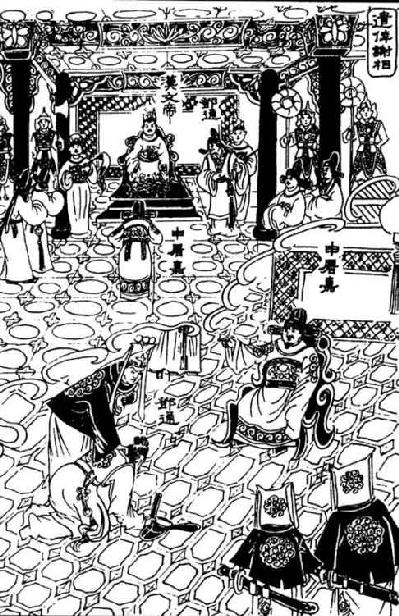

卷九十二 淮阴侯列传第三十二
苏轼：“抱王霸之大略，蓄英雄之壮图，志吞六合，气盖万夫。”陈亮：“汉高帝所籍以取天下者，故非一人之力，而萧何、韩信、张良盖杰然于其间。天下既定，而不免于疑。于是张良以神仙自托；萧何以谨畏自保；韩信以盖世之功，进退无以自明。萧何能知之于未用之先，而卒不能保其非叛，方且借信以为自保矣。”
淮阴侯韩信者，淮阴人也。始为布衣时，贫无行，不得推择为吏【推择为吏：战国以来，有一种制度是乡官向国家举荐本乡能够做官的人。】 ，又不能治生商贾，常从人寄食饮，人多厌之者。常数从其下乡南昌亭长寄食，数月，亭长妻患之，乃晨炊蓐【蓐：通“褥”。】 食。食时信往，不为具食。信亦知其意，怒，竟绝去。
信钓于城下，诸母漂【漂：漂洗棉絮。】 ，有一母见信饥，饭信。竟【竟：到最后。】 漂数十日。信喜，谓漂母曰：“吾必有以重报母。”母怒曰：“大丈夫不能自食，吾哀王孙【王孙：指年轻人。】 而进食，岂望报乎！”
淮阴侯韩信，是淮阴人。当初韩信是平民的时候，家里很穷，加上他品行放荡不羁，没有被推荐去做地方官吏，他又不能通过做生意来维持自己的生活，经常寄居在别人家里吃闲饭，所以大多数人都很讨厌他。韩信曾经数次去下乡县南昌亭亭长的家里吃闲饭，一连数月，亭长的妻子很厌恶他，于是每天早上很早就将早饭做好，在床上将早饭吃了。等到吃饭的时候，韩信来到亭长家，亭长夫人并没有给他准备饭食。韩信当然也明白他们的用意，一怒之下，竟然离开亭长家没有再回来。
韩信在城下钓鱼，几位老妇人在河边漂洗棉絮，其中一位老妇人见到韩信饥饿难耐，于是拿来饭食给韩信吃。漂洗棉絮几十天，就一直给韩信拿饭吃。韩信十分高兴，对那位老妇人说：“我一定会重重报答您老人家的。”老妇人生气地说：“大丈夫竟然连自己也不能养活，我是可怜你这个年轻人才给你饭吃的，难道是希望得到你的报答吗！”
淮阴屠中少年有侮信者，曰：“若虽长大，好带刀剑，中情怯耳。”众辱之曰：“信能死，刺我；不能死，出我袴【袴：通“胯”。】 下。”于是信孰视之，俯出袴下，蒲伏【蒲伏：同“匍匐”，爬行。】 。一市人皆笑信，以为怯。
及项梁渡淮，信杖剑【杖剑：执剑。】 从之，居戏下，无所知名。项梁败，又属项羽，羽以为郎中【郎中：侍从。】 。数以策干项羽，羽不用。汉王之入蜀，信亡楚归汉，未得知名，为连敖【连敖：管理仓库粮食的小吏。】 。坐法当斩，其辈十三人皆已斩，次至信，信乃仰视，适见滕公，曰：“上不欲就天下乎？何为斩壮士！”滕公奇其言，壮其貌，释而不斩。与语，大说之。言于上，上拜以为治粟都尉，上未之奇也。
淮阴的屠户中，有一个年轻人羞辱韩信，说：“尽管你长得人高马大，又喜欢随身佩带刀剑，但事实上你不过就是个胆小鬼。”年轻人又当众羞辱韩信说：“你要是不怕死，就拿出剑来跟我比试一番；如果怕死的话，就从我胯下钻过去。”韩信上下仔细打量了这个年轻人一番后，伏下身子，趴在地上，从年轻人的胯下钻了过去。在场的人都讥笑韩信，认为他胆小如鼠。
后来项梁带领军队渡过淮河的时候，韩信持剑追随项梁，在项梁部下，默默无闻。项梁战败之后，韩信又依附于项羽麾下，项羽让韩信做个侍从。韩信曾经多次向项羽献策，但是项羽始终没有采纳韩信的计策。汉王刘邦进入蜀地，韩信从楚军逃走归附了汉王，依旧默默无名，因此韩信在汉王部下只是做了一个管理粮仓的小官。后来由于触犯军法而被判处斩刑，他的同伙十三个人全部被杀死了，轮到韩信的时候，韩信抬头仰望，目光正好和滕公夏侯婴相对，韩信说：“汉王难道就不想要统一天下吗？为什么要斩杀壮士呢！”滕公听了他的话，十分惊奇，又见他仪表堂堂，于是放了他并没有处斩。滕公与韩信交谈，十分欣赏他。于是将这件事情禀报给汉王，汉王委任韩信为治粟都尉，但还是没有发觉韩信有什么特殊的才能。
何去非：“言兵无若孙武，用兵无若韩信、曹公。武虽以兵为书，而不甚见于其所自用。韩信不自为书，曹公虽为而不见于后世。然而传称二人者之学皆出于武，是以能神于用而不穷。窃尝究之，武之十三篇，天下之学失者所通诵也。使其皆知所以用之，则天下孰不为韩、曹也？以韩、曹未有继于后世，则凡得武之书伏而读之者，未必皆能办于战也。”
信数与萧何语，何奇之。至南郑，诸将行道【行道：中途。】 亡者数十人。信度何等已数言上，上不我用，即亡。何闻信亡，不及以闻，自追之。人有言上曰：“丞相何亡。”上大怒，如失左右手。居一二日，何来谒上，上且怒且喜，骂何曰：“若亡，何也？”何曰：“臣不敢亡也，臣追亡者。”上曰：“若所追者谁何？”曰：“韩信也。”上复骂曰：“诸将亡者以十数，公无所追；追信，诈也。”何曰：“诸将易得耳。至如信者，国士无双。王必欲长王汉中，无所事信；必欲争天下，非信无所与计事者。顾王策安所决耳。”王曰：“吾亦欲东耳，安能郁郁久居此乎？”何曰：“王计必欲东，能用信，信即留；不能用，信终亡耳。”王曰：“吾为公以为将。”何曰：“虽为将，信必不留。”王曰：“以为大将。”何曰：“幸甚。”于是王欲召信拜之。何曰：“王素慢无礼，今拜大将如呼小儿耳。此乃信所以去也。王必欲拜之，择良日，斋戒，设坛场，具礼，乃可耳。”王许之。诸将皆喜，人人各自以为得大将。至拜大将，乃韩信也，一军皆惊。
韩信多次和萧何交谈，萧何对于韩信的过人之处十分惊奇。抵达南郑的时候，在半路上逃跑的各路将领共有几十人。韩信猜想萧何等人已经前后多次向汉王举荐自己，但是汉王始终没有重用，于是也逃走了。萧何听说韩信逃跑了，来不及向汉王汇报，立即亲自去追韩信。有人禀报汉王说：“丞相萧何逃走了。”汉王怒不可遏，萧何一走，汉王如同失去了左右手一样。过了一两天，萧何前来拜谒汉王，汉王又是生气又是高兴，骂萧何说：“你逃走，是为什么？”萧何说：“我不敢逃走，我是去追逃走的人。”汉王说：“你所追的逃走之人是谁呢？”萧何回答说：“是韩信。”汉王又接着骂道：“各路将领逃亡的一共有几十人，您一个也没去追；却唯独去追赶那韩信，你这是在欺骗我。”萧何说：“那些将领容易得到，但是像韩信这样的人，全天下也很难再找到第二个。大王如果只想在汉中称王，那么自然用不着韩信；但是如果大王想要争夺天下，除了韩信就没有谁能够与您共商大事了。这全在大王如何决策了。”汉王说：“我当然也想要向东扩张，怎么能够郁郁寡欢，长期待在这个地方呢？”萧何说：“大王决意要向东发展的话，如果能重用韩信，韩信自然就会留下来；如果不能重用韩信，他最后还是要逃走的。”汉王说：“就看在您的面子上，让他做个将军。”萧何说：“就算是大王让他做将军，韩信也一定不肯留下。”汉王说：“那我任命他做大将军。”萧何说：“太好了。”于是，汉王想要召见韩信任命他为大将军。萧何说：“大王向来对人轻慢无礼，如今想要任命大将军就如同呼喊一个小孩子一样。这正是韩信想要逃走的原因。如果大王已经决定想要任命他为大将军，一定要选择一个良辰吉日，亲自斋戒，之后在广场上设置一个高坛，所有的礼仪都十分完备，这样才可以。”汉王答应了萧何的请求。众将听说要拜大将军的消息后都很高兴，人人认为自己要做大将军了。等到汉王任命大将军的时候，居然是韩信，全军将领都感到很惊讶。
信拜礼毕，上坐。王曰：“丞相数言将军，将军何以教寡人计策？”信谢，因问王曰：“今东乡争权天下，岂非项王邪？”汉王曰：“然。”曰：“大王自料勇悍仁强孰与项王？”汉王默然良久，曰：“不如也。”信再拜贺【贺：称赞。】 曰：“惟信亦为大王不如也。然臣尝事之，请言项王之为人也。项王喑噁叱咤【喑噁叱咤：呵斥的声音。】 ，千人皆废，然不能任属贤将，此特匹夫之勇耳。项王见人恭敬慈爱，言语呕呕【呕呕：温和的样子。】 ，人有疾病，涕泣分食饮。至使人有功当封爵者，印刓【刓：磨去棱角。】 敝，忍不能予，此所谓妇人之仁也。项王虽霸天下而臣诸侯，不居关中而都彭城。有背义帝之约，而以亲爱王，诸侯不平。诸侯之见项王迁逐义帝置江南，亦皆归逐其主而自王善地。项王所过无不残灭者，天下多怨，百姓不亲附，特劫于威强耳。名虽为霸，实失天下心。故曰其强易弱。今大王诚能反其道，任天下武勇，何所不诛！以天下城邑封功臣，何所不服！以义兵从思东归之士，何所不散！且三秦王为秦将，将秦子弟数岁矣，所杀亡不可胜计，又欺其众降诸侯。至新安，项王诈坑秦降卒二十余万，唯独邯、欣、翳得脱，秦父兄怨此三人，痛入骨髓。今楚强以威王此三人，秦民莫爱也。大王之入武关，秋毫无所害，除秦苛法，与秦民约，法三章耳，秦民无不欲得大王王秦者。于诸侯之约，大王当王关中，关中民咸知之。大王失职入汉中，秦民无不恨者。今大王举而东，三秦可传檄而定也。”于是汉王大喜，自以为得信晚。遂听信计，部署诸将所击。
韩信接受大将军任命仪式后，被请入上座。汉王说：“萧丞相数次推荐将军，将军有什么良策指教我呢？”韩信谦让了一番后，问汉王说：“如今向东进军夺取天下，难道我们的敌人不是项王吗？”汉王说：“是的。”韩信说：“大王自己估计，在勇敢、强悍、仁厚和兵力等方面与项王相比，谁更胜一筹？”汉王沉默了很长一段时间，然后说道：“我比不上项王。”韩信起身向汉王拜了两拜，赞许地说：“我也认为大王比不上项王。但是，我曾经服侍过项王，请准许我评价下项王的为人吧。项王在盛怒咆哮的时候，能够让千百个人心惊胆颤、瘫软在地，而且他不能知人善用，这不过就是匹夫之勇罢了。项王待人恭敬慈爱，言语温和，有人生病，项王心疼得涕泪横流，把自己的食物分给生病的人。等到有人立下战功，准备加封进爵的时候，项王就将已经刻好的大印放在手里反复把玩，直到大印连棱角都磨圆了也不舍得给人，这就是所说的妇人之仁。尽管项王称霸天下，诸侯都臣服他，但是他却放弃了关中的有利地势，而在彭城创建都城。而且，项王还违背了与义帝的盟约，将自己的亲信全部分封为王，这让诸侯十分愤怒。诸侯看着项王将义帝改迁到江南偏僻的地方，也都返回各自的封地、驱赶自己的国君，挑选好的地方自立为王。项王军队所经过的地方，全都遭到摧残毁灭，因此天下百姓大都十分怨恨项王，不愿归附于他，如今只不过是碍于形势所迫，勉强服从而已。尽管他现在是名义上的霸主，但是实际上他已经失去了天下的民心。因此说他现在很强，但是很快就会变弱。如今大王如果真的能够反其道而行之，任用天下骁勇善战的人，这样一来，还有什么不能被诛灭的呢！将天下的城邑分封给立下大功的臣子，还有什么人不心服口服呢！您率领正义之师，顺从将士们东归的心愿，还有什么样的敌人能不被击溃呢！更何况项羽所分封的三个诸侯王，他们原本都是秦朝的将领，带领秦朝的士兵征战数年，被杀死及逃走的人多到无法计算，却又欺骗他们的部下归降诸侯。到达新安后，项王使诈坑杀了已经投降于他的二十多万秦军，只有章邯、司马欣和董翳得以脱身，秦地的父老兄弟对这三个人恨之入骨。如今项羽仰仗着自己的威势，强行册封这三个人为诸侯王，秦地的百姓没有一个爱戴他们的。而大王您进入武关以后，不伤害百姓丝毫，废除了秦朝严酷的律法政令，与秦地的百姓约法三章，秦地的百姓没有不希望大王留在秦地称王的。何况根据诸侯之间已经达成的盟约，大王理所应当在关中称王，而关中的百姓都清楚这件事。大王后来失去了应得的爵位而被封在汉中，秦地的百姓没有谁不怨恨项王的。如今大王带领军队向东进军，只需要给天下人下一道檄文，三秦封地就能立即平定了。”汉王听了非常高兴，自认为与韩信相见恨晚。于是汉王听从韩信的谋略，部署各路将领准备攻打预定目标。
洪迈：“汉高祖用韩信为大将，而三以诈临之：信既定赵，高祖自成皋度河，晨自称汉使驰入信壁，信未起，即其卧，夺其印符，麾召诸将易置之；项羽死，则又袭夺其军；卒之伪游云梦而缚信。夫以豁达大度开基之主，所行乃如是，信之终于谋逆，盖有以启之矣。”
八月，汉王举兵东出陈仓【陈仓：地名，今陕西省宝鸡附近。】 ，定三秦。汉二年，出关，收魏、河南，韩、殷王皆降。合齐、赵共击楚。四月，至彭城，汉兵败散而还。信复收兵与汉王会荥阳，复击破楚京、索之间。以故楚兵卒不能西。
汉之败却彭城，塞王欣、翟王翳亡汉降楚，齐、赵亦反汉与楚和。六月，魏王豹谒归视亲疾，至国，即绝河关【河关：蒲津关，也叫临晋关。】 反汉，与楚约和。汉王使郦生说豹，不下。其八月，以信为左丞相，击魏。魏王盛兵蒲坂，塞临晋。信乃益为疑兵，陈船欲度临晋，而伏兵从夏阳以木罂缶渡军，袭安邑。魏王豹惊，引兵迎信，信遂虏豹，定魏为河东郡。汉王遣张耳与信俱，引兵东，北击赵、代。后九月，破代兵，禽夏说阏与【阏与：今山西省和顺。】 。信之下魏破代，汉辄使人收其精兵，诣荥阳以距楚。
八月，汉王率军途经陈仓向东进军，一举平定了三秦。汉二年（前205年），汉军出函谷关，收服了魏王、河南王，随后韩王、殷王也前来向汉王投降。汉王又联合齐王、赵王一同向楚军展开攻势。四月，到达彭城，汉军大败，溃散而归。韩信重新收复溃散的人马，在荥阳与汉王会合，再次在京县、索乡之间将楚君打败。楚军因此始终没有办法向西进军。
汉军在彭城战败之后，塞王司马欣、翟王董翳背叛汉王，向楚王投降，随后齐国、赵国也背叛汉王，与楚国讲和。六月，魏王豹借口看望生病的老母，向汉王请假回乡，魏王豹刚返回封国，就立即切断了黄河渡口临晋关的交通要道，反叛了汉王，同时与楚军定下盟约讲和。汉王派郦食其前去游说魏王豹，没能游说成功。这年八月，汉王委任韩信为左丞相，韩信带兵前去攻打魏王豹。魏王将主力部队驻守在蒲坂，堵塞了黄河渡口临晋关。于是韩信增设疑兵，陈列战船，假装要过河，但实际上却让部队暗中在夏阳附近用木制的盆瓮漂浮过河，偷袭安邑。魏王豹惊慌失措，率领军队迎击韩信，韩信俘获了魏王豹，魏地平定，汉王在魏地设置河东郡。汉王派张耳和韩信一起，带领军队向东进发，向北攻打赵国和代国。这年闰九月，韩信、张耳的军队打垮了代国的军队，在阏与活捉了夏说。韩信攻占魏国，摧毁代国之后，汉王立即派人将韩信的精锐兵力调走，将他们带去荥阳，与楚军对抗。
信与张耳以兵数万，欲东下井陉击赵。赵王、成安君陈余闻汉且袭之也，聚兵井陉口，号称二十万。广武君李左车说成安君曰：“闻汉将韩信涉西河，虏魏王，禽夏说，新喋血阏与，今乃辅以张耳，议欲下赵。此乘胜而去国远斗，其锋不可当。臣闻千里馈【馈：运输，运送。】 粮，士有饥色；樵苏【樵苏：砍柴。】 后爨cuàn【爨：做饭。】 ，师不宿饱。今井陉之道，车不得方轨，骑不得成列，行数百里，其势粮食必在其后。愿足下假臣奇兵三万人，从间道绝其辎重。足下深沟高垒，坚营勿与战。彼前不得斗，退不得还，吾奇兵绝其后，使野无所掠，不至十日，而两将之头可致于戏下。愿君留意臣之计。否，必为二子所禽矣。”成安君，儒者也，常称义兵不用诈谋奇计，曰：“吾闻兵法十则围之，倍则战。今韩信兵号数万，其实不过数千。能千里而袭我，亦已罢极。今如此避而不击，后有大者，何以加之！则诸侯谓吾怯，而轻来伐我。”不听广武君策，广武君策不用。
韩信和张耳带领几十万兵马，打算向东进军突破井陉口攻打赵国。赵王、成安君陈余听闻汉军即将攻打赵国，就在井陉口聚集兵力，号称二十万大军。广武君李左车向成安君献策说：“我听说汉王的将军韩信曾经渡过西河，俘获魏王豹，擒获夏说，最近又血洗了阏与，如今韩信还有张耳的协助，计划攻占赵国。这是乘胜追击离开本国的领土远征，他们的锋芒必定不能阻挡。可我听说从千里之外运送粮草，士兵们必然会忍饥挨饿；如果需要就地砍柴伐草，军队必定不能经常吃饱。如今井陉这条小路，不能并排行走两辆战车，不能让骑兵排成行列，行进的军队一定会绵延数百里，这样一来，汉军运输粮食的队伍必定会被远远地抛在后边。希望您能临时调拨三万奇兵给我，让我通过隐蔽小路偷袭汉军，前去拦截他们的粮草辎重。您就在赵地深挖战壕，高筑营垒，坚守阵地，不与汉军交战。他们向前不能战斗，向后没法退兵，我出奇兵阻断他们的退路，他们在荒郊野地里，什么东西也抢不到，不出十天，韩信、张耳两位将军的人头就能够送到将军您的帐下。希望您能够认真考虑我的计策。否则的话，一定会被他们二人所俘。”成安君，是一个信奉儒家学说的人，经常宣称正义的军队不应该采用欺诈的诡计，成安君说：“我听兵书上说，兵力十倍于敌人的时候，就可以包围敌人，兵力超过敌人一倍的时候就可以与敌人交战。如今韩信的军队号称有数万人，实际上不过才数千人而已。数千士兵居然长途跋涉前来袭击我们，一定已经疲惫不堪。现在如果我们像这样回避不出击的话，等到他们强大的后续部队赶到时，我们又该如何应对呢？诸侯会说我胆子小，就会很轻易地攻击我们。”于是没有采纳广武君的计策。
王世贞：“淮阴之初说高帝也，高密之初说光武也，武乡之初说昭烈也，若悬券而责之，又若合券焉！噫，可谓才也已矣！”李贽：“信与沛公初见，凡说项羽处，字字拿着沛公，沛公卒受其益。”
韩信使人间视【间视：暗中窥视。】 ，知其不用，还报，则大喜，乃敢引兵遂下。未至井陉口三十里，止舍。夜半传发，选轻骑二千人，人持一赤帜，从间道萆bì山而望赵军。诫曰：“赵见我走，必空壁逐我，若疾入赵壁，拔赵帜，立汉赤帜。”令其裨将传飧，曰：“今日破赵会食！”诸将皆莫信，详应曰：“诺。”谓军吏曰：“赵已先据便地为壁，且彼未见吾大将旗鼓，未肯击前行，恐吾至阻险而还。”信乃使万人先行，出，背水陈。赵军望见而大笑。平旦，信建大将之旗鼓，鼓行出井陉口。赵开壁击之，大战良久。于是信、张耳详弃鼓旗，走水上军。水上军开入之，复疾战。赵果空壁争汉鼓旗，逐韩信、张耳。韩信、张耳已入水上军，军皆殊死战，不可败。信所出奇兵二千骑，共候赵空壁逐利，则驰入赵壁，皆拔赵旗，立汉赤帜二千。赵军已不胜，不能得信等，欲还归壁，壁皆汉赤帜，而大惊，以为汉皆已得赵王将矣，兵遂乱，遁走，赵将虽斩之，不能禁也。于是汉兵夹击，大破虏赵军，斩成安君泜水上，禽赵王歇。
信乃令军中毋杀广武君，有能生得者购千金。于是有缚广武君而致戏下者，信乃解其缚，东向坐，西乡对，师事之。
韩信命人暗中窥探，得知成安君并没有采用广武君的计策，使者回来向韩信汇报，韩信十分高兴，才敢带领兵马进入狭窄的井陉道路。在距离井陉要塞出口还有三十里的时候，停下来扎营过夜。半夜的时候，韩信传令出发，从士兵中挑选出两千名轻装骑兵，每人手里拿着一面红旗，经由隐蔽小道来到山上，隐藏在山上观察赵国军队的一举一动。韩信告诫部下说：“两军交战的时候，赵军看见我军败逃，一定会倾巢出动来追赶我军，你们立即冲进赵军的营垒之中，将赵军的旗帜拔掉，然后竖起汉军的红旗。”接着，韩信又让副将向士兵们传达开饭的命令，说：“今天打败赵军就正式举行会餐！”将领们都不相信，只是假意回答说：“好。”韩信对手下军官说：“如今赵军已经先在有利的地势上筑造营垒，他们没有看到我们大将的旗帜、仪仗，就不会攻打我军的先遣部队，因为他们担心我们到了险要的地方就退回去。”于是，韩信派出万余名士兵担任先遣部队，出了井陉口，背靠河水摆开战斗的阵势。赵军远远望见韩信的士兵，大笑不止。天蒙蒙亮的时候，韩信架起大将的旗帜，设好战鼓，敲起进攻的鼓声开出井陉口。赵军终于打开营垒开始攻打汉军，两军激战了很久。于是韩信、张耳假装抛旗弃鼓，逃回河边的阵营。河边营垒中的部队打开营门放他们进去，接着又和赵军展开激战。赵军果真倾巢出动，争相抢夺汉军的旗鼓，追逐大将韩信、张耳。韩信、张耳进入河边阵地以后，全军将士拼死奋战，赵军不能打败他们。韩信事先派出去的两千名轻骑兵，见到赵军倾巢出动，前去追逐战利品，便立即冲进赵军空虚的营垒中，将赵军的旗帜全部拔掉，又立起提前准备好的两千面汉军红旗。这个时候，赵军已经无法战胜背水一战的韩信军，又无法俘获韩信等人，想要退回自己的营垒，却发现营垒上已经插满了汉军的红旗，十分震惊，还以为赵军的将领已经全都被汉军俘获了，于是军队陷入一片混乱之中，士兵们纷纷逃散，即使赵将诛杀逃兵，也不能制止士兵逃走。于是汉兵前后夹击，一举彻底摧垮赵军，俘虏了赵军的大批人马，在泜水岸边活捉了赵王歇。
唐顺之：“孔明之初见昭烈论三国，亦不能过。予故曰：淮阴者非特将略也。”杨维桢：“韩信登坛之日，毕陈平生之画略，论楚之所以失，汉之所以得，此三秦还定之谋所以卒定韩信之手也。”
韩信传令军中不要杀害广武君，有能够活捉广武君的人，赏赐千金。于是，有人捆绑着广武君将他送到韩信的军营，韩信亲自解开他的绳索，并邀请他面东而坐，自己则是面向西与广武君对坐，像对待老师那样恭敬地对待广武君。
诸将效首虏，毕贺，因问信曰：“兵法右倍山陵，前左水泽。今者将军令臣等反背水陈，曰破赵会食，臣等不服。然竟以胜，此何术也？”信曰：“此在兵法，顾诸君不察耳。兵法不曰‘陷之死地而后生，置之亡地而后存’？且信非得素拊循【拊循：顺应人心。】 士大夫也，此所谓‘驱市人【市人：指乌合之众。】 而战之’，其势非置之死地，使人人自为战；今予之生地，皆走，宁尚可得而用之乎！”诸将皆服曰：“善。非臣所及也。”
诸位将领纷纷献上敌军首级和俘虏，向韩信祝贺完毕后，询问韩信说：“兵法上曾说行军布阵应该右边背靠山脉做屏障，要对着河流做依靠。这次将军却让我们背水列阵，还说打垮了赵军今天正式举行会餐，我们这些人心里并不信服。但是居然真的取得了胜利，这究竟是什么战术？”韩信回答说：“这种战术也在兵法之上，只是诸位没有注意到而已。兵法上不是说过‘陷之死地而后生，置之亡地而后存’吗？何况我并没有平时接受我训练的将士，这就是俗语所说的‘赶着乌合之众去作战’，这样的形势下，只有把将士们先置于死地，让每个人都为了保住自己的性命而死战；要是给将士们留有生路，那么他们就会全部败逃了，如何还能依靠他们获得胜利呢！”将领们都信服地说：“好。将军的谋略并非我们这些人能够比得上的。”
曾国藩：“彭越败散，而后信收兵至荥阳，破楚京索之间。下魏破代，而后汉辄收信精兵荥阳距楚。成皋围急，而后汉王至赵，驰人信壁。此三役，皆高祖有急，赖信得全。子长于此等处，颇为用意。”
于是信问广武君曰：“仆欲北攻燕，东伐齐，何若而有功？”广武君辞谢曰：“臣闻‘败军之将，不可以言勇；亡国之大夫，不可以图存’。今臣败亡之虏，何足以权大事乎！”信曰：“仆闻之，百里奚居虞而虞亡，在秦而秦霸，非愚于虞而智于秦也，用与不用，听与不听也。诚令成安君听足下计，若信者亦已为禽矣。以不用足下，故信得侍耳。”因固问曰：“仆委心【委心：诚心地听从安排。】
归计，愿足下勿辞。”广武君曰：“臣闻‘智者千虑，必有一失；愚者千虑，必有一得’。故曰‘狂夫之言，圣人择焉’。顾恐臣计未必足用，愿效愚忠。夫成安君有百战百胜之计，一旦而失之，军败鄗下，身死泜上。今将军涉西河，虏魏王，擒夏说阏与，一举而下井陉，不终朝破赵二十万众，诛成安君。名闻海内，威震天下，农夫莫不辍耕释耒【辍耕释耒：从事农业生产。】
，褕衣【褕衣：盛装，这里指穿的好。】
甘食，倾耳以待命者。若此，将军之所长也。然而众劳卒罢，其实难用。今将军欲举倦弊之兵，顿之燕坚城之下，欲战恐久力不能拔。情见势屈，旷日粮竭，而弱燕不服，齐必距境以自强也。燕齐相持而不下，则刘项之权未有所分也。若此者，将军所短也。臣愚，窃以为亦过矣。故善用兵者不以短击长，而以长击短。”韩信曰：“然则何由？”广武君对曰：“方今为将军计，莫如案甲休兵，镇赵抚其孤，百里之内，牛酒日至，以飨士大夫 兵。北首燕路，而后遣辩士奉咫尺之书，暴其所长于燕，燕必不敢不听从。燕已从，使喧言【喧言：扬言。】
者东告齐，齐必从风而服。虽有智者，亦不知为齐计矣。如是，则天下事皆可图也。兵固有先声而后实者，此之谓也。”韩信曰：“善。”从其策，发使使燕，燕从风而靡。乃遣使报汉，因请立张耳为赵王，以镇抚其国。汉王许之，乃立张耳为赵王。
兵。北首燕路，而后遣辩士奉咫尺之书，暴其所长于燕，燕必不敢不听从。燕已从，使喧言【喧言：扬言。】
者东告齐，齐必从风而服。虽有智者，亦不知为齐计矣。如是，则天下事皆可图也。兵固有先声而后实者，此之谓也。”韩信曰：“善。”从其策，发使使燕，燕从风而靡。乃遣使报汉，因请立张耳为赵王，以镇抚其国。汉王许之，乃立张耳为赵王。
于是韩信询问广武君说：“我打算向北攻打燕国，向东讨伐齐国，怎么做才能取得成功呢？”广武君推辞说：“我听说‘战败的将领，没有资格再说勇敢；失去国家的大夫，没有资格参与谋划国家大计’。如今我是一个用兵失败、国家灭亡的俘虏，哪里有资格再商议国家大事呢！”韩信说：“我听说，百里奚居住在虞国的时候，虞国灭亡了；百里奚在秦国，秦国却得以称霸，并不是说百里奚在虞国的时候愚蠢，而到了秦国之后就聪明了，而在于他的国君懂不懂得知人善任，能不能采纳他的意见。如果成安君真的采纳了您的计策，我韩信也早被赵国生擒了。因为成安君没能采纳您的计谋，所以我才得以在这里侍奉您。”韩信坚持请教广武君说：“我一定会认真听从您的计谋，希望您不要再推辞。”广武君说：“我听人说‘有智慧的人千思百想，一定会有一次失误；愚钝的人如果能够反复考虑，也一定会有一次正确的’。因此俗话说‘狂人所说的话，圣人也能够选择性地听取’。我只是担心我的计谋不足以让您采用，但我一定会竭尽所能，忠心效力。成安君原本拥有能够百战百胜的计谋，但是一旦他失去了这个计谋，军队就只能在鄗县大败，而自己也死在泜水之上。如今将军您横渡黄河，活捉了魏王，在阏与活捉夏说，一举攻占井陉，只用了不到一个早晨的时间就打败了二十万赵军，诛杀了成安君。如今您的名声已经传遍四海了，您的声威也已经震动整个天下了，农夫们都因感到兵灾即将临门而纷纷放下农具，停止耕作，穿好的衣服，吃好的食物，等待您出兵的消息了。像这些，都是将军的优势。但是，如今百姓劳苦困顿，士卒疲惫不堪，很难继续作战。如果将军打算驱使这些疲惫的士兵，驻扎在燕国坚固的城墙之下，想要进行作战，恐怕很长时间也难以攻克。一旦军队实情暴露，军队的威势就会减弱，长此以往，军粮消耗殆尽，而弱小的燕国始终不肯投降屈服，齐国一定会拒守边境，想办法自强起来。如果燕、齐两国始终坚持不肯服从，那么，汉、楚双方的胜负就很难断定了。果真像这样的话，这就是将军征战策略上的短处了。我的见识浅薄，为人愚钝，但是还是认为您的策略是错的。所以，善于行军作战的人不会用自己的短处去攻击敌人的长处，而是用自己的长处去攻打敌人的短处。”韩信说：“那么我又该怎么做呢？”广武君回答说：“现在如果为将军打算，不如按兵不动，让士兵休养生息，稳定赵国的社会秩序，安抚赵国阵亡将士的遗孤。这样一来，方圆百里之内的百姓，一定会感激不尽，每天送来酒肉，犒劳将士。将军可以向北进军，将军队驻守在前往燕国的要道上，然后派出说客，拿著书信前去燕国，在燕国国君面前展现己方的优势，燕国一定不敢不归附。燕国归附之后，再派说客往东游说齐国，齐国必定会闻风降服。就算是有聪明睿智的人，也没有办法替齐国谋划了。这样的话，那么天下大事就都可以谋取了。用兵原本就有先以声势夺人，然后再采取实际行动的策略，这正是我所说的情形。”韩信说：“好。”于是听从了广武君的计策，派使者出使燕国，燕国听到消息后果然投降。韩信又派使者前去报告汉王，并请求汉王立张耳为赵王，以便镇压安抚赵国。汉王答应了韩信的请求，封张耳为赵王。
楚数使奇兵渡河击赵。赵王耳、韩信往来救赵，因行定赵城邑，发兵诣汉。楚方急围汉王于荥阳，汉王南出，之宛【宛：今河南省南阳市一带。】 、叶【叶：今河南省叶县一带。】 间，得黥布，走入成皋，楚又复急围之。六月，汉王出成皋，东渡河，独与滕公俱，从张耳军修武。至，宿传舍。晨自称汉使，驰入赵壁。张耳、韩信未起，即其卧内上夺其印符，以麾召诸将，易置之。信、耳起，乃知汉王来，大惊。汉王夺两人军，即令张耳备守赵地。拜韩信为相国，收赵兵未发者击齐。
信引兵东，未渡平原【平原：今山东省平原一带。】 ，闻汉王使郦食其已说下齐，韩信欲止。范阳辩士蒯通说信曰：“将军受诏击齐，而汉独发间使下齐，宁有诏止将军乎？何以得毋行也！且郦生一士，伏轼【伏轼：乘车。】 掉三寸之舌，下齐七十余城。将军将数万众，岁余乃下赵五十余城。为将数岁，反不如一竖儒【竖儒：见识浅薄的儒士。】 之功乎？”于是信然之，从其计，遂渡河。齐已听郦生，即留纵酒，罢备汉守御。信因袭齐历下军，遂至临菑。齐王田广以郦生卖己，乃亨【亨：同“烹”，烹杀。】 之，而走高密，使使之楚请救。韩信已定临菑，遂东追广至高密西。楚亦使龙且将，号称二十万，救齐。
楚国多次派出奇兵渡过黄河攻打赵国。赵国张耳、韩信经常往来救援赵国，趁着行军之便，将所经过的赵国城邑全部占领，接着发兵支持汉王。当时，楚军正将汉王围困在荥阳，汉王从包围圈的南面突围，逃到宛县、叶县一带，在那里得到了黥布，然后直奔成皋，楚军又赶紧围困成皋。六月，汉王从成皋逃出，向东渡过黄河，身边只有滕公跟随，逃亡到张耳军队在修武的营地。汉王到达修武后，就住进馆舍中。第二天清晨，他自称是汉王的使者，骑马直接奔进赵军的营垒。张耳、韩信两人还没有起床，汉王就来到他们的卧室里，抢夺了他们的印信和兵符，召集诸位将领，调整了他们的职务。韩信、张耳起床之后，才知道汉王来了，十分震惊。汉王夺走了韩信、张耳两人统领军队的军权，命令张耳在赵地坚守。委任韩信出任赵国的国相，让他收编征集赵国还没有前往荥阳的军队，准备攻打齐国。
韩信带领军队向东进军，还没渡过平原渡口时，就听说汉王派郦食其为使者，已经将齐王成功说服了。韩信想要停止进军。范阳的说客蒯通劝谏韩信说：“将军您是奉汉王的诏令攻打齐国，而汉王现在只是暗中派出一个使者游说齐国投降，难道汉王下诏命将军停止进攻了吗？将军为什么要停止进军呢！况且那郦食其只不过是个手无缚鸡之力的读书人，他坐着车子，凭借自己的三寸之舌，就收服了齐国七十多座城池。将军您带领数万大军，经过一年多的时间，才攻下赵国的五十多座城邑。身为将领这么多年，功劳反倒比不上一个小小儒士了吗？”韩信认为蒯通说得很对，于是听从了他的计策，就带领军队渡过黄河。齐王听从了郦食其的劝降以后，挽留郦食其把酒言欢，撤除了防备汉军的守卫。韩信乘机突袭齐王麾下的军队，战争很快打到齐国的都城临菑。齐王田广认为自己被郦食其出卖了，于是将他烹杀，然后逃往高密，派使者前往楚国请求援助。韩信平定临菑后，就带兵向东追赶田广，一直追到高密城西。这时，楚国也派将军龙且带领著号称二十万的大军前来救援齐国。
齐王广、龙且并军与信战，未合。人或说龙且曰：“汉兵远斗穷战，其锋不可当。齐、楚自居其地战，兵易败散。不如深壁。令齐王使其信臣招所亡城，亡城闻其王在，楚来救，必反汉。汉兵二千里客居，齐城皆反之，其势无所得食，可无战而降也。”龙且曰：“吾平生知韩信为人，易与耳。且夫救齐不战而降之，吾何功？今战而胜之，齐之半可得，何为止！”遂战，与信夹潍水陈。韩信乃夜令人为万余囊【囊：口袋。】 ，满盛沙，壅水上流，引军半渡，击龙且，详【详：通“佯”，假装，假意。】 不胜，还走。龙且果喜曰：“固知信怯也。”遂追信渡水。信使人决壅囊，水大至。龙且军大半不得渡，即急击，杀龙且。龙且水东军散走，齐王广亡去。信遂追北至城阳，皆虏楚卒。
汉四年，遂皆降平齐。使人言汉王曰：“齐伪诈多变，反复之国也，南边楚，不为假王以镇之，其势不定。愿为假王便。”当是时，楚方急围汉王于荥阳，韩信使者至，发书，汉王大怒，骂曰：“吾困于此，旦暮望若来佐我，乃欲自立为王！”张良、陈平蹑汉王足，因附耳语曰：“汉方不利，宁能禁信之王乎？不如因而立，善遇之，使自为守。不然，变生。”汉王亦悟，因复骂曰：“大丈夫定诸侯，即为真王耳，何以假为！”乃遣张良往立信为齐王，征其兵击楚。
齐王田广与龙且的两支部队汇合，一起对抗韩信，还没有交锋。有人劝说龙且道：“汉军远离本国土地来到这里，必定会拼死作战，他们的锋芒不可抵挡。齐、楚两国的士兵是在本乡本土作战，士兵很容易溃败逃散。不如深挖沟壕，高筑壁垒，坚守在城池中，不出门迎战。让齐王派他的亲信大臣，前去安抚已经被韩信攻陷的城邑，如果这些城池的官吏和百姓知道他们的君主还活着，楚军又赶来援救齐国，必定会联合起来反叛汉军。汉军身在两千里之外的异国他乡，齐国城池的人又都纷纷反抗他们，那他们肯定得不到粮食，这样就能够迫使他们不战而降。”龙且说：“我向来很了解韩信的为人，他很容易对付。而且如今项王命我带兵前来援救齐国，如果没有经过战斗而让韩信投降，那我还有什么功劳可说？现在如果能战胜他，齐国有一半土地能够划分给我，这样的仗为什么不打！”于是两军开战，龙且与韩信隔着潍水布阵。于是韩信下令连夜赶制出一万多个口袋，口袋里装满了沙子，用这些口袋将潍水的上游堵住，带领一半军队从上游渡过河去，攻打龙且，然后假装战败，向后撤退。龙且果然大喜：“我原本就知道韩信是个胆小的人。”于是，龙且就渡过潍水追击韩信。韩信立即下令将堵塞潍水的沙袋移开，河水汹涌而至。当时，龙且的军队还有一半多没有渡过潍水，韩信便回军勐烈反击，杀死了楚军将领龙且。潍水东岸尚未渡过潍水的龙且余部，看见这种情况立即四散逃跑，齐王田广也逃走了。韩信一路追击败兵到了城阳，将楚军的士兵全部俘虏了。
汉四年（前203年），韩信终于平定了齐国。韩信派人上书给汉王说：“齐国是一个阴险狡诈，反复无常的国家，它南面与楚国交界，如果不在齐国设立一个暂时代理的齐王来镇抚百姓，齐国的局势一定没办法稳定。为了巩固当前的局势，希望您能允许我暂时代理齐国的王。”当时，楚军正在荥阳加紧围困汉王，韩信的使者到达后，汉王打开书信一看，勃然大怒，骂道：“如今我在这儿被围困，日夜只盼你能来救我，你居然想要自立为王！”张良、陈平暗中踩了汉王的脚，接着对汉王耳语说：“如今汉军处境十分危急，您怎么能禁止韩信称王呢？不如借此机会封他为王，好生待他，让他好好镇守齐国。否则的话，韩信很可能会叛变。”汉王也醒悟过来，又假装骂道：“大丈夫既然平定了诸侯，那就做真正的王好了，为什么要做个暂时代理的王呢！”于是，汉王派张良前往齐国，册封韩信为齐王，徵调韩信的军队来攻打楚军。
楚已亡龙且，项王恐，使盱眙人武涉往说齐王信曰：“天下共苦秦久矣，相与戮力击秦。秦已破，计功割地，分土而王之，以休士卒。今汉王复兴兵而东，侵人之分，夺人之地，已破三秦，引兵出关，收诸侯之兵以东击楚。其意非尽吞天下者不休，其不知厌足如是甚也。且汉王不可必【必：可信。】 ，身居项王掌握中数矣，项王怜而活之，然得脱，辄倍约，复击项王。其不可亲信如此。今足下虽自以与汉王为厚交，为之尽力用兵，终为之所禽矣。足下所以得须臾至今者，以项王尚存也。当今二王之事，权在足下。足下右投则汉王胜，左投则项王胜。项王今日亡，则次取足下。足下与项王有故，何不反汉与楚连和，参分天下王之？今释此时，而自必于汉以击楚，且为智者固若此乎！”韩信谢曰：“臣事项王，官不过郎中，位不过执戟，言不听，画不用，故倍楚而归汉。汉王授我上将军印，予我数万众，解衣衣我，推食食我，言听计用，故吾得以至于此。夫人深亲信我，我倍之不祥，虽死不易。幸为信谢项王！”
楚军已经失去了龙且，项王十分担心，于是派盱眙人武涉前去游说齐王韩信说：“天下人苦于秦朝的残暴统治，所以大家才合力攻打秦。秦覆灭以后，项王按照功劳分割领土，大家各自为王，士兵们也得到了充分的休息。如今汉王又带领军队向东进军，侵犯、掠夺他人的封地，汉王在平定三秦之后，又率军出函谷关，四处收集各路诸侯的军队合力向东攻打楚国。汉王的意图十分明显，不吞并整个天下，他是不会罢休的，汉王贪心不足至如此地步，实在是太过分了。何况汉王本来就不值得信任，他自身曾经多次落到项王手中，是项王的怜悯才让他得以苟活，但是汉王一经脱身，就立即背弃盟约，再次攻打项王。他是这样一个不可亲近，不可信赖的人。如今即使您自认为和汉王有很深厚的交情，您替他全心全意地领兵作战，最后还是会被他所擒。您之所以能够保存性命到今天，就是因为项王还存在。现在刘、项二人争夺天下，胜败的关键，就取决于您了。如果您倾向西边，那么汉王就会取胜；如果您倾向东边，那么项王就会取胜。如果项王今天被汉王消灭，那么接下来要消灭的就是您了。既然您与项王原本就有交情，为什么不反叛汉王，与楚军联和，然后三分天下，自立为王呢？现在，您放弃了这个时机，一定会帮助汉王攻打楚王，一个真正聪明、有智慧的人，难道会这样选择吗！”韩信辞谢说：“我当初在侍奉项王的时候，不过就是一个小小的侍从，所居职位不过是个手持战戟的侍卫，进言不被听从，计策不被采纳，所以我才背楚归汉。汉王授予我上将军的印玺，授予我数万兵马，脱下他自己的衣服给我披上，将他吃的食物让给我吃，对我言听计用，所以我才能够得到如今这些东西。人家对我如此亲近、信任，我背叛他的话不会有什么好结果的，即使一直到我死也不会改变想法。请您替我辞谢项王的盛情！”
武涉已去，齐人蒯通知天下权在韩信，欲为奇策而感动之，以相人说韩信曰：“仆尝受相人之术。”韩信曰：“先生相人何如？”对曰：“贵贱在于骨法，忧喜在于容色，成败在于决断。以此参之，万不失一。”韩信曰：“善。先生相寡人何如？”对曰：“愿少间【愿少间：希望能够留出一些空闲，即屏退旁人。】 。”信曰：“左右去矣。”通曰：“相君之面，不过封侯，又危不安。相君之背，贵乃不可言。”韩信曰：“何谓也？”蒯通曰：“天下初发难也，俊雄豪杰建号壹呼，天下之士云合雾集，鱼鳞杂沓tà【鱼鳞杂沓：像鱼鳞一样细密地排列。】 ，熛【熛：火焰迸飞。】 至风起。当此之时，忧在亡秦而已。今楚汉分争，使天下无罪之人肝胆涂地，父子暴骸骨于中野，不可胜数。楚人起彭城，转斗逐北，至于荥阳，乘利席卷，威震天下。然兵困于京、索之间，迫西山而不能进者，三年于此矣。汉王将数十万之众，距巩、雒，阻山河之险，一日数战，无尺寸之功，折北不救。败荥阳，伤成皋，遂走宛、叶之间，此所谓智勇俱困者也。夫锐气挫于险塞，而粮食竭于内府，百姓罢极怨望，容容【容容：这里指动荡不安。】 无所倚。以臣料之，其势非天下之贤圣固不能息天下之祸。当今两主之命县于足下。足下为汉则汉胜，与楚则楚胜。臣愿披腹心，输肝胆，效愚计，恐足下不能用也。诚能听臣之计，莫若两利而俱存之，参分天下，鼎足而居，其势莫敢先动。夫以足下之贤圣，有甲兵之众，据强齐，从燕、赵，出空虚之地而制其后，因民之欲，西乡为百姓请命，则天下风走而响应矣，孰敢不听！割大弱强，以立诸侯。诸侯已立，天下服听而归德于齐。案【案：通“按”，安定。】 齐之故，有胶、泗之地，怀诸侯以德，深拱【深拱：抱拳致敬。】 揖让【揖让：作揖谦让。】 ，则天下之君王相率而朝于齐矣。盖闻天与弗取，反受其咎；时至不行，反受其殃。愿足下孰虑之。”
武涉离开后，齐国人蒯通得知掌握天下大权的关键在于韩信，于是想献上奇策打动他，便以看相人的身份游说韩信说道：“我曾经学过相术。”韩信说：“先生的相术怎么样呢？”蒯通回答说：“人的高低贵贱体现在骨格，人的忧愁喜悦体现在面色，而人的成功失败则在于决断。通过这三项来给人看相，能够万无一失。”韩信说：“好。那先生给我看看相如何？”蒯通回答说：“希望能够让您的侍从暂时回避一下。”韩信说：“左右的人都下去吧。”蒯通说：“从您的面相看来，爵位只不过封侯，而且就算封侯也还是有危险。看您的背相，荣华富贵，取之不尽。”韩信说：“您这么说是什么意思呢？”蒯通说：“想当初，天下发兵起义的时候，英雄豪杰纷纷创建自己的名号，登高一呼，天下有识之士如同云雾一般响应，如同鱼鳞一样叠沓到一起，如同火焰一样四处迸飞，狂风骤起。正在这个时候，诸侯唯一担忧的就是灭掉秦朝而已。如今，楚汉相争，让天下无辜的百姓受到牵连，肝胆涂地，父子的尸骨遍布在荒郊野外，数不胜数。楚国人在彭城起兵，转战四面八方，追逐败兵，一直追到荥阳，乘胜席卷而至，声势震动整个天下。后来楚军被困在京、索之间，被汉军阻挡在成皋西面的山岳地带不能继续前进，到如今已经三年了。汉王率领几十万人马在巩县、雒阳一带攻打楚军，凭借着险要的山河地势，尽管一日连续数战，但是始终没有一点战功，所以屡次遭受挫折失败，险些没有办法自救。在荥阳战败后，又在成皋受伤，于是落荒而逃，逃到宛县、叶县之间，这就是所说的智慧和勇勐全部匮乏了。士兵的锐气由于长时间被困于险要的山河之中而被挫伤，仓库的军粮也即将消耗殆尽，百姓疲惫不堪，心生怨恨，民心动荡，没有什么可以依靠的。根据我的推测，这样的局面若非天下的圣贤是不能平息的。现在刘、项二王的命运都掌握在您的手里。您辅助汉王，汉王就会取得胜利；您辅助楚王，楚王就会取得胜利。我愿意竭尽我所能，为您敬献愚钝的计策，只是担心您不肯采纳。如果您真能听从我的计策，不如让楚、汉双方都有利，能够同时存在，您和刘、项三分天下，呈现鼎足之势，这样的话，就没有任何一方敢轻举妄动了。以您的贤明圣德，又拥有如此多的兵马，现在又占据着强大的齐国，迫使燕、赵两国屈从，您如果出兵到刘、项两军后方的空虚地带，牵制住双方，趁机顺应百姓的心愿，向西发兵，前去制止刘、项两军的纷争，为将士和百姓请命，那么，天下就会群起响应，没有人敢不听从！然后，分割大国的土地，削弱强国的威势，将这些土地分封给诸侯。等到诸侯恢复王位以后，全天下的人就会感激您的恩德，服从齐国的命令。稳守齐国原有的疆土，拥有胶河、泗水流域，再用恩德来安抚诸侯，恭谨谦让，这样一来，天下的君王就会相继到齐国前来朝见。我听说上天赐予的好处如果不接受的话，反倒会受到上天的惩罚；时机到了却没有采取行动的话，反倒要遭致祸患。希望您能够仔细思考这件事。”
韩信曰：“汉王遇我甚厚，载我以其车，衣我以其衣，食我以其食。吾闻之，乘人之车者载人之患，衣人之衣者怀人之忧，食人之食者死人之事，吾岂可以乡利倍义乎！”蒯生曰：“足下自以为善汉王，欲建万世之业，臣窃以为误矣。始常山王、成安君为布衣时，相与为刎颈之交，后争张黡、陈泽之事，二人相怨。常山王背项王，奉项婴头而窜，逃归于汉王。汉王借兵而东下，杀成安君泜水之南，头足异处，卒为天下笑。此二人相与，天下至欢也。然而卒相禽者，何也？患生于多欲而人心难测也。今足下欲行忠信以交于汉王，必不能固于二君之相与也，而事多大于张黡、陈泽。故臣以为足下必汉王之不危己，亦误矣。大夫种、范蠡存亡越，霸句践，立功成名而身死亡。野兽已尽而猎狗亨。夫以交友言之，则不如张耳之与成安君者也；以忠信言之，则不过大夫种、范蠡之于句践也。此二人者，足以观矣。愿足下深虑之。且臣闻勇略震主者身危，而功盖天下者不赏。臣请言大王功略：足下涉西河，虏魏王，禽夏说，引兵下井陉，诛成安君，徇赵，胁燕，定齐，南摧楚人之兵二十万，东杀龙且，西乡以报，此所谓功无二于天下。而略不世出【不世出：世间少有。】 者也。今足下戴震主之威，挟不赏之功，归楚，楚人不信；归汉，汉人震恐。足下欲持是安归乎？夫势在人臣之位而有震主之威，名高天下，窃为足下危之。”韩信谢曰：“先生且休矣，吾将念之。”
韩信说：“汉王待我非常好，他把自己的车子让给我坐，把自己的衣裳送给我穿，把自己的食物分给我吃。我听人说，乘坐过他人的车子，就要帮助他分担祸患；穿过人家的衣裳，就要给人家分担忧愁；吃过人家的食物，就要效忠于人家的事业；难道我可以由于贪图私利而做出背信弃义的事情吗！”蒯通说：“您自己认为和汉王私交很好，想要为汉王创建起万世的功业，我个人却觉得您这样的想法是错误的。当初常山王、成安君还是平民百姓的时候，曾与汉王结为生死之交，后来因为张黡、陈泽的事引发争执，使得两个人之间心生仇恨。常山王背叛了项王，捧着项婴的人头逃跑，向汉王投降。汉王将军队借给他让他向东出击，在泜水南面杀死了成安君，成安君落得个身首异处的下场，被天下人耻笑。他们两个人的交情，可以称得上是全天下最要好的。但是到最后，还不是想将对方置于死地，为什么呢？祸患大多是因为人的贪得无厌，以及人心难测产生的。如今您打算凭借自己的忠诚和信义去与汉王结交，交情一定不会比张耳、陈余之间的交情更稳固，但是你们之间的事情大多比张黡、陈泽的事件更重要。因此我觉得您认为汉王一定不会危害自己，也是错误的。大夫文种、范蠡共同努力，让濒临灭亡的越国得以留存，帮助句践称霸天下，句践功成名就后，文种被迫自杀身亡，范蠡也逃亡在外。野兽打完之后，猎犬就会被烹杀。如果谈论到交情友谊，那么您和汉王的交情是比不上张耳与成安君的；如果谈到忠诚信义，您和汉王也比不上大夫文种、范蠡与越王句践了。这两类人，已经足以帮助您看清状况了。希望您能够认真考虑。何况我听说，勇勐、智慧让君主感到威胁的人，处境是很危险的；而功盖天下的人通常都得不到赏赐。请允许我说一说您的功勋和谋略吧：您横渡黄河，俘虏了魏王，活捉了夏说，带领军队攻占井陉，诛杀成安君，占领赵国，凭借自己的声威镇服燕国，平定了齐国，向南摧垮了楚国的二十万军队，向东进军杀死了楚国的大将军龙且，向西面的汉王传达捷报，这样的功劳可以说天下无二。同时，您谋略出众，世间少有。如今您拥有震慑君主的威势，立下无法封赏的功勋，如果这个时候归附楚国的话，楚国人一定不信任您；如果归附汉的话，汉人一定会感到震惊和恐惧。您带着这样大的功勋和声威，又能到哪里去呢？处于臣子的地位上却具有让君主都感到威胁的震撼力量，名望高过天下人，我个人为您感到担忧。”韩信辞谢说：“先生暂且说到这里吧。让我仔细考虑考虑。”
后数日，蒯通复说曰：“夫听者事之候也，计者事之机也。听过计失而能久安者，鲜矣。听不失一二者，不可乱以言；计不失本末者，不可纷以辞。夫随厮养【厮养：噼柴喂马。】 之役者，失万乘之权；守儋石之禄【儋石之禄：极少的俸禄。】 者，阙卿相之位。故知者决之断也，疑者事之害也。审豪牦之小计，遗天下之大数，智诚知之，决弗敢行者，百事之祸也。故曰：‘勐虎之犹豫，不若蜂虿【蜂虿：蜜蜂和蝎子。】 之致螫；骐骥【骐骥：千里马。】 之跼jú躅zhú【跼躅：犹豫不前。】 ，不如驽马之安步【安步：慢慢地前行。】 ；孟贲之狐疑，不如庸夫之必至也；虽有舜禹之智，吟【吟：通“噤”，闭口不言。】 而不言，不如喑聋之指麾【麾：通“挥”，挥手示意。】 也。’此言贵能行之。夫功者难成而易败，时者难得而易失也。时乎时，不再来。愿足下详察之。”韩信犹豫不忍倍汉，又自以为功多，汉终不夺我齐，遂谢蒯通。蒯通说不听，已详狂为巫。
几天之后，蒯通再次游说韩信说：“能够听从他人善谋的人，就能够预先准确把握事情变化的征兆；能够反复思考的人，就能掌握成功的关键。听从了错误的意见却长治久安的人，实在太少了。听取他人意见，十次之中就连一两次的失误都没有，那么就不会被他人的花言巧语所迷惑；考虑问题的时候，从来不会本末倒置并且能够轻重适宜，那么就不会为别人巧妙的言辞所扰乱。心甘情愿从事喂马噼柴等差事的人，就会失去成为万圣之尊的大好机会；安心守着微薄俸禄度日的人，就不会获得公卿宰相这样高位。因此聪明的人处理事情当机立断，优柔的人处理事情迟疑不决。整天在一些琐碎的事情上花费心思，就会忘记了天下的大事，智慧能够判断出是非，决定之后却又不敢贸然行动，这是一切事情失败的祸根。因此有句话说：‘犹豫不决的勐虎，还比不上黄蜂、蝎子可以用毒刺去螫敌人；千里马徘徊不前，比不上一匹稳步前进的劣马；勇勐如孟贲处事却犹豫不决，甚至比不上一个为达到目的，决心实干的凡夫俗子；就算是有虞舜、夏禹那样高超的智慧，却闭上嘴巴不说话，那还不如借助手势沟通的聋哑人起作用。’这些俗语都意在说明勇于付诸行动是难能可贵的。功业难以创建却很容易失败，时机难以把握却很容易失掉。时机啊时机，错过了就不会再来了。希望您能够仔细地考虑。”韩信仍然犹豫不决，不忍心背叛汉王，同时又自认为自己功勋如此卓著，汉王是不会夺去自己的齐国的，于是，韩信谢绝了蒯通的好意。蒯通见自己的规劝没有被韩信采纳，就装疯卖傻做了巫师。
汉王之困固陵【固陵：今河南省淮阳之固陵。】 ，用张良计，召齐王信，遂将兵会垓下。项羽已破，高祖袭夺齐王军。汉五年正月，徙齐王信为楚王，都下邳。
信至国，召所从食漂母，赐千金。及下乡南昌亭长，赐百钱，曰：“公，小人也，为德不卒。”召辱己之少年令出胯下者以为楚中尉。告诸将相曰：“此壮士也。方辱我时，我宁不能杀之邪？杀之无名，故忍而就于此。”
汉王被围困在固陵的时候，采用了张良进献的计谋，召唤齐王韩信前来救援，于是，韩信便率军在垓下与汉王会师。项羽被打败之后，高祖采用突袭的方法夺去了韩信的军权。汉五年（前202年）正月的时候，汉王改封齐王韩信为楚王，以下邳为都城。
韩信来到下邳，召见了曾经给他东西吃的那位漂洗棉絮的老妇人，赏赐千金。接着轮到下乡县南昌亭亭长，韩信只赏赐一百钱，说：“您，是一位小人，行善事不能有始有终。”又召见了曾经侮辱过他、让他从胯下钻过去的那个年轻人，任命他为巡捕盗贼的武官。同时告诉身边的将相说：“这是一位壮士。当初他在羞辱我的时候，难道我就不能杀死他吗？因为我杀他没有任何道理，所以我能够忍受一时的侮辱才到了今天的地位。”
项王亡将钟离眛家在伊庐【伊庐：今江苏省灌云一带。】 ，素与信善。项王死后，亡归信。汉王怨眛，闻其在楚，诏楚捕眛。信初之国，行县邑，陈兵出入。汉六年，人有上书告楚王信反。高帝以陈平计，天子巡狩会诸侯，南方有云梦【云梦：云梦泽。】 ，发使告诸侯会陈：“吾将游云梦。”实欲袭信，信弗知。高祖且至楚，信欲发兵反，自度无罪；欲谒上，恐见禽。人或说信曰：“斩眛谒上，上必喜，无患。”信见眛计事。眛曰：“汉所以不击取楚，以眛在公所【所：处所。】 。若欲捕我以自媚于汉，吾今日死，公亦随手亡矣。”乃骂信曰：“公非长者！”卒自刭【自刭：刎颈自尽。】 。信持其首，谒高祖于陈。上令武士缚信，载后车。信曰：“果若人言，‘狡兔死，良狗亨；高鸟尽，良弓藏；敌国破，谋臣亡。’天下已定，我固当亨！”上曰：“人告公反。”遂械系信。至雒阳，赦信罪，以为淮阴侯。
项王有一个逃亡在外的将领名叫钟离眛，家住伊庐，他跟韩信关系一直很好。项王死后，钟离眛逃了出来归附韩信。汉王十分怨恨钟离眛，听人说钟离眛在楚国，立即下诏命令楚国逮捕钟离眛。韩信刚到楚国，巡视所属县邑，进进出出都随身跟从着武装卫队。汉六年（前201年），有人上书告发韩信谋反。高帝采用了陈平的计策，借口天子外出前去巡视诸侯，南方有个云梦泽，派使臣通知各诸侯到陈县集合，高帝说：“我要去巡游云梦泽。”事实上是想要偷袭韩信，韩信却不知情。高祖将要到达楚国的时候，韩信曾经想过要发兵反叛，又觉得自己没有犯下什么罪行；想要去朝见高祖，又担心会被捉。有人对韩信说：“如果您将钟离眛杀死，再去朝见皇上，皇上一定很高兴，这样就没有什么祸患了。”韩信就去和钟离眛商议。钟离眛说：“汉王之所以没有攻打楚国，正是因为我在您这里。要是你想逮捕我，用我去讨好汉王，如果我今天我死了，你很快也会在我之后死去的。”于是钟离眛骂韩信说：“你不是一个忠厚的人！”然后刎颈自杀。韩信于是拿着钟离眛的人头，来到陈县拜见高祖。皇上命令武士将韩信捆绑起来，将他押往随行的车上。韩信说：“果然像人们所说‘狡猾的兔子死了，优秀的猎狗就会遭到烹杀；在高空飞翔的鸟杀光了，优良的弓箭就收藏起来了；敌对的国家全都破灭了，谋臣就被杀死了’。如今天下已经平定，我是该遭到烹杀了！”皇上说：“有人向我告发你，说你图谋造反。”于是给韩信带上了刑具。押解到雒阳之后，皇帝赦免了韩信的罪过，改封韩信为淮阴侯。
信知汉王畏恶其能，常称病不朝从【朝从：定期朝拜。】 。信由此日夜怨望，居常鞅鞅【鞅鞅：不高兴的样子。】 ，羞与绛、灌等列。信尝过樊将军哙，哙跪拜送迎，言称臣，曰：“大王乃肯临臣！”信出门，笑曰：“生【生：到头来。】 乃与哙等为伍！”上常从容与信言诸将能不，各有差。上问曰：“如我能将几何？”信曰：“陛下不过能将十万。”上曰：“于君何如？”曰：“臣多多而益善耳。”上笑曰：“多多益善，何为为我禽？”信曰：“陛下不能将兵，而善将将，此乃信之所以为陛下禽也。且陛下所谓天授，非人力也。”
韩信知道汉王厌恶自己的才能，于是经常称病不参加朝见和随行。从此，韩信每天都心存怨恨，整日窝在家里闷闷不乐，羞于与绛侯、灌婴等人处于相同的地位。韩信曾经前去拜访过樊哙将军，樊哙对他跪拜送迎，在韩信面前称自己为臣子，还说：“大王怎么竟然会光临寒舍！”韩信出门之后笑着说：“没想到我这辈子竟然会和樊哙这样的人为伍了！”皇上时常从容不迫地与韩信一同探讨将领能力水平的高下，认为他们各有长处，各有短处。皇上问韩信：“以我这样的才能能够统率多少兵马？”韩信说：“陛下只能统率十万兵马。”皇上说：“那你能统率多少呢？”韩信回答说：“我自然是多多益善。”皇帝笑着说：“您多多益善，那为什么还会被我俘虏了？”韩信说：“陛下虽然不擅长带兵，却擅长驾驭将领，这才是我被陛下俘虏的原因。何况陛下的权力是上天赐予的，是人力所达不到的。”
陈豨拜为钜鹿守，辞于淮阴侯。淮阴侯挈【挈：牵着，拉着。】 其手，辟左右与之步于庭，仰天叹曰：“子可与言乎？欲与子有言也。”豨曰：“唯将军令之！”淮阴侯曰：“公之所居，天下精兵处也；而公，陛下之信幸臣也。人言公之畔，陛下必不信；再至，陛下乃疑矣；三至，必怒而自将。吾为公从中起，天下可图也。”陈豨素知其能也，信之，曰：“谨奉教！”汉十年，陈豨果反。上自将而往，信病不从。阴使人至豨所，曰：“弟【弟：尽管。】 举兵，吾从此助公。”信乃谋与家臣夜诈诏赦诸官徒奴，欲发以袭吕后、太子。部署已定，待豨报。其舍人得罪于信，信囚，欲杀之。舍人弟上变，告信欲反状于吕后。吕后欲召，恐其党【党：同“倘”，或者，万一。】 不就，乃与萧相国谋，诈令人从上所来，言豨已得死，列侯群臣皆贺。相国绐信曰：“虽疾，强入贺。”信入，吕后使武士缚信，斩之长乐钟室。信方斩，曰：“吾悔不用蒯通之计，乃为儿女子所诈，岂非天哉！”遂夷信三族。
皇上任命陈豨出任钜鹿郡守，陈豨向淮阴侯韩信辞行。韩信拉着陈豨的手，避开左右侍卫，与他一同在庭院里慢慢散步，韩信仰望苍天，感慨说：“您能听听我说心里话吗？我有些心里话想要与您谈谈。”陈豨说：“一切听从将军的吩咐！”淮阴侯韩信说：“您所管辖的地区，是全天下精锐兵力所聚集的地方；而您，又是陛下最宠信的臣子。假如有人上书告发说您造反，陛下一定不会相信；如果再次有人告发，陛下就会心存疑虑了；如果有人第三次告发，陛下一定会龙颜大怒，亲自带领兵马前来讨伐您。到那个时候我为您在京城内做内应，天下就唾手可得了。”陈豨向来了解韩信的雄才大略，因此对韩信的话深信不疑，说道：“我一定会按照您的吩咐去做！”汉十年（前197年），陈豨真的起兵造反了。皇上亲自带领兵马前往，韩信借口生病没有随行。韩信暗中派人到陈豨那里通知他说：“你只管起兵造反，我在这边帮助你。”于是韩信和家臣商议，入夜后假传诏书，赦免各个官府中正在服役的罪犯和奴隶，打算发动他们前去偷袭吕后和太子。韩信部署完毕之后，只等陈豨传来消息。韩信的一位家臣得罪了韩信，因此韩信将他囚禁起来，想要杀死他。于是，家臣的弟弟便上书告诉吕后韩信叛变的事情。吕后想要召韩信进宫，又担心他不肯轻易就范，于是和萧相国谋划，令人假装是从皇上那儿来的，告诉韩信说陈豨已经被捉获处死，列侯群臣都要前来祝贺。萧相国欺骗韩信说：“就算是生病，也应该打起精神，进宫祝贺。”于是韩信进宫，吕后命令武士将韩信捆绑起来，在长乐宫的钟室里将韩信杀死了。临刑前，韩信说：“我真后悔没有采用蒯通的计谋，最后竟然被女子小人欺骗，这难道不是天意吗？”于是，吕后诛杀了韩信三族。
高祖已从豨军来，至，见信死，且喜且怜之，问：“信死亦何言？”吕后曰：“信言恨不用蒯通计。”高祖曰：“是齐辩士也。”乃诏齐捕蒯通。蒯通至，上曰：“若教淮阴侯反乎？”对曰：“然，臣固教之。竖子不用臣之策，故令自夷于此。如彼竖子用臣之计，陛下安得而夷之乎！”上怒曰：“亨之。”通曰：“嗟乎，冤哉亨也！”上曰：“若教韩信反，何冤？”对曰：“秦之纲【纲：指国家的法度。】 绝而维【维：国家的法度。】 弛，山东大扰，异姓并起，英俊乌集。秦失其鹿【鹿：指国家的政权。】 ，天下共逐之，于是高材疾足者先得焉。跖之狗吠尧，尧非不仁，狗因吠非其主。当是时，臣唯独知韩信，非知陛下也。且天下锐精持锋欲为陛下所为者甚众，顾力不能耳。又可尽亨之邪？”高帝曰：“置之。”乃释通之罪。
高祖平定陈豨叛乱后，回到京城，见到韩信已经被处死，既高兴又同情他，问：“韩信临死之前说过什么话吗？”吕后说：“韩信说遗憾的是自己没有采用蒯通的计策。”高祖说：“蒯通是齐国的说客。”于是传召齐国捕捉蒯通。蒯通被带到朝廷后，皇上说：“是你教唆淮阴侯韩信造反吗？”蒯通回答说：“是的，我确实教过他。但是那小子不肯采纳我的计谋，以此才会难逃灭亡的下场。如果那小子采纳了我的计谋，陛下又怎么可能灭掉他呢！”皇上怒火中烧，说道：“煮了他。”蒯通说：“呀，您要煮死我，我实在冤枉！”皇上说：“你教唆韩信造反，还有什么冤枉的？”蒯通说：“秦朝律法制度败坏，政权土崩瓦解的时候，山东地区正值大乱，各路诸侯争相起事反秦，一时之间，群雄并起，英雄豪杰象乌鸦一样聚集在一起。秦朝失去自己的政权，各路豪杰都想要来抢夺它，因此，才智过人、行动敏捷的人能够率先拥有它。跖的狗对着尧一顿狂吠，并不是因为尧不够仁德，只是因为尧不是狗的主人。在当时，我只知道有个韩信，并不知道有陛下。何况天下间，将武器磨得锋利、手执利刃想要自己当皇帝的人太多了，只是力所不及罢了。您难道可以将他们全都煮死吗？”高祖说：“放了他。”于是赦免了蒯通的罪过。
太史公曰：吾如淮阴，淮阴人为余言，韩信虽为布衣时，其志与众异。其母死，贫无以葬，然乃行营【行营：寻找，谋求。】 高敞地【高敞地：高大、宽敞的地方。】 ，令其旁可置万家。余视其母冢，良然。假令韩信学道谦让，不伐己功，不矜其能，则庶几【庶几：几乎，差不多。】 哉。于汉家勋可以比周、召、太公之徒，后世血食矣。不务出此，而天下已集，乃谋畔逆，夷灭宗族，不亦宜乎！
太史公说：我到淮阴的时候，淮阴人对我说，当初韩信是一介平民的时候，他的心志就和别人很不相同。韩信的母亲死了，他家中穷得连埋葬母亲的能力都没有，但是他还是到处寻找高大、宽敞的坟地，好让坟墓旁能够安置下万户人家。我去看了韩信母亲的坟墓，的确如此。如果韩信能够懂得谦恭退让，不炫耀自己的功劳，不因为自己有才能就目中无人，那就差不多了。那样他对汉朝的功绩就能够与周朝的周公、召公、太公这些人相提并论了，韩信的后世子孙也就能够不断的享受祭祀了。但是，他没有致力于这些地方，反倒在天下安定之后，图谋造反，最终被诛灭宗族，不也是应该的么！
卷九十三 韩信卢绾列传第三十三
韩王信者，故韩襄王孽孙【孽孙：庶子之子。】 也，长【长：身高。】 八尺五寸。及项梁之立楚后怀王也，燕、齐、赵、魏皆已前王，唯韩无有后，故立韩诸公子横阳君成为韩王，欲以抚定韩故地。项梁败死定陶，成奔怀王。沛公引兵击阳城，使张良以韩司徒降下韩故地，得信，以为韩将，将其兵从沛公入武关。
沛公立为汉王，韩信从入汉中，乃说汉王曰：“项王王诸将近地，而王独远居此，此左迁【左迁：降职，贬官。】 也。士卒皆山东人，跂【跂：翘起脚跟。】 而望归，及其锋东乡，可以争天下。”汉王还定三秦，乃许信为韩王，先拜信为韩太尉，将兵略韩地。
项籍之封诸王皆就国，韩王成以不从无功，不遣就国，更以为列侯。及闻汉遣韩信略韩地，乃令故项籍游吴时吴令郑昌为韩王以距汉。汉二年，韩信略定韩十余城。汉王至河南，韩信急击韩王昌阳城。昌降，汉王乃立韩信为韩王，常将韩兵从。三年，汉王出荥阳，韩王信、周苛等守荥阳。及楚败荥阳，信降楚，已而得亡，复归汉。汉复立以为韩王，竟从击破项籍，天下定。五年春，遂与剖符【剖符：分封功臣时，将作为信物的符节一分为二，双方各执一半。】 为韩王，王颍川。
韩王韩信，原本是韩襄王的庶孙，身高八尺五寸。等到项梁拥立楚王的后代为楚怀王的时候，燕、齐、赵、魏等诸侯国都已经先封王，只有韩国没有后人可以被封为王，于是便拥立韩国的庶公子横阳君韩成为韩王，想要依靠他来安抚并平定原本属于韩国的土地。项梁在定陶战败死去后，韩王成前去投奔了楚怀王。沛公带领士兵攻打阳城，派张良以韩国司徒的身份平定韩国原有的国土，找到韩王信，于是便任命他做韩国的将军，率领韩国的军队跟着沛公一同进入武关。
沛公被封为汉王，韩信跟着汉王进入汉中，于是韩信劝说汉王道：“项王把附近肥沃的土地尽数分封给他麾下的各位将领，却将这偏僻遥远的地方分封给大王，这就是降职。您麾下的士兵都是山东人，全部翘首期盼，希望能够回到家乡，何不乘着他们锐气正盛的时候，率军东进，这样就能够争夺天下了。”汉王带兵回军平定了三秦，于是承诺让韩信做韩王，先委任韩信为韩国的太尉，然后率领军队前去攻占韩国的国土。
项籍分封的各位诸侯王全都抵达自己的封国了，韩王韩成由于没有跟随项王作战，没有立下功劳，所以韩成没有自己的封国，而是将他改封为列侯。当项王得知汉王派韩信攻占韩地，项籍命曾在吴地巡游时结交的吴县县令郑昌为韩王，让他去抵挡汉军。汉二年（前205年），韩信攻占了韩国的十多座城池。汉王抵达河南的时候，韩信攻打韩王郑昌所在的驻地阳城。郑昌投降后，汉王封韩信为韩王，经常要求他率领韩军随侍左右。汉三年（前204年），汉王撤出荥阳，韩王信、周苛等人在荥阳留守。等到楚军攻占荥阳的时候，韩信向楚军投降，不久之后，韩王信得以逃走，重新归附汉王。汉王仍然封他为韩王，最终韩王信跟随汉王打败了项籍，平定了天下。五年（前202年）春，韩信接受符节成为韩王，以颖川为都城。
明年春，上以韩信材武【材武：才能武略。】 ，所王【所王：所分封的土地。】 北近巩、雒，南迫宛、叶，东有淮阳，皆天下劲兵处【劲兵处：重兵把守之地。】 ，乃诏徙韩王信王太原以北，备御胡，都晋阳。信上书曰：“国被边，匈奴数入，晋阳去塞远，请治马邑。”上许之，信乃徙治马邑。秋，匈奴冒顿大围信，信数使使胡求和解。汉发兵救之，疑信数间使【数间使：多次暗中派出使者。】 ，有二心，使人责让信。信恐诛，因与匈奴约共攻汉，反，以马邑降胡，击太原。
七年冬，上自往击，破信军铜鞮【铜鞮：今山西省沁县一带。】 ，斩其将王喜。信亡走匈奴。其将白土人曼丘臣、王黄等立赵苗裔赵利为王，复收信败散兵，而与信及冒顿谋攻汉。匈奴使左右贤王将万余骑与王黄等屯广武以南，至晋阳，与汉兵战，汉大破之，追至于离石，复破之。匈奴复聚兵楼烦西北，汉令车骑击破匈奴。匈奴常败走，汉乘胜追北。闻冒顿居代谷，高皇帝居晋阳，使人视冒顿，还报曰“可击”。上遂至平城。上出【出：到达。】 白登，匈奴骑围上，上乃使人厚遗阏氏【阏氏：匈奴单于的正妻。】 。阏氏乃说冒顿曰：“今得汉地，犹不能居；且两主不相厄【厄：为难。】 。”居七日，胡骑稍引去。时天大雾，汉使人往来，胡不觉。护军中尉陈平言上曰：“胡者全兵，请令强弩傅两矢外向，徐行出围。”入平城，汉救兵亦到，胡骑遂解去。汉亦罢兵归。韩信为匈奴将兵往来击边。
吕祖谦：“信虽失职守边，然舍晋阳而请治马邑，亦非俭惰者也。高祖猜疑责让，使其以国外叛，为胡向导，遂有平城之围。自是匈奴轻汉，为世大患，阅百年而未息。苟非信启其端，亦未必如是之甚。然则人主心量不宏，所系岂小哉！”
第二年春季，皇上认为韩信既有军事才能又英勇善战，而且他所管辖土地的北边临近巩县和雒阳，南边靠近宛县和叶县，东边又有淮阳，这些都是驻扎天下精兵的地方，于是将韩王信调去太原以北地区，以抵御胡人，把晋阳设为都城。韩王信上书说：“国土有着广阔的边界，常常有匈奴进犯，晋阳距离边塞地区十分遥远，请求陛下准许我将都城迁到马邑。”皇上同意了他的请求，于是韩王信就将都城迁到了马邑。秋天的时候，匈奴冒顿单于带领大批人马包围了韩王信，韩王信曾经多次派使臣前往匈奴游说，请求和解。汉王发兵援救韩王信，但是却怀疑韩王信屡次私下派使者前往匈奴，会对汉朝怀有二心，于是派人去斥责韩信。韩王信害怕被杀，于是跟匈奴立下盟约，一起攻打汉军，韩王信造反之后，献出马邑，然后派兵攻打太原。
汉七年（前200年）冬季，皇上亲自率军出征攻打韩王信，在铜鞮大败韩王信的军队，杀死了韩王信部将王喜。韩王信逃往匈奴。韩王信麾下的将领白土县人曼丘臣、王黄等人，拥立赵王的后裔赵利为王，又收编韩王信的散兵，跟韩王信以及冒顿共同谋划，打算攻打汉地。匈奴派左、右贤王率领一万多骑兵与王黄等人汇合，在广武以南安营扎寨，军队抵达晋阳的时候，与汉军交战，汉军将他们打得大败，汉军乘胜追击，一直追到离石，再次打败叛军。匈奴又在楼烦西北部聚集兵马，汉王凭借车兵和骑兵再次将匈奴军打败。匈奴军不断败逃，汉军乘胜追击败兵。听说匈奴的头领冒顿住在代谷，高皇帝住在晋阳，派人前去打探冒顿的军情，侦察兵回来向高皇帝报告说“可以发动攻击”。于是皇上来到平城。皇上来到白登山，匈奴的骑兵立即包围了他。皇上派人携带贵重礼物前去贿赂匈奴的阏氏。于是阏氏对冒顿说：“就算是占领了汉地，我们也不能长久地居住此地。更何况两个国君之间不能彼此为难。”七天后，匈奴骑兵渐渐撤离白登山。当时正好赶上大雾天气，汉军派人在白登山和平城之间来回往来，匈奴人始终没有发觉。汉军护军中尉陈平对皇上说：“匈奴人想要保全自己的兵力，请皇上下令命各个士兵在每一支强弩上向外装上两支利箭，然后从容不迫地撤出包围圈。”汉军进入平城的时候，汉朝的救兵也赶到了，于是胡人的骑兵解围撤离了。汉军也班师回朝。韩王信仍然替匈奴带领士兵往来侵扰汉朝的边境。
汉十年，信令王黄等说误【说误：游说，使其造反。】 陈豨。十一年春，故韩王信复与胡骑入居参合，距汉。汉使柴将军击之。遗信书曰：“陛下宽仁，诸侯虽有畔亡，而复归，辄复故位号，不诛也。大王所知。今王以败亡走胡，非有大罪，急自归！”韩王信报曰：“陛下擢仆起闾巷【闾巷：乡间、民间。】 ，南面称孤，此仆之幸也。荥阳之事，仆不能死，囚于项籍，此一罪也。及寇攻马邑，仆不能坚守，以城降之，此二罪也。今反为寇将兵，与将军争一旦之命，此三罪也。夫种、蠡无一罪，身死亡；今仆有三罪于陛下，而欲求活于世，此伍子胥所以偾【偾：死。】 于吴也。今仆亡匿山谷间，旦暮乞贷蛮夷，仆之思归，如痿人【痿人：瘫痪的病人。】 不忘起，盲者不忘视也，势不可耳。”遂战。柴将军屠参合，斩韩王信。
信之入匈奴，与太子俱。及至颓当城，生子，因名曰颓当。韩太子亦生子，命曰婴。至孝文十四年，颓当及婴率其众降汉。汉封颓当为弓高侯，婴为襄城侯。吴楚军时，弓高侯功冠诸将。传子至孙。孙无子，失侯。婴孙以不敬失侯。颓当孽孙韩嫣，贵幸，名富显于当世。其弟说，再封，数称将军，卒为案道侯。子代，岁余坐法死。后岁余，说孙曾拜为龙额侯，续说后。
汉十年（前197年），韩王信命令王黄等人前去游说陈稀谋反。十一年（前196年）春季，韩王信又与匈奴人的骑兵一同驻扎在参合县，抵御汉军。汉朝派柴将军带兵前去攻打。柴将军写了一封信给韩王信说：“陛下宽厚仁慈，就算诸侯之中有人反叛逃亡，只要他们能够再次归附汉朝，陛下就会恢复他们原有的职位和称号，不会诛杀他们。这是大王您所知道的。现在大王由于战败而逃亡到匈奴那里，并不是犯了什么大罪，请您赶紧主动前来归顺！”韩王信给柴将军回信说：“皇上将我从一个街头巷口的平民百姓中提拔起来，得以南面封王，这是我莫大的荣幸。荥阳战役中，我没有以死献身，反而被项籍俘虏，这是我所犯下的第一桩罪。等到敌人围攻马邑的时候，我没能坚守城池，反而弃城投敌，这是我所犯下的第二桩罪。如今我反倒替敌人带兵，跟将军你一决生死，这是我所犯下的第三桩罪。昔日文种和范蠡虽然没有犯下任何罪过，但最终也难免落得一死一逃的下场；如今我对皇上犯下这三桩罪，却仍然想苟活在这个世上，这就是最后伍子胥死在吴国的原因。如今我逃避到荒山野谷之间，白天晚上向蛮夷之帮乞讨过活，我思乡盼归的心情，就好像是瘫痪的病人时刻不忘重新站立，失明的盲人时刻不忘重见光明一样，只不过形势上是不可能的。”于是双方交战。柴将军屠杀了参合城的所有胡兵，杀死了韩王信。
韩王信逃亡到匈奴的时候，是带着太子一同去的。等到他们来到颓当城，又生了一个儿子，于是取名为颓当。韩王信的太子也生了一个儿子，取名叫婴。到孝文帝十四年（前166年）的时候，韩颓当跟韩婴带领他们的部属归降了汉朝。汉文帝封韩颓当为弓高侯，封韩婴为襄城侯。在平定吴楚叛乱的过程中，弓高侯所立下的战功高于其他将领。因此他的侯位得以传给他的儿子又传给孙子。因为他的孙子没有儿子，所以才失去了爵位。韩婴的孙子由于犯下了不敬之罪，所以失去了爵位。韩颓当的庶孙韩嫣，深得皇帝宠宠，他的声名和财富在当时都十分显赫。他的弟弟韩说，先后两次受封，多次获得将军的封号，去世的时候官居案道侯。韩说的儿子继承侯位，一年多后，因为触犯律法被判处死刑。又过了一年多，韩说的孙子韩曾被封为龙额侯，让韩说的后代得以延续。
卢绾者，丰人也，与高祖同里。卢绾亲【亲：父亲。】 与高祖太上皇相爱，及生男，高祖、卢绾同日生，里中持羊酒贺两家。及高祖、卢绾壮，俱学书【学书：学习识字、写字。】 ，又相爱也。里中嘉两家亲相爱，生子同日，壮又相爱，复贺两家羊酒。高祖为布衣【布衣：平民。】 时，有吏事辟匿，卢绾常随出入上下。及高祖初起沛，卢绾以客【客：宾客身份。】 从，入汉中为将军，常侍中。从东击项籍，以太尉常从，出入卧内，衣被饮食赏赐，群臣莫敢望，虽萧曹等，特以事见礼，至其亲幸，莫及卢绾。绾封为长安侯。长安，故咸阳也。
汉五年冬，以破项籍，乃使卢绾别将【别将：另率一队人马。】 ，与刘贾击临江王共尉，破之。七月还，从击燕王臧荼，臧荼降。高祖已定天下，诸侯非刘氏而王者七人。欲王卢绾，为群臣觖【觖：通“缺”，不满，不平。】 望。及虏臧荼，乃下诏诸将相列侯，择群臣有功者以为燕王。群臣知上欲王卢绾，皆言曰：“太尉长安侯卢绾常从平定天下，功最多，可王燕。”诏许之。汉五年八月，乃立卢绾为燕王。诸侯王得幸莫如燕王。
卢绾，是沛县丰邑人，与高祖是同乡。卢绾的父亲与高祖的父亲太上皇两人关系很好，等到两家都生孩子的时候，高祖和卢绾在同一天出生，乡亲们带着羊和酒前来祝贺两家喜得贵子。等到高祖和卢绾长大一些时，两人一起读书识字，又相处得非常融洽。乡亲们都称赞两家父亲既是好朋友，又在同一天生下儿子，儿子长大后还是好朋友，就又一次带着羊和酒去两家祝贺。高祖还是平民时，曾经因为官司而四处躲藏，总是陪伴在高祖身边。等到高祖在沛地起兵反秦的时候，卢绾以宾客的身份追随高祖，高祖进入汉中之后，卢绾担任将军之职，经常在内廷伴随高祖左右。卢绾跟随高祖向东进军攻打项籍的时候，卢绾以太尉的身份陪伴高祖左右，出入高祖的寝室，至于他所获得的衣服被褥以及饮食等赏赐，更是群臣想都不敢想的，即便是萧何、曹参这样的忠臣，也只是因为事功而受到礼遇，至于说受到高祖的亲近和宠幸，谁都比不上卢绾。卢绾被封为长安侯。长安，就是过去的咸阳。
汉五年（前202年）冬季，汉军打败项籍后，就派卢绾另外率领一支军队，跟刘贾一同攻打临江王共尉，将共尉打败。七月班师回朝，卢绾跟随高祖前去攻打燕王臧荼，臧荼投降。高祖已经平定了天下，诸侯中不姓刘而被封王的人一共有七个。高祖本来想将卢绾也分封为王，但是由于大臣们的不满而作罢。等到高祖打败臧荼后，便下令让所有将相列侯，在大臣中选出功劳最大的人封为燕王。群臣知道皇上想要封卢绾为王，于是纷纷进言说：“太尉长安侯卢绾，长年跟从陛下四处征战，平定天下，他立下的功劳最多，可以封为燕王。”高祖下诏批准了。于是汉五年（前202年）八月，卢绾被封为燕王。诸侯王之中，谁也没有燕王受到的宠幸多。
汉十一年秋，陈豨反代地，高祖如邯郸击豨兵，燕王绾亦击其东北。当是时，陈豨使王黄求救匈奴。燕王绾亦使其臣张胜于匈奴，言豨等军破。张胜至胡，故燕王臧荼子衍出亡在胡，见张胜曰：“公所以重于燕者，以习胡事【习胡事：了解匈奴的事务。】 也。燕所以久存者，以诸侯数反，兵连不决也。今公为燕欲急灭豨等，豨等已尽，次亦至燕，公等亦且为虏矣。公何不令燕且缓陈豨而与胡和？事宽，得长王燕；即【即：若，假如。】 有汉急，可以安国。”张胜以为然，乃私令匈奴助豨等击燕。燕王绾疑张胜与胡反，上书请族张胜。胜还，具道所以为者。燕王寤，乃诈论【论：治罪，处决。】 它人，脱胜家属，使得为匈奴间。而阴使范齐之陈豨所，欲令久亡，连兵勿决。
汉十一年（前194年）秋季，陈豨在代地起兵造反。高祖亲自率军前往邯郸攻打陈豨，与此同时，燕王卢绾也攻打陈豨的东北部。正在这个时候，陈豨派王黄向匈奴人请求支持。燕王卢绾紧接着也派他的属下张胜前往匈奴，声称陈豨等人的军队已经战败。张胜来到匈奴的时候，原燕王臧荼的儿子臧衍也逃来匈奴，他看见张胜的时候对张胜说：“您在燕国受到重用，是因为您对匈奴的情况了如指掌。燕国能够留存到现在的原因，是因为诸侯多次发动反叛，连年战火纷飞，天下没有定局。如今您为了燕国，想要迅速灭掉陈豨等叛军，一旦陈豨等人的叛军被彻底消灭后，接下来就要轮到燕国了，到那时，您和其他人也都要被汉军俘虏了。您为什么不阻止燕国，让他暂时不要消灭陈豨，而跟匈奴达成和解呢？做事情留有一定的余地，这样才能够使燕国长时间称王；假如汉朝有什么紧急情况传来，就能趁机安邦定国。”张胜认为他说的有道理，于是私下要求匈奴帮助陈豨等叛军攻打燕国。燕王卢绾疑心张胜与匈奴人密谋造反，于是上书请求灭张胜宗族。张胜回到燕国以后，跟卢绾详细解释了他这样做的原因。这时燕王卢绾才醒悟，就假装处罚了其他人，救出张胜和他的家人，让他们能够继续做匈奴的间谍。同时又暗中派范齐前往陈豨军队驻扎的地方，想让陈豨长期游击作战，让战事连年不断。
汉十二年，东击黥布，豨常将兵居代，汉使樊哙击斩豨。其裨将降，言燕王绾使范齐通计谋于豨所。高祖使使召卢绾，绾称病。上又使辟阳侯审食其、御史大夫赵尧往迎燕王，因验问左右。绾愈恐，闭匿【闭匿：躲起来。】 ，谓其幸臣曰：“非刘氏而王，独我与长沙耳。往年春，汉族淮阴；夏，诛彭越。皆吕后计。今上病，属任【属任：嘱托，托付。】 吕后。吕后妇人，专欲以事诛异姓王者及大功臣。”乃遂称病不行。其左右皆亡匿。语颇泄，辟阳侯闻之，归具【具：依次。】 报上，上益怒。又得匈奴降者，降者言张胜亡在匈奴，为燕使。于是上曰：“卢绾果反矣！”使樊哙击燕。燕王绾悉将其宫人家属骑数千居长城下，侯伺，幸【幸：希望。】 上病愈，自入谢【入谢：进朝请罪。】 。四月，高祖崩，卢绾遂将其众亡入匈奴，匈奴以为东胡卢王。绾为蛮夷所侵夺，常思复归。居岁余，死胡中。
高后时，卢绾妻子亡降汉，会高后病，不能见，舍燕邸，为欲置酒见之。高后竟崩，不得见。卢绾妻亦病死。
孝景中六年，卢绾孙他之，以东胡王降，封为亚谷侯。
汉十二年（前193年），高祖向东进军攻打黥布，陈豨带领兵马驻扎在代地，汉王派樊哙带兵击杀陈豨。陈豨的副将投降樊哙之后，说出了燕王卢绾曾经派使者范齐到陈豨那里去互通计谋。高祖立即派使臣传卢绾晋见，卢绾称病不朝。皇上再次派辟阳侯审食其、御史大夫赵尧一同前去迎接燕王，趁此机会向燕王身边的人询问验证。这样一来卢绾更加害怕了，于是闭门不出，躲藏起来，对自己宠幸的臣子说：“不姓刘而被封王的，现在只剩下我和长沙王吴芮而已。去年春季，汉王族灭了淮阴侯韩信；夏季，又诛杀了梁王彭越。这些都是吕后的计谋。如今皇上生病，将执政大权全权委托给吕后。吕后是一介女流，专门想着找借口诛杀异姓诸侯王和大功臣。”于是卢绾仍旧借口生病不去觐见。卢绾身边的随从都逃走了。卢绾说的话也被泄露出去，辟阳侯听到后，回到宫中详细地报告给了皇上，皇上更加愤怒。又抓到一名投降的匈奴人，投降的匈奴人说张胜逃亡到匈奴，是燕国的使者。于是皇上说：“卢绾竟然真的造反了！”于是派樊哙前去攻打燕国。燕王卢绾带着他的全部宫人、家属以及几千名骑兵，驻守在长城下，等待机会，希望皇上的病能够痊愈，卢绾就亲自进宫谢罪。四月，高祖驾崩，于是卢绾率领他的部下逃亡到匈奴，匈奴单于封他为东胡卢王。卢绾受到蛮夷的欺凌掠夺，经常思念家乡，想要重新回到汉朝。过了一年多，卢绾死在了匈奴。
高后执政时，卢绾的妻子和儿女从匈奴逃亡回汉朝，刚好遇上高后生病，没有办法接见他们，于是将他们安排在燕王的官邸住宿，打算设下酒宴款待他们。没想到高后竟然去世了，始终没能和卢绾的妻子儿女见面。后来，卢绾的妻子也病死了。
孝景帝中元六年（前144年），卢绾的孙子卢他之，以东胡王的身份前来归附汉朝，被汉景帝封为亚谷侯。
陈豨者，宛朐人也，不知始所以得从。及高祖七年冬，韩王信反，入匈奴，上至平城还，乃封豨为列侯，以代相国将监赵、代边兵，边兵皆属焉。
豨常告归【告归：请假回家。】 过赵，赵相周昌见豨宾客随之者千余乘，邯郸官舍皆满。豨所以待宾客布衣交，皆出客下。豨还之代，周昌乃求入见。见上，具言豨宾客盛甚，擅兵于外数岁，恐有变。上乃令人覆案豨客居代者财物诸不法事，多连引豨。豨恐，阴令客通使王黄、曼丘臣所。及高祖十年七月，太上皇崩，使人召豨，豨称病甚。九月，遂与王黄等反，自立为代王，劫略赵、代。
陈豨，是宛朐人，不清楚他是从什么时候开始跟从高祖起事反秦的。到高祖七年（前200年）冬季，韩王信反动叛乱，逃亡到匈奴，皇上从平城返回，就将陈豨封为列侯，同时让他以代国相国的身份统领监督赵、代两地的边防军，边防军都听他指挥。
陈豨曾经请假回家经过赵国，赵国的相国周昌看见陈豨出入时随行的宾客共有一千多辆车子，邯郸的馆舍都住满了。陈豨对待宾客总能像对待贫时故交一样赤诚相待，经常降低自己的身份来恭敬地对待他们。陈豨返回代地以后，周昌请求觐见皇上。周昌见到皇上，详细地讲述了陈豨门下宾客众多，并且陈豨在外独揽兵权已经几年了，恐怕会发生什么变故。于是皇上派人核实陈豨所驻扎的代地的宾客在财物方面的各种违法乱纪事件，其中很多事情都牵连到陈豨。陈豨十分担心，于是私下里派宾客到王黄、曼丘等臣子的驻地去。到高祖十年（前197年）七月时，太上皇驾崩，于是皇上命人召见陈豨，陈豨借口病重没有应召。九月，陈豨就跟王黄等人一起发动了叛乱，自立为代王，攻占了赵地、代地。
上闻，乃赦赵、代吏人为豨所诖误劫略者，皆赦之。上自往，至邯郸，喜曰：“豨不南据漳水，北守邯郸，知其无能为也。”赵相奏斩常山守、尉，曰：“常山二十五城，豨反，亡其二十城。”上问曰：“守、尉反乎？”对曰：“不反。”上曰：“是力不足也。”赦之，复以为常山守、尉。上问周昌曰：“赵亦有壮士可令将者乎？”对曰：“有四人。”四人谒，上谩骂曰：“竖子能为将乎？”四人惭伏。上封之各千户，以为将。左右谏曰：“从入蜀、汉，伐楚，功未遍行【遍行：遍及所有人。】 ，今此何功而封？”上曰：“非若所知！陈豨反，邯郸以北皆豨有，吾以羽檄征天下兵，未有至者，今唯独邯郸中兵耳。吾胡爱【爱：吝啬。】 四千户封四人，不以慰赵子弟！”皆曰：“善。”于是上曰：“陈豨将谁？”曰：“王黄、曼丘臣，皆故贾人。”上曰：“吾知之矣。”乃各以千金购【购：悬赏捉拿。】 黄、臣等。
皇上得知这件事后，就赦免了赵、代两地过去被陈豨蒙蔽而进行掠夺的官吏。皇上亲自带兵前往邯郸，到了邯郸后，皇上高兴地说：“陈豨没有向南进军控制漳水，反倒北上守住邯郸，从这就能看出他不会有什么作为的。”赵国的相国上书请求斩杀常山的郡守和郡尉，相国陈述理由说：“常山一共二十五座城池，陈豨造反后，他们放弃了其中的二十座城池。”皇上问：“那郡守、郡尉都造反了吗？”赵国的相国回答说：“没有反叛。”皇上说：“这是能力不足的原因。”于是皇上赦免了他们，再次任用他们担任常山的郡守和郡尉。皇上询问周昌说：“赵地有什么壮士能够出任将领之职的吗？”周昌回答说：“有四个人可以担任。”这四个人前来拜见皇帝的时候，皇上骂道：“这样的小子能出任将领吗？”四个人都惭愧地伏在地上不敢起身。皇上封给他们每人一千户，任命他们为将领。皇帝身边的人纷纷劝谏说：“跟随您进入蜀郡、汉中，讨伐楚国，那些立下战功的人还没有尽数封赏，如今这几个人又有什么资格得到封赏呢？”皇上说：“事情不是你们所知道的那样！陈豨造反，邯郸以北都归陈豨所有，我发布紧急诏令召集天下的军队，没有人赶来，如今我只有邯郸城中的这支军队而已。我为什么会毫不吝啬地给这四个人四千户的封赏，就是希望通过这样的方式来安抚赵国的子弟！”大家都说：“皇上圣明。”这时皇上又说：“陈豨任命谁担任将领？”身边的人说：“是王黄和曼丘臣，他们以前都是商人。”皇上说：“我知道了。”于是悬赏千金缉拿王黄和曼丘臣等人。
十一年冬，汉兵击斩陈豨将侯敞、王黄于曲逆下，破豨将张春于聊城，斩首万余。太尉勃入定太原、代地。十二月，上自击东垣，东垣不下，卒【卒：士卒。】 骂上。东垣降，卒骂者斩之，不骂者黥之。更命东垣为真定。王黄、曼丘臣其麾下受购赏之，皆生得，以故陈豨军遂败。
上还至雒阳。上曰：“代居常山北，赵乃从山南有之，远。”乃立子恒为代王，都中都。代、雁门皆属代。
高祖十二年冬，樊哙军卒追斩豨于灵丘。
高祖十一年（前196年）冬季，汉军在曲逆城下攻打并斩杀了陈豨的部将侯敞和王黄，又在聊城打败了陈豨的部将张春，共斩杀敌军一万多人。太尉周勃率领军队平定了太原和代郡。十二月，皇上亲自带兵攻打东垣，没能攻克东垣，东垣守城的士兵大骂皇上。后来东垣投降后，辱骂皇上的士兵都被砍了头，没有辱骂皇上的士兵也在额头上刺了字。皇上下令将东垣改名为真定。王黄和曼丘臣两人，因为他们的部下接受了赏金，所以全部被生擒，陈豨的军队最后全面溃败。
皇上班师回到雒阳。皇上说：“代地位于常山的北面，赵国竟然从常山的南面去管辖它，实在是太远了。”于是就封儿子刘恒为代王，以中都为都城。代地、雁门都归属代国。
高祖十二年（前195年）冬季，樊哙所率领的军队最终在灵丘杀死了陈豨。
太史公曰：韩信、卢绾非素积德累善之世，徼【徼：依靠。】 一时权变，以诈力成功，遭汉初定，故得列地，南面称孤。内见疑强大，外倚蛮貊mò【蛮貊：四方尚未开化的少数民族。】 以为援，是以日疏自危，事穷智困，卒赴匈奴，岂不哀哉！陈豨，梁人，其少时数称慕魏公子；及将军守边，招致宾客而下士，名声过实。周昌疑之，疵瑕颇起，惧祸及身，邪人进说，遂陷无道。于戏悲夫！夫计之生孰成败于人也，深矣！
太史公说：韩王信与卢绾两人，并不是一向积累美德善行的一类人，他们只是依靠着随机应变，凭借计谋和勇力获得成功，刚好遇上汉朝刚刚平定天下，所以得到封地，南面称王。他们在内由于势力强大而被猜疑，在外只能倚靠蛮夷来作为援助，所以越来越感到自己处境的危险，穷途末路，走投无路，最终只能投奔匈奴，这难道不是可悲的事情吗！陈豨，是梁地人，他年轻的时候时常称赞、仰慕魏公子；等到他亲自带领军队戍守边疆的时候，广泛收罗宾客，礼贤下士，他的名声超过了他的实际地位。因而周昌才对他产生怀疑，对他的指责也逐渐产生，陈豨担心灾难会降临到自己身上，再加上一些奸邪小人的进一步游说，最终犯下了大逆不道的罪过。唉，实在是太可悲了！那计谋的成熟与否，对于人成功或失败的影响太深远了！
卷九十四 田儋列传第三十四
班固：“周室既坏，至春秋末，诸侯耗尽，而炎、黄、唐、虞之苗裔尚犹颇有存者。秦灭六国，而上古遗烈扫地尽矣。楚、汉之际，豪桀相王，唯魏豹、韩信、田儋兄弟为旧国之后，然皆及身而绝。横之志节，宾客慕义，犹不能自立，岂非天呼！”
田儋者，狄人也，故齐王【故齐王：战国时期齐王。】 田氏族也。儋从弟田荣，荣弟田横，皆豪，宗强，能得人【能得人：人缘很好，深得人心。】 。
陈涉之初起王楚也，使周巿略定魏地，北至狄，狄城守。田儋详【详：通“佯”，假装，佯装。】 为缚其奴，从【从：带领。】 少年之廷，欲谒【谒：请见。】 杀奴。见狄令，因击杀令，而召豪吏子弟曰：“诸侯皆反秦自立，齐，古之建国，儋，田氏，当王。”遂自立为齐王，发兵以击周巿。周巿军还去，田儋因率兵东略定齐地。
秦将章邯围魏王咎于临济，急。魏王请救于齐，齐王田儋将兵救魏。章邯夜衔枚击，大破齐、魏军，杀田儋于临济下。儋弟田荣收儋余兵东走东阿。
齐人闻王田儋死，乃立故齐王建之弟田假为齐王，田角为相，田间为将，以距诸侯。
田荣之走东阿，章邯追围之。项梁闻田荣之急，乃引兵击破章邯军东阿下。章邯走而西，项梁因追之。而田荣怒齐之立假，乃引兵归，击逐齐王假。假亡走楚。齐相角亡走赵。角弟田间前求救赵，因留不敢归。田荣乃立田儋子巿为齐王。荣相之，田横为将，平齐地。
田儋，是狄城人，他是战国时齐王田氏的族人。田儋的堂弟名字叫田荣，田荣的弟弟名字叫田横，他们为人豪迈，加上田氏宗族十分强大，因此深得人心。
程昱：“昔田横，齐之世族，据千里之地，拥百万之众，与诸侯并南面称孤。”诸葛亮：“田横，齐之壮士耳，犹守义不辱。”
陈涉最初起事称王的时候，派周巿前去攻占魏地，周巿带兵北上来到狄城，狄城守卫坚守城池，不肯投降。田儋假装捆住自己的奴仆，让一些年轻人跟着他一同来到县府，想要借杀奴仆的事情让县令来接见自己。田儋见到狄县县令的时候，立即找机会杀死县令，然后召集了当地的沃尓沃官吏以及青年人说道：“天下诸侯都反对暴秦统治，纷纷自立为王，齐国，是古代的封建国家，我田儋是战国时期齐王田氏的族人，理应称为齐王。”于是田儋自立为齐王，出兵攻打周巿。周巿带领军队撤走，田儋抓住机会带领军队向东进军平定了齐国的土地。
秦将章邯将魏王咎围困在临济，形势危急。魏王咎请求齐国出兵支持，齐王田儋率领兵马前去援救魏国。秦将章邯在夜晚命令部下衔枚出击，大败齐、魏两国军队，在临济城下将田儋杀死。田儋的弟弟田荣将田儋的残兵收编起来，撤退至东阿。
齐国人得知田儋战死沙场，于是拥立原来齐王田建的弟弟田假为齐王，任命田角为齐国的相国，田间为齐国的将军，让他带兵来与诸侯抗衡。
田荣兵败之后，逃到了东阿，秦将章邯紧随其后并围攻他。项梁得知田荣情况危急，于是带领兵马来到东阿城下，打败了章邯的军队。章邯向西落荒而逃，项梁乘胜追击。而田荣因为齐人将田假拥立为王而气愤不已，于是带兵返回齐国，把齐王田假驱赶出齐国。田假逃至楚国。齐国的相国田角逃亡到赵国。田角的弟弟田间在此之前就来到赵国，请求赵国发兵支持，因而趁机留在赵国不敢回到齐国。于是田荣拥立田儋的儿子田巿为齐王。田荣辅佐他，田横为大将军，平定齐地。
项梁既追章邯，章邯兵益盛。项梁使使告赵、齐，发兵共击章邯。田荣曰：“使楚杀田假，赵杀田角、田间，乃肯出兵。”楚怀王曰：“田假与国之王，穷而归我，杀之不义。”赵亦不杀田角、田间以市【市：讨好。】 于齐。齐曰：“蝮螫【螫：咬伤。】 手则斩手，螫足则斩足。何者？为害于身也。今田假、田角、田间于楚、赵，非直【非直：不仅仅。】 手足戚也，何故不杀？且秦复得志于天下，则齮龁【齮龁：挖掘。】 用事者坟墓矣。”楚、赵不听，齐亦怒，终不肯出兵。章邯果败杀项梁，破楚兵。楚兵东走，而章邯渡河围赵于钜鹿。项羽往救赵，由此怨田荣。
项梁追赶章邯，章邯的士兵数量反倒日益增多。项梁派使者前去告知赵、齐两国，要求他们发兵共同攻打章邯。田荣说：“假如楚国杀死田假，赵国杀死田角、田间，我就愿意出兵相助。”楚怀王说：“田假是我们盟国的君王，他在走投无路的时候前来投靠我们，如今我要是将他杀了是很没有道义的。”赵国也不同意杀死田角、田间，以此去讨好齐国。齐国使者说：“蝮蛇咬伤了手，就一定要砍去手；咬伤了脚，就一定要砍去脚。这是为什么呢？因为蝮蛇有毒，会危害全身。如今田假、田角、田间对楚国、赵国来说，恐怕不仅仅是手足之忧，为什么却不肯杀死他们呢？况且假如让秦国再次称霸天下的阴谋得逞，那些为抵抗秦而奋不顾身的首领死后就都要被开棺挖坟了。”楚国和赵国仍然不肯听从，齐国也由此而对两国心生怨恨，始终不肯出兵帮助项梁。章邯竟然真的打败并杀死了项梁，楚军大败。败退的楚军向东逃亡，而章邯渡过黄河，在钜鹿围攻赵军。项羽前去支持赵军，也因此对田荣心怀怨恨。
项羽既存赵，降章邯等，西屠咸阳，灭秦而立侯王也，乃徙齐王田巿更王胶东，治即墨。齐将田都从共救赵，因入关，故立都为齐王，治临淄。故齐王建孙田安，项羽方渡河救赵，田安下济北数城，引兵降项羽，项羽立田安为济北王，治博阳。田荣以负项梁不肯出兵助楚、赵攻秦，故不得王。赵将陈余亦失职【失职：没有得到封赏，没有着落。】 ，不得王：二人俱怨项王。
项王既归，诸侯各就国。田荣使人将兵助陈余，令反赵地。而荣亦发兵以距击田都，田都亡走楚。田荣留齐王巿，无令之胶东。巿之左右曰：“项王强暴，而王当之胶东，不就国，必危。”巿惧，乃亡就国【亡就国：偷偷跑到封国。】 。田荣怒，追击杀齐王巿于即墨，还攻杀济北王安。于是田荣乃自立为齐王，尽并三齐之地。
项王闻之，大怒，乃北伐齐。齐王田荣兵败，走平原，平原人杀荣。项王遂烧夷齐城郭，所过者尽屠之。齐人相聚畔之。荣弟横，收齐散兵，得数万人，反击项羽于城阳。而汉王率诸侯败楚，入彭城。项羽闻之，乃 【
【
 ：放弃。】
齐而归，击汉于彭城，因连与汉战，相距荥阳。以故田横复得收齐城邑，立田荣子广为齐王，而横相之，专国政，政无巨细皆断于相。
：放弃。】
齐而归，击汉于彭城，因连与汉战，相距荥阳。以故田横复得收齐城邑，立田荣子广为齐王，而横相之，专国政，政无巨细皆断于相。
项羽保全了赵国之后，降服了章邯等人，向西进军血洗咸阳，灭掉秦国并分封诸侯王，于是将齐王田巿改封为胶东王，将都城迁到即墨。齐将田都曾经跟随项羽共同援救赵国，又跟随项羽一同进入函谷关，因此项羽封田都为齐王，都城设在临淄。原齐王田建的孙子田安，在项羽刚刚渡过黄河前去援助赵国的时候，就已经在济北攻占了好几个城邑，看见项羽到来，带领士兵向项羽投降，于是项羽就封田安为济北王，都城设在博阳。田荣因为背叛了项梁，不肯出兵援助楚国、赵国联合攻打秦军，所以没有被封王。而赵国的将领陈余也因为失职没能被封王：二人因此都对项王心存怨恨。
项王班师回楚国后，各路诸侯王也纷纷返回自己的封地。于是田荣派人率军帮助陈余，让他在赵地背叛项羽。而田荣也亲自出兵攻打田都，田都逃亡到楚国。田荣扣留了齐王田巿，不让他前往胶东的封国。田巿身边的随从说：“项王为人强悍暴躁，而大王原本应该是前往胶东封国的，如果不去封地的话，一定会陷入危机。”田巿心里很害怕，于是偷偷跑到封地。田荣暴怒，追击并在即墨将田巿杀死，又回军攻打济北王，杀死济北王田安。于是田荣自立为齐王，将三齐地区合并到一起。
韩愈：“余既博观乎天下，歇有庶几乎夫子之所为……自古死者非一，夫子至今有耿光，跪陈词而荐酒，魂仿佛其来享”。司马贞：“秦项之际，天下交兵。六国树党，自置豪英。田儋殒寇，立市相荣。楚封王假，齐破郦生。兄弟更王，海岛传声。”
项王听说此事，非常生气，于是带兵北上攻打齐国。齐王田荣的军队战败，田荣逃到平原，平原人将田荣杀死。项王将齐都的城郭夷为平地，所经之处都被血洗。齐人也聚集到一起反叛项王。田荣的弟弟田横，收编了齐国的残兵，一共获得数万名士兵，在城阳对项羽发起反抗。汉王带领诸侯大败楚军，进入彭城。项羽听说这件事，就放弃攻打齐军，收兵回楚，在彭城攻打汉军，接着持续与汉军交战，然后两军在荥阳对峙。所以田横又有机会收复了齐国的城池，立田荣的儿子田广为齐王，而田横自己则担任相国来辅助齐王，田横独揽朝政，朝中无论大事小情都由相国决断。
横定齐三年，汉王使郦生往说下齐王广及其相国横。横以为然，解其历下军。汉将韩信引兵且东击齐。齐初使华无伤、田解军于历下以距汉。汉使【汉使：指郦食其。】 至，乃罢守战备，纵酒，且【且：即将。】 遣使与汉平。汉将韩信已平赵、燕，用蒯通计，度平原，袭破齐历下军，因入临淄。齐王广、相横怒，以郦生卖己，而亨郦生。齐王广东走高密，相横走博，守相田光走城阳，将军田既军于胶东。楚使龙且救齐，齐王与合军高密。汉将韩信与曹参破杀龙且，虏齐王广。汉将灌婴追得齐守相田光。至博，而横闻齐王死，自立为齐王，还击婴，婴败横之军于嬴下。田横亡走梁，归彭越。彭越是时居梁地，中立，且为汉，且为楚。韩信已杀龙且，因令曹参进兵破杀田既于胶东，使灌婴破杀齐将田吸于千乘。韩信遂平齐，乞自立为齐假王，汉因而立之。
后岁余，汉灭项籍，汉王立为皇帝，以彭越为梁王。田横惧诛，而与其徒属五百余人入海，居岛中。高帝闻之，以为田横兄弟本定齐，齐人贤者多附焉，今在海中不收，后恐为乱，乃使使赦田横罪而召之。田横因谢曰：“臣亨陛下之使郦生，今闻其弟郦商为汉将而贤，臣恐惧，不敢奉诏。请为庶人，守海岛中。”使还报，高皇帝乃诏卫尉郦商曰：“齐王田横即至，人马从者敢动摇者致【致：招致。】 族夷！”乃复使使持节【持节：手持旌节。】 具告以诏商状，曰：“田横来，大者王，小者乃侯耳；不来，且举兵加诛焉。”田横乃与其客二人乘传诣雒阳。
田横平定齐国三年之后，汉王派郦食其前去游说齐王田广和相国田横，想让他们归顺汉王。田横认为归顺汉王是正确的选择，于是撤回他们在历下的驻军。汉王麾下将领韩信带领兵马从东面攻打齐国。起初齐国派华无伤和田解在历下驻扎军队来抵御汉兵。汉王派使者郦食其前来游说，于是齐王就解除了战备，纵情饮酒，并且派使者前去同汉军讲和。汉军将领韩信平定赵国、燕国以后，就采用蒯通进献的计策，渡过平原津，攻破齐国在历下的军队，并且乘胜追击进入临淄。齐王田广和相国田横非常生气，认为郦食其出卖了他们，于是烹杀郦食其。齐王田广向东逃到高密，相国田横逃到博阳，代理相国田光逃到城阳，将军田既驻扎在胶东。楚军派龙且前来救援齐军，齐王和龙且两军在高密会合。汉将韩信和曹参将龙且打败并且杀死了他，活捉了齐王田广。汉将灌婴前去追击并且俘获了齐国的代理相国田光。田横来到博阳的时候，听说齐王已经战死，于是自立为王，反击灌婴，灌婴在嬴城下打败了田横的军队。田横逃到梁地，依附于彭越。彭越当时正驻守在梁地，保持中立的态度，既想帮助汉王，又想帮项王。韩信杀死龙且之后，就派曹参进军胶东，杀死了齐国将领田既，又派灌婴攻打千乘，击败并除掉了齐将田吸。韩信最后得以平定齐国，上书请求汉王立自己为齐国的代理国王，汉王便顺水推舟立他为齐王。
过了一年多，汉军杀死了项籍，汉王自立为皇帝，封彭越为梁王。田横担心自己会被杀，于是与他的五百多名部属逃往东海，住在岛上。高帝得知此事，认为田横兄弟原本已经平定了齐国，齐国的大多数贤人也都归附于他们，如今让他在海岛上生存，不招抚的话，恐怕以后会发生什么变乱，于是就派使者前往东海，宽赦了田横所犯下的罪过，同时召他入宫。田横再三辞谢说：“我曾经烹杀了陛下派来的使者郦食其，如今得知他的弟弟郦商是汉朝的大将，并且十分贤能，我心中害怕，不敢奉诏前往。请允许我做一个普通的百姓，留守在这海岛之中。”使者回来向皇帝报告，高皇帝就传诏卫尉郦商说：“齐王田横即将到来，敢伤害他们的人就会遭受灭门之祸！”于是又派使者拿着符节将皇上传召郦商的情况一五一十地告诉田横，说：“田横如果奉诏前来，大则可以封王，小则可以为侯；如果不来，我将要发兵攻打这里。”于是田横和跟随他的两位门客乘坐着驿车前往雒阳。
未至三十里，至尸乡厩置【厩置：驿站。】 ，横谢使者曰：“人臣见天子当洗沐。”止留。谓其客曰：“横始与汉王俱南面称孤，今汉王为天子，而横乃为亡虏而北面事之，其耻固已甚矣。且吾亨人之兄，与其弟并肩而事其主。纵彼畏天子之诏，不敢动我，我独不愧于心乎？且陛下所以欲见我者，不过欲一见吾面貌耳。今陛下在雒阳，今斩吾头，驰三十里间，形容尚未能败，犹可观也。”遂自刭，令客奉其头，从使者驰奏之高帝。高帝曰：“嗟乎，有以也夫！起自布衣，兄弟三人更王，岂不贤乎哉！”为之流涕，而拜其二客为都尉，发卒二千人，以王者礼葬田横。
既葬，二客穿其冢旁孔，皆自刭，下从之。高帝闻之，乃大惊，以田横之客皆贤。“吾闻其余尚五百人在海中。”使使召之。至则闻田横死，亦皆自杀。于是乃知田横兄弟能得士也。
钱穆：“田横英名乃垂百世，长为吾中华民族一人物。此亦一成功，非失败。”
在距离雒阳不到三十里的时候，到达尸乡驿站，田横婉言告诉使者说：“人臣朝见天子应该先进行沐浴。”于是在尸乡驿站停了下来。田横对他的门客说：“我田横最初和汉王都是称孤道寡的人，如今那汉王成为天子，而我田横却沦落为一个亡国的俘虏，要向他俯首称臣事奉他，所受的耻辱本来就已经很严重了。何况我烹杀了人家的兄长，现在却同他的弟弟一起并肩侍侯他的主子。就算是他再敬畏天子传下的诏令，不敢伤害我，难道我就会心无惭愧吗？何况陛下想见我的原因，只不过是想要看看我的样貌罢了。如今陛下身在雒阳，要是砍下我的头，策马賓士三十里，容貌尚且不会发生变化，还是可以看到的。”于是自刎而死，让门客带着他的头颅，跟随使者飞车回禀高帝。高帝说：“唉，真是不简单！田横以一介平民起家，兄弟三人先后称王，难道他们不是贤能的人吗！”高帝为他流下了眼泪，委任他的两个门客为都尉，派两千名士兵，依照侯王的礼仪安葬了田横。
田横下葬之后，两个门客就在田横的墓穴旁边挖了坑，也都自刎而死，倒进坑里给田横陪葬。高帝得知此事后，十分惊讶，认为田横的门客都是十分贤能的人。“我听说田横还有五百名门客留在海岛上。”于是派使者前去召见他们。使者到了之后，门客们听说田横死了的消息，也纷纷自杀了。如此可以看出，田横兄弟深得贤士之心。
太史公曰：甚矣蒯通之谋，乱齐骄淮阴，其卒亡此两人【两人：田横、韩信。】 ！蒯通者，善为长短说，论战国之权变，为八十一首。通善齐人安期生，安期生尝干项羽，项羽不能用其策。已而项羽欲封此两人，两人终不肯受，亡去。田横之高节，宾客慕义而从横死，岂非至贤！余因而列焉。不无善画者，莫能图，何哉？
太史公说：蒯通的计策实在是太过分了，它扰乱了整个齐国，又让淮阴侯变得骄傲狂妄，最终害死了田横和韩信！那蒯通擅长纵横之术，讨论战国的权宜机变，一共写了八十一篇文章。蒯通与齐国人安期生私交甚好，安期生曾经请求项羽采用他的计策，但是项羽没有采纳。后来，项羽想要赏赐这两个人，两人始终都没有接受，还逃离了楚国。田横的高风亮节，能让他的宾客们都因为仰慕他的高义而追随他一同赴死，这难道不能说是非常贤能的人吗！因此我才记述了他的事迹。天下并不缺乏善于绘画的人，但是竟然没有人将田横和他的门客慕义死节的事情描绘出来，这是为什么呢？
卷九十五 樊郦滕灌列传第三十五
舞阳侯樊哙者，沛人也。以屠狗为事，与高祖俱隐【隐：隐藏，躲避。】 。
初从高祖起丰，攻下沛。高祖为沛公，以哙为舍人【舍人：左右侍从之官。】 。从攻胡陵、方与，还守丰，击泗水监丰下，破之。复东定沛，破泗水守薛西。与司马 战砀东，却敌，斩首十五级，赐爵国大夫【国大夫：官大夫。】 。常从，沛公击章邯军濮阳，攻城先登【先登：率先登上。】 ，斩首二十三级，赐爵列大夫。复常从，从攻城阳，先登。下户牖【户牖：地名，今河南省兰考县一带。】 ，破李由军，斩首十六级，赐上间爵。从攻围东郡守尉于成武，却敌，斩首十四级，捕虏十一人，赐爵五大夫。从击秦军，出亳南。河间守军于杠里，破之。击破赵贲军开封北，以却敌先登，斩侯一人，首六十八级，捕虏二十七人，赐爵卿。从攻破杨熊军于曲遇。攻宛陵，先登，斩首八级，捕虏四十四人，赐爵封号贤成君。从攻长社、轘辕【轘辕：关隘名，今河南省偃师一带。】 ，绝河津，东攻秦军于尸，南攻秦军于犨。破南阳守齮于阳城。东攻宛城，先登。西至郦，以却敌，斩首二十四级，捕虏四十人，赐重封。攻武关，至霸上，斩都尉一人，首十级，捕虏百四十六人，降卒二千九百人。
舞阳侯樊哙，是沛县人。他以宰狗为职业，曾经和汉高祖一起在芒砀山隐居。
起初，樊哙跟随高祖在丰邑起兵，攻克沛县。高祖做沛公的时候，任用樊哙为舍人。樊哙追随沛公攻打胡陵、方与，然后又回到丰邑驻守，攻打泗水郡监的军队，攻破了他们。樊哙又带兵向东平定沛县，在薛县的西边打败了泗水郡守的军队。在砀县的东面和司马 交战，将敌人击退，斩杀敌军十五人，沛公赏赐给他国大夫的爵位。樊哙一直跟随沛公，沛公在濮阳和章邯的军队交战，攻城的时候，樊哙率先登上城头，斩下二十三个敌军的首级，沛公又赏赐给他公大夫的爵位。此后樊哙还是一直跟随沛公，攻打城阳的时候，他同样率先登上城头。攻克了户牖，大破李由的军队，斩杀敌军十六人，又获封上间爵位。樊哙跟随沛公在成武攻打东郡郡守郡尉，打退了敌人，斩杀敌军十四人，俘虏了十一人，获得五大夫的爵位。樊哙还跟随沛公攻打秦军，途经亳邑以南。河间郡守的军队驻扎在杠里，樊哙攻破了他们。还在开封的北面把赵贲的军队打败了，樊哙由于击退敌军，率先登上城头，斩杀了军侯一人，斩下敌军首级六十八个，俘虏了二十七人，沛公赏赐给他卿的爵位。樊哙跟随沛公在曲遇打败杨熊的军队。攻打宛陵的时候，樊哙又最先登上城头，斩掉敌军首级八个，俘虏了四十四人，沛公赏赐给他贤成君的封号。樊哙跟随沛公攻打长社和轘辕，阻断黄河渡口，在东面的尸乡攻打秦军，在南面的犨邑攻打秦军。在阳城大破南阳郡守吕齮。向东攻打宛城时，樊哙又率先登上城头。向西一直到郦县，樊哙因为打退了敌军，斩杀敌人二十四人，俘虏了四十人，沛公又加封赏。攻打武关，到达霸上的时候，斩杀了都尉一人，斩下敌军首级十个，俘虏了一百四十六人，投降的敌兵有二千九百人。
项羽在戏【戏：水名，流经今陕西省西安市。】 下，欲攻沛公。沛公从百余骑因项伯面见项羽，谢无有闭关事。项羽既飨【飨：用酒食款待。】 军士，中酒【中酒：酒酣之际。】 ，亚父谋欲杀沛公，令项庄拔剑舞坐中，欲击沛公，项伯常屏蔽之。时独沛公与张良得入坐，樊哙在营外，闻事急，乃持铁盾入到营。营卫止哙，哙直撞入，立帐下。项羽目之，问为谁。张良曰：“沛公参乘【参乘：作为警卫而陪同君主一同乘车的人。】 樊哙。”项羽曰：“壮士。”赐之卮酒彘肩。哙既饮酒，拔剑切肉食，尽之。项羽曰：“能复饮乎？”哙曰：“臣死且不辞，岂特卮酒乎！且沛公先入定咸阳，暴师霸上，以待大王。大王今日至，听小人之言，与沛公有隙，臣恐天下解，心疑大王也。”项羽默然。沛公如厕，麾樊哙去。既出，沛公留车骑，独骑一马，与樊哙等四人步从，从间道山下归走霸上军，而使张良谢项羽。项羽亦因遂已，无诛沛公之心矣。是日微【微：没有。】 樊哙奔入营谯让【谯让：指责。】 项羽，沛公事几殆。
明日，项羽入屠咸阳，立沛公为汉王。汉王赐哙爵为列侯，号临武侯。迁为郎中，从入汉中。
项羽驻守在戏下，想要攻打沛公。沛公带着一百多随行的骑兵，通过项伯结识了项羽，申明没有封锁关口的事。于是项羽就设下宴席款待军中将士，正在酒酣之时，亚父想要谋杀沛公，便令项庄在酒席上舞剑，想趁机刺杀沛公，项伯一再掩护沛公。当时只有沛公和张良才可以在宴席中就坐，樊哙被留在营外，听闻沛公处境危急，他便拿着铁盾冲进营中。军营卫士阻止樊哙，樊哙却直接冲了进去，站在营帐中。项羽盯着他，问他是谁。张良说：“他是沛公的陪乘樊哙。”项羽说：“壮士！”于是赏赐给他一卮酒和一只猪腿。樊哙喝完酒，拔出剑切肉吃，吃光了一只猪腿。项羽问：“还能再喝吗？”樊哙说：“死我尚且都不推辞，况且是再喝一卮酒呢！何况沛公先入关平定了咸阳，露宿军队于霸上，等待大王的到来。如今大王已经来到，却听信小人的话，与沛公产生嫌隙，我担心天下会分裂，天下的百姓也会怀疑大王。”项羽沉默着。沛公借口去厕所，招呼樊哙出去。出来之后，沛公留下车马，自己只骑了一匹马，樊哙等四人徒步跟随，沿着小路下山逃回到霸上的军营中，而只留张良向项羽辞谢。项羽也就不再追究，也没有诛杀沛公的想法。当天，如果樊哙没有闯进营帐中指责项羽，那么沛公的处境就十分危险了。
第二天，项羽进入咸阳城大肆屠杀，并封沛公为汉王。汉王封樊哙为列侯，称临武侯。后来又提拔为郎中，跟随汉王进入汉中。
还定三秦，别击西丞白水北，雍轻车骑于雍【雍：地名，今陕西省凤翔一带。】 南，破之。从攻雍、斄tái城，先登。击章平军好畤，攻城，先登陷阵，斩县令丞各一人，首十一级，虏二十人，迁郎中骑将。从击秦车骑壤东，却敌，迁为将军。攻赵贲，下郿、槐里、柳中【柳中：即细柳，邑名，今陕西省西安市附近。】 、咸阳；灌废丘，最。至栎阳，赐食邑杜之樊乡。从攻项籍，屠煮枣。击破王武、程处军于外黄。攻邹、鲁、瑕丘、薛。项羽败汉王于彭城，尽复取鲁、梁地。哙还至荥阳，益食平阴二千户，以将军守广武。一岁，项羽引而东。从高祖击项籍，下阳夏，虏楚周将军卒四千人。围项籍于陈，大破之。屠胡陵。

樊哙鸿门闯宴，选自《马骀画宝》。
汉王回军平定了三秦，樊哙又领兵在白水的北面攻打西县县丞的军队，在雍县的南面攻打雍王的轻车骑兵，并将其攻破。樊哙跟随汉王攻打雍、斄二城，樊哙又率先登上了城头。在好畤攻打章平的军队，攻城的时候，樊哙率先登上城头冲进了敌人的阵营，斩杀了县令、县丞各一人，斩下敌人的首级十一个，俘获了二十个人，樊哙被提拔为郎中骑将。樊哙跟随汉王在壤乡的东面攻打秦军的车骑部队，打退敌军，被提拔为将军。他又攻打赵贲，攻克了眉县、槐里、柳中、咸阳等地；水灌废丘中，他的功劳最大。到了栎阳，汉王赐封杜陵的樊乡作为樊哙的食邑。樊哙还跟随汉王攻打项籍，在煮枣大肆屠杀。在外黄打败了王武、程处的军队。攻取了邹县、鲁县、瑕丘、薛县。项羽在彭城打败了汉王，将鲁、梁的土地又全都夺了回来。樊哙回到荥阳，汉王又增加了平阴的二千户作为他的食邑，派他以将军的身份带兵在广武驻守。一年后，项羽带兵向东开进。樊哙又跟着高祖攻打项籍，夺取了阳夏，俘虏了楚军周将军的士卒四千人。把项籍围困在陈县，打破其军队。在胡陵大肆屠杀。
项籍既死，汉王为帝，以哙坚守战有功，益食八百户。从高帝攻反燕王臧荼，虏荼，定燕地。楚王韩信反，哙从至陈，取信，定楚。更赐爵列侯，与诸侯剖符，世世勿绝，食舞阳，号为舞阳侯，除前所食。以将军从高祖攻反韩王信于代。自霍人【霍人：地名，今山西省繁畤一带。】 以往至云中，与绛侯等共定之，益食千五百户。因击陈豨与曼丘臣军，战襄国，破柏人，先登，降定清河、常山凡二十七县，残东垣，迁为左丞相。破得綦毋卬、尹潘军于无终、广昌。破豨别将胡人王黄军于代南，因击韩信军于参合。军所将卒斩韩信，破豨胡骑横谷，斩将军赵既，虏代丞相冯梁、守孙奋、大将王黄、将军、太仆解福等十人。与诸将共定代乡邑七十三。其后燕王卢绾反，哙以相国击卢绾，破其丞相抵蓟南，定燕地，凡县十八、乡邑五十一。益食邑千三百户，定食舞阳五千四百户。从，斩首百七十六级，虏二百八十八人。别【别：另外带领一支军队。】 ，破军七，下城五，定郡六、县五十二，得丞相一人，将军十二人，二千石已下至三百石十一人。
项籍死了之后，汉王成为皇帝，由于樊哙固守作战立下大功，又加封食邑八百户。樊哙跟随高帝攻打反叛的燕王臧荼，将臧荼俘虏，平定了燕地。楚王韩信起兵谋反，樊哙跟随高帝来到陈县，擒获韩信，平定了楚地。高帝又改赐樊哙为列侯，与诸侯剖符定封，世代相传永不断绝，并将舞阳分封给樊哙作食邑，称舞阳侯，免除了之前所封的食邑。樊哙又凭借将军的身份跟着高祖到代地攻打造反的韩王信。从霍人一直打到了云中，和绛侯等人一同平定了代地，樊哙的食邑增加了一千五百户。樊哙由于攻打陈豨和曼丘臣的军队，在襄国作战，攻破了柏人，率先登上城墙，降服并平定了清河和常山两地共二十七个县，摧毁了东垣，被高帝提拔为左丞相。在无终和广昌大破綦毋卬和尹潘的军队。在代地的南面战胜了陈豨的部将匈奴人王黄的军队，并趁机在参合攻打韩王信的军队。樊哙的属下杀掉韩信，在横谷击败了陈豨的匈奴骑兵，斩杀将军赵既，俘虏了代国的丞相冯梁、郡守孙奋、大将王黄、将军及太仆解福等十个人。樊哙和其他将领一同平定了代地的七十三个乡邑。这之后燕王卢绾发动叛乱，樊哙以相国的身份攻打卢绾，在蓟县的南面打败了燕丞相抵，平定了燕地，共计十八个县、五十一个乡邑。于是樊哙又增加了一千三百户食邑，最后确定舞阳县的五千四百户为樊哙的食邑。樊哙跟随高帝出征的时候，斩杀了一百七十六个人，俘虏了二百八十八人。另外独自率军打仗，樊哙七次战胜敌军，占领了五座城邑，平定了六郡、五十二个县，俘虏丞相一人，将军十二人，二千石以下到三百石的将官十一人。
哙以吕后女弟吕须为妇，生子伉，故其比诸将最亲。
先黥布反时，高祖尝病甚，恶见人，卧禁中，诏户者【户者：看门人，守门人。】 无得入群臣。群臣绛、灌等莫敢入。十余日，哙乃排闼【排闼：推门。】 直入，大臣随之。上独枕一宦者卧。哙等见上流涕曰：“始陛下与臣等起丰沛，定天下，何其壮也！今天下已定，又何惫也！且陛下病甚，大臣震恐，不见臣等计事，顾独与一宦者绝乎！且陛下独不见赵高之事乎？”高帝笑而起。
樊哙娶了吕后的妹妹吕须为妻，生下儿子樊伉，因此樊哙与其他将领相比和皇室的关系最亲密。
当初黥布发动叛乱的时候，高祖曾经病得很重，不喜欢与人见面，他睡在内宫中，下令门卫不许群臣进入。大臣绛侯周勃、灌婴等人没有谁敢去拜见。十几天以后，樊哙推开宫中的小门直接闯了进去，大臣们都跟在他身后进去。皇上独自枕着一个宦官躺着。樊哙等人见到皇上后流着眼泪说：“当初陛下和微臣等人，在丰、沛两地起兵，平定了天下，是多么的壮烈！如今天下已经平定了，又怎么如此疲惫呢！而且陛下病得很重，大臣们都震惊恐惧，陛下不肯见我们商议国家的事情，只与一个宦官单独相处！难道陛下没有听说过赵高的事情吗？”高帝笑着坐了起来。
其后卢绾反，高帝使哙以相国击燕。是时高帝病甚，人有恶哙党于吕氏，即上一日【一日：某一天。】 宫车晏驾，则哙欲以兵尽诛灭戚氏、赵王如意之属。高帝闻之大怒，乃使陈平载绛侯代将，而即军中斩哙。陈平畏吕后，执哙诣长安。至则高祖已崩，吕后释哙，使复爵邑。
孝惠六年，樊哙卒，谥为武侯。子伉代侯。而伉母吕须亦为临光侯。高后时用事专权，大臣尽畏之。伉代侯九岁，高后崩。大臣诛诸吕、吕须眷属，因诛伉。舞阳侯中绝数月。孝文帝既立，乃复封哙他庶子市人为舞阳侯，复故爵邑。市人立二十九岁卒，谥为荒侯。子他广代侯。六岁，侯家舍人得罪他广，怨之，乃上书曰：“荒侯市人病不能为人，令其夫人与其弟乱而生他广，他广实非荒侯子，不当代后。”诏下吏【下吏：交给主管官吏进行处理。】 。孝景中六年，他广夺侯为庶人，国除。
后来，卢绾发动叛乱，高帝派樊哙以相国的身份前去攻打燕国。当时高帝病得很重，有人就在高帝面前诬陷樊哙和吕氏勾结，如果皇上有一天驾崩了，那么樊哙就会带兵杀尽戚夫人和赵王如意这些人。高帝听后大怒，于是就派陈平用车载着绛侯前去取代樊哙的位置，并立即在军营中杀死樊哙。陈平对吕后十分畏惧，于是逮捕樊哙押解到长安。抵达长安的时候，高祖已经驾崩，吕后就释放了樊哙，恢复了他的爵位及封邑。
孝惠六年（前189年），樊哙去世，谥号为武侯。他的儿子樊伉继承了侯位。而樊伉的母亲吕须也获封为临光侯。高后执政的时候，做事专断，大臣们都畏惧她。樊伉继承侯位九年后，高后驾崩。大臣们诛杀吕氏家族中的人以及吕须的亲属以后，趁机杀掉樊伉。舞阳侯的爵位中断了数月。孝文帝即位以后，他重新封樊哙的另一位庶子樊市人为舞阳侯，恢复之前的爵位及食邑。樊市人被封二十九年后去世，谥号为荒侯。他的儿子樊他广继承了侯位。六年以后，舞阳侯家中的舍人得罪了樊他广，心中怨恨，于是上书说：“荒侯樊市人生病不能生子，命令他的夫人和他的弟弟淫乱，而生下樊他广，樊他广实际并不是荒侯的儿子，不应该继承爵位。”于是皇上下令交由主管官吏审理。孝景帝中元六年（前144年），樊他广的侯爵被剥夺，被贬为平民，封国也被废除。
曲周侯郦商者，高阳人。陈胜起时，商聚少年东西略人【略人：抢夺人口。】 ，得数千。沛公略地至陈留，六月余，商以将卒四千人属沛公于岐。从攻长社，先登，赐爵封信成君。从沛公攻缑氏【缑氏：地名，今河南省偃师一带。】 ，绝河津，破秦军雒阳东。从攻下宛、穰，定十七县。别将攻旬关，定汉中。
项羽灭秦，立沛公为汉王。汉王赐商爵信成君，以将军为陇西都尉。别将定北地、上郡。破雍将军焉氏，周类军旬邑，苏驵军于泥阳。赐食邑武成六千户。以陇西都尉从击项籍军五月，出【出：经由。】 钜野，与钟离眛战，疾斗，受梁相国印，益食邑四千户。以梁相国将从击项羽二岁三月，攻胡陵。
曲周侯郦商，是高阳人。陈胜起义的时候，郦商聚集了很多青年人，到处劫掠人口入伙，得到几千人。沛公攻占土地来到陈留，六个多月以后，郦商带着四千人前往岐地归顺沛公。他跟着沛公攻打长社，率先登上城头，沛公赏赐给他爵位，并封他为信成君。他跟随沛公攻打缑氏，封锁了黄河渡口，在雒阳的东面打败秦军。又跟随沛公攻克了宛县、穰县等地，平定了十七个县。另外率军攻打旬关，平定了汉中。
项羽灭掉秦以后，封沛公为汉王。汉王赏赐郦商信成君的爵位，让他以将军的身份出任陇西都尉。另外让他率军平定北地和上郡。在焉氏攻克了雍王章邯部将的军队，在旬邑大败周类的军队，在泥阳大败苏驵的军队。汉王赏赐给他武成六千户作为食邑。郦商又以陇西都尉的身份跟随汉王攻打项籍的军队长达五个月，骊商出兵钜野的时候，和钟离眛交战，战斗非常激烈，骊商立下战功，汉王授予他梁国的相印，又增加了四千户的食邑。郦商又以梁相国的身份跟随汉王攻打项羽，战争持续了两年零三个月，最终夺取了胡陵。
项羽既已死，汉王为帝。其秋，燕王臧荼反，商以将军从击荼，战龙脱，先登陷阵，破荼军易下，却敌，迁为右丞相，赐爵列侯，与诸侯剖符，世世勿绝，食邑涿五千户，号曰涿侯。以右丞相别定上谷，因攻代，受赵相国印。以右丞相赵相国别与绛侯等定代、雁门，得代丞相程纵、守相郭同、将军已下至六百石十九人。还，以将军为太上皇卫一岁七月。以右丞相击陈豨，残东垣。又以右丞相从高帝击黥布，攻其前拒【前拒：军营的前门。】 ，陷两陈，得以破布军，更食曲周五千一百户，除前所食，凡别破军三，降定郡六、县七十三，得丞相、守相、大将各一人，小将二人，二千石已下至六百石十九人。
项羽去世之后，汉王称帝。同年秋天，燕王臧荼发动叛变，郦商以将军的身份，跟随高帝攻打臧荼，在龙脱作战，他抢先登上城头，冲进敌军的阵营，在易县一带攻破臧荼的军队，打退了敌人，于是被提拔为右丞相，高帝赏给他列侯的爵位，他和诸侯剖符定封，世世代代相传永不断绝，获得涿县五千户作为食邑，号涿侯。他以右丞相的身份，带兵平定了上谷，并趁机攻打代地，接受了赵国相国的大印。他又以右丞相和赵国相国的身份带兵和绛侯等平定了代国和雁门，俘虏了代国的丞相程纵、代理丞相郭同、将军以下一直到六百石的官吏共有十九人。回朝之后，他以将军的身份出任太上皇的警卫长达一年零七个月。他以右丞相的身份攻打陈豨，攻克东垣。骊商又以右丞相的身份跟随高帝攻打黥布的军队，袭击黥布的前沿阵地，攻陷了两个阵地，于是打败黥布的军队，改封曲周五千一百户作为食邑，免除了之前获封的食邑，郦商单独率军三次战败了敌军，降服并平定了六个郡、七十三个县，俘虏了丞相、代理丞相、大将各一人，小将二人，二千石以下到六百石以上的官员共十九人。
商事孝惠、高后时，商病，不治。其子寄，字况，与吕禄【吕禄：吕后的侄子。】 善。及高后崩，大臣欲诛诸吕，吕禄为将军，军于北军，太尉勃不得入北军，于是乃使人劫郦商，令其子况绐吕禄，吕禄信之，故与出游，而太尉勃乃得入据北军【北军：保护京城的精锐兵力。】 ，遂诛诸吕。是岁商卒，谥为景侯。子寄代侯。天下称郦况卖交【卖交：出卖朋友。】 也。
孝景前三年，吴、楚、齐、赵反，上以寄为将军，围赵城，十月不能下。得俞侯栾布自平齐来，乃下赵城，灭赵，王自杀，除国。孝景中二年，寄欲取平原君为夫人，景帝怒，下寄吏，有罪，夺侯。景帝乃以商他子坚封为缪侯，续郦氏后。缪靖侯卒，子康侯遂成立。遂成卒，子怀侯世宗立。世宗卒，子侯终根立，为太常，坐法，国除。
郦商服侍孝惠帝和高后的时候，他生病了，无法处理事情。他的儿子郦寄，字况，和吕禄关系很好。等到高后驾崩，大臣们都想要诛杀吕氏家族，吕禄出任将军，带领北军，太尉周勃不能进入北军的军营，于是派人劫持了郦商，让他的儿子郦况去欺骗吕禄，吕禄相信了郦况的话，和他一起外出游玩，太尉周勃才得以进入北军的军营，并控制了北军，诛杀了吕氏家族。这一年郦商去世，谥号景侯。他的儿子郦寄继承了侯位。天下的人都说郦况出卖朋友。
孝景帝前元三年（前154年），吴国、楚国、齐国、赵国发动叛乱，皇上任命郦寄为将军，包围并攻打赵国的都城，十个月都没能攻克。等俞侯栾布平定齐地返回后，才攻下赵国的都城，灭掉了赵国，赵王自杀，封国也被废除。孝景帝中元二年（前148年），郦寄想要娶平原君为夫人，景帝大怒，把郦寄交给狱吏审理，获罪，被剥夺了侯爵。景帝于是封郦商的另一个儿子郦坚为缪侯，来延续郦氏的后代。缪靖侯去世后，他的儿子康侯郦遂成继立。郦遂成去世之后，他的儿子怀侯郦世宗继立。郦世宗去世以后，他的儿子侯郦终根继立，担任太常，因为触犯法律，封国被废除。
汝阴侯夏侯婴，沛人也，为沛厩司御。每送使客还，过沛泗上亭，与高祖语，未尝不移日【未尝不移日：形容过了很长时间。】 也。婴已而试补县吏，与高祖相爱。高祖戏而伤婴，人有告【告：状告。】 高祖。高祖时为亭长，重坐伤人，告故不伤婴，婴证之。后狱覆【狱覆：重新审判。】 ，婴坐高祖系岁余，掠笞数百，终以是脱高祖。
高祖之初与徒属欲攻沛也，婴时以县令史为高祖使。上降沛一日，高祖为沛公，赐婴爵七大夫，以为太仆。从攻胡陵，婴与萧何降泗水监平，平以胡陵降，赐婴爵五大夫。从击秦军砀东，攻济阳，下户牖，破李由军雍丘下，以兵车趣攻战疾【趣攻战疾：形容战况激烈。】 。破之，赐爵执帛。常以太仆奉车从击邯军东阿、濮阳下，以兵车趣攻战疾，破之，赐爵执圭。复常奉车从击赵贲军开封，杨熊军曲遇。婴从捕虏六十八人，降卒八百五十人，得印一匮【匮：箱子。】 。因复常奉车从击秦军雒阳东，以兵车趣攻战疾，赐爵封转为滕公。因复奉车从攻南阳，战于蓝田、芷阳，以兵车趣攻战疾，至霸上。项羽至，灭秦，立沛公为汉王。汉王赐婴爵列侯，号昭平侯，复为太仆，从入蜀、汉。
汝阴侯夏侯婴，是沛县人，是沛县马房的司御。每次送使者或是客人返回，途经沛县的泗水亭，他与高祖交谈，总是谈到太阳西斜才离开。后来夏侯婴试补县吏，和高祖的关系很好。高祖开玩笑伤害了夏侯婴，有人告发高祖。当时高祖是亭长，做官的伤人，要加重治罪的，高祖说自己没有伤害夏侯婴，夏侯婴也为他证明。后来翻案复审，夏侯婴因为高祖的牵连被关押了一年多，还被笞打几百板，最终还是为高祖开脱了罪责。
高祖当初与众人打算攻打沛县，夏侯婴以县令史的身份为高祖效力。高祖降服沛县的那天，成为沛公，赏赐给夏侯婴七大夫的爵位，还让他做太仆。夏侯婴跟随高祖攻打胡陵，夏侯婴和萧何降服了泗水郡的监平，监平献出胡陵投降了高祖，高祖赏赐给夏侯婴五大夫的爵位。夏侯婴跟随高祖在砀县的东面攻打秦军，攻克济阳，夺取了户牖，在雍丘一带大破李由的军队，由于驾兵车急攻勐战立下战功，高祖赏赐给他执帛的爵位。他又曾以太仆的身份驾车跟随高祖在东阿、濮阳一带攻打章邯的军队，也由于驾驶兵车急攻勐战而大破敌军，高祖赏赐给他执圭的爵位。夏侯婴曾经驾车跟从高祖在开封打击赵贲的军队，在曲遇攻打杨熊的军队。夏侯婴跟随高祖俘虏了六十八个人，降服了八百五十名士兵，得到一匣子的官印。夏侯婴还曾驾车跟随高祖在雒阳的东面攻打秦军，由于他驾兵车急攻勐战，所以得到爵位，改封为滕公。夏侯婴还曾经驾车跟着高祖攻打南阳，转战于蓝田、芷阳，他驾兵车急攻勐战，一直到达霸上。项羽到来之后，灭掉了秦朝，封沛公为汉王。汉王赏赐给夏侯婴列侯的爵位，号昭平侯，仍为太仆，跟随汉王进入蜀、汉一带。
陈仁锡：“《滕公传》以‘太仆’二字为主，……种种战功，自始至终不离‘太仆’，此子长作文用奇处。”
还定三秦，从击项籍。至彭城，项羽大破汉军。汉王败，不利，驰去。见孝惠、鲁元【鲁元：刘邦的女儿，吕后所生。】 ，载之。汉王急，马罢，虏在后，常蹶两儿欲弃之，婴常收，竟载之，徐行面雍树【面雍树：大人抱着孩子，孩子抱着大人的脖子。】 乃驰。汉王怒，行欲斩婴者十余。卒得脱，而致孝惠、鲁元于丰。
汉王既至荥阳，收散兵，复振，赐婴食祈阳。复常奉车从击项籍，追至陈，卒定楚，至鲁，益食兹氏。
汉王回军平定了三秦，夏侯婴跟随高祖攻打项籍。来到彭城，项羽大破汉军。汉王战败，形势非常不利，于是赶忙驾车逃走。遇见孝惠帝和鲁元公主，让他们也上了车。汉王非常着急，马已经很疲惫了，敌人在后面紧追不放，他几次都想要抛下两个孩子，夏侯婴每次还是下车把他们再抱到车上，一直载着他们，他先慢慢地走，让孩子搂紧自己，然后再驾车飞奔。汉王大怒，中途有十多次要斩杀夏侯婴。最终脱险，把孝惠帝和鲁元公主送到了丰邑。
汉王抵达荥阳之后，收编散兵，重新振作声势，赏赐给夏侯婴祈阳作为他的食邑。夏侯婴还常常驾车跟随汉王攻打项籍，一直攻到陈县，最终平定了楚地。到了鲁地，又增加兹氏县作为夏侯婴的食邑。
汉王立为帝。其秋，燕王臧荼反，婴以太仆从击荼。明年，从至陈，取楚王信。更食汝阴，剖符世世勿绝。以太仆从击代，至武泉、云中，益食千户。因从击韩信军胡骑晋阳旁，大破之。追北至平城，为胡所围，七日不得通。高帝使使厚遗阏氏，冒顿开围一角。高帝出欲驰，婴固徐行，弩皆持满外向，卒得脱。益食婴细阳千户。复以太仆从击胡骑句注北，大破之。以太仆击胡骑平城南，三陷阵，功为多，赐所夺邑五百户。以太仆击陈豨、黥布军，陷阵却敌，益食千户，定食汝阴六千九百户，除前所食。
婴自上初起沛，常为太仆，竟高祖崩。以太仆事孝惠。孝惠帝及高后德婴之脱孝惠、鲁元于下邑之间也，乃赐婴县【县：指皇帝之家。】 北第第一，曰“近我”，以尊异之。孝惠帝崩，以太仆事高后。高后崩，代王之来，婴以太仆与东牟侯入清宫，废少帝，以天子法驾迎代王代邸，与大臣共立为孝文皇帝，复为太仆。八岁卒，谥为文侯。子夷侯灶立，七年卒。子共侯赐立，三十一年卒。子侯颇尚平阳公主。立十九岁，元鼎二年，坐与父御婢奸罪，自杀，国除。
汉王即位为皇帝。当年秋天，燕王臧荼发动叛乱，夏侯婴以太仆的身份跟随高帝攻打臧茶。第二年，又跟随高帝来到陈县，抓获了楚王韩信。于是高帝改分汝阴给夏侯婴作为他的食邑，并剖符定封，世世代代永不断绝。夏侯婴以太仆的身份跟随高祖攻打代地，来到武泉、云中，并增加食邑一千户。随后他还跟随高祖来到晋阳城旁攻打隶属于韩王信的匈奴骑兵，将其打败。一直追击到达平城，被匈奴军包围，七天没有突出重围。高帝派使者用丰厚的礼物赠送给单于的嫡妻阏氏，冒顿于是解除一面包围。高帝逃出之后打算驱马賓士，夏侯婴却坚持慢慢步行，弓箭都拉满朝向外面，最终得以脱险。高帝又增加了细阳一千户封给夏侯婴作为他的食邑。夏侯婴又凭借太仆的身份在句注的北面攻打匈奴骑兵，将其打得大败。他还以太仆的身份在平城的南面攻打匈奴骑兵，多次冲进敌军阵营，立下的战功最大，高帝将夺取的五百户封邑赏给夏侯婴。夏侯婴又以太仆的身份，攻打陈豨和黥布的大军，他冲进敌阵击退了敌军，因此增加食邑一千户，最终确定将汝阴的六千九百户作为食邑，免除了之前的食邑。
夏侯婴自从皇上在沛县起兵起，便长期担任太仆，一直到高祖驾崩。夏侯婴又以太仆的身份服侍孝惠皇帝。孝惠皇帝及高后非常感激他在下邑的路上救了孝惠和鲁元，于是将皇宫北面第一等的公馆赏赐给了夏侯婴，称为“近我”，来表示对他的特别尊重。孝惠帝驾崩后，夏侯婴又以太仆的身份服侍高后。高后驾崩，代王前来，夏侯婴以太仆的身份和东牟侯进入清理宫室，废黜了少帝，用天子的车驾来到代王的府邸迎接代王，他与大臣们共同拥立代王为孝文皇帝，再次担任太仆。八年后夏侯婴去世，谥号文侯。他的儿子夷侯夏侯灶继立，七年后去世。儿子共侯夏侯赐继立，三十一年后去世。儿子夏侯颇迎娶了平阳公主。他在位十九年，在元鼎二年（前115年），因为和父亲的御婢通奸获罪，自杀，封国也被废除。
颍阴侯灌婴者，睢阳贩缯者也。高祖之为沛公，略地至雍丘下，章邯败杀项梁，而沛公还军于砀，婴初以中涓【中涓：君主身旁负责洒扫等事物的侍从人员。】 从击破东郡尉于成武及秦军于扛里，疾斗，赐爵七大夫。从攻秦军亳南、开封、曲遇，战疾力，赐爵执帛，号宣陵君。从攻阳武以西至雒阳，破秦军尸北，北绝河津，南破南阳守齮阳城东，遂定南阳郡。西入武关，战于蓝田，疾力，至霸上，赐爵执圭，号昌文君。
沛公立为汉王，拜婴为郎中，从入汉中。十月，拜为中谒者【中谒者：负责给国君传达消息的侍者。】 。从还定三秦，下栎阳，降塞王。还围章邯于废丘，未拔。从东出临晋关，击降殷王，定其地。击项羽将龙且、魏相项他军定陶南，疾战，破之。赐婴爵列侯，号昌文侯，食杜平乡。
颍阴侯灌婴，是睢阳贩卖丝绢的商人。高祖还是沛公的时候，夺取土地一直到了雍丘一带，章邯打败并杀死项梁，而沛公率军返回砀县，灌婴最开始以内侍中涓官的身份跟随沛公，在成武打败东郡尉的军队，在扛里大败秦军，战斗非常激烈，沛公赏赐给灌婴七大夫的爵位。他还追随沛公在亳邑南、开封、曲遇攻打秦军，他作战勇勐立下战功，沛公赏赐给灌婴执帛的爵位，号宣陵君。他还追随沛公自阳武以西一直到雒阳，在尸乡的北面战胜秦军，北上阻断了黄河的渡口，南下在阳城的东面打败南阳的郡守吕齮，最终平定了南阳郡。灌婴向西进入武关，在蓝田作战，作战迅勐，一直抵达霸上，沛公赏赐给他执圭的爵位，号昌文君。
沛公被拥立为汉王的时候，任命灌婴为郎中，灌婴跟随汉王来到汉中。十月，灌婴被任命为中谒者。他跟随汉王回军平定了三秦，夺取了栎阳，降服了塞王。灌婴回军在废丘围攻章邯，未能攻克。他又跟随汉王向东出临晋关，攻打并降服了殷王，平定了那里。他还在定陶的南面攻打项羽的部将龙且，魏国的丞相项他的军队，战况勐烈，最终战胜了他们。汉王赏赐给灌婴列侯的爵位，号昌文侯，把杜县的平乡赐给他作为他的食邑。
复以中谒者从降下砀，以至彭城。项羽击，大破汉王。汉王遁而西，婴从还，军于雍丘。王武、魏公申徒反，从击破之。攻下黄，西收兵，军于荥阳。楚骑来众，汉王乃择军中可为骑将者，皆推故秦骑士重泉人李必、骆甲习骑兵，今为校尉，可为骑将。汉王欲拜之，必、甲曰：“臣故秦民，恐军不信臣，臣愿得大王左右善骑者傅之。”灌婴虽少，然数力战，乃拜灌婴为中大夫，令李必、骆甲为左右校尉，将郎中骑兵击楚骑于荥阳东，大破之。受诏别击楚军后，绝其饷道，起阳武至襄邑。击项羽之将项冠于鲁下【鲁下：鲁县城下。】 ，破之，所将卒斩右司马、骑将各一人。击破柘公王武，军于燕西，所将卒斩楼烦将五人，连尹一人。击王武别将桓婴白马下，破之，所将卒斩都尉一人。以骑渡河南，送汉王到雒阳，使北迎相国韩信军于邯郸。还至敖仓，婴迁为御史大夫。
灌婴又以中谒者的身份追随汉王收复了砀县，来到彭城。项羽率军迎击，大破汉王的军队。汉王向西逃走，灌婴追随汉王调头，来到雍丘驻军。王武、魏公申徒发动叛乱，灌婴追随汉王战胜了他们。攻克下黄，向西收编了散兵，驻扎在荥阳。楚军的骑兵人数众多，于是汉王在军中挑选能够担任骑兵将领的人，大家都举荐说原秦军的骑士重泉人李必和骆甲熟悉骑兵，如今是校尉，能够担任骑兵将领。汉王打算任命他们，李必和骆甲说：“我们原本是秦兵，恐怕士兵们不信我们，我们希望能够得到大王左右善于骑术的人来辅佐我们。”灌婴尽管年轻，但是很多次作战都非常勇勐，因此高帝任命灌婴为中大夫，让李必、骆甲出任左右校尉，带领郎中骑兵在荥阳的东面袭击楚军的骑兵，大破敌军。接着灌婴又奉命单独率军阻击楚军的后路，截断了楚兵从阳武到襄邑的运粮信道。在鲁县一带，攻打项羽的将军项冠，将他打败，灌婴所统领的将士斩杀敌人右司马和骑将各一人。又在燕地的西部战胜了柘公王武的军队，驻扎在燕地的西边，所带领的将士斩杀了楼烦的将领五人、连尹一人。还在白马一带攻打王武的别将桓婴，将他打败，所统领的将士斩杀敌人都尉一人。率领骑兵向南横渡黄河，护送汉王抵达雒阳，并奉命北上到邯郸迎接相国韩信的军队。返回敖仓后，灌婴被提拔为御史大夫。
三年，以列侯食邑杜平乡。以御史大夫受诏将郎中骑兵东属相国韩信，击破齐军于历下，所将卒虏车骑将军华毋伤及将吏四十六人。降下临菑，得齐守相田光。追齐相田横至嬴【嬴：地名，今山东省莱芜一带。】 、博，破其骑。所将卒斩骑将一人，生得骑将四人。攻下嬴、博，破齐将军田吸于千乘，所将卒斩吸。东从韩信攻龙且、留公旋于高密，卒斩龙且，生得右司马、连尹各一人，楼烦将十人，身生得亚将周兰。
齐地已定，韩信自立为齐王，使婴别将击楚将公杲于鲁北，破之。转南，破薛郡长，身虏骑将一人。攻傅阳，前至下相以东南僮、取虑【虑：地名，今江苏省睢宁一带。】 、徐。度淮，尽降其城邑。至广陵，项羽使项声、薛公、郯公复定淮北。婴渡淮北，击破项声、郯公下邳，斩薛公，下下邳，击破楚骑于平阳，遂降彭城，虏柱国项佗，降留、薛、沛、酂、萧、相。攻苦、谯，复得亚将周兰。与汉王会颐乡。从击项籍军于陈下，破之，所将卒斩楼烦将二人，虏骑将八人。赐益食邑二千五百户。
过了三年，灌婴以列侯的爵位得到杜平乡作为自己的食邑。他又以御史大夫的身份接受诏命率领郎中骑兵向东归属相国韩信，在历下打败了齐兵，他所带领的士兵俘获了齐国的车骑将军华毋伤和将吏共四十六个人。攻打并降服了临菑，俘获了齐国的代理丞相田光。追击齐国的丞相田横，一直追到了嬴县、博邑，最终打败了齐国的骑兵。灌婴带领的士兵斩杀了齐国的骑将一人，活捉了骑兵将领四人。攻下了嬴县、博邑，在千乘大败齐将军田吸的军队，麾下士兵斩杀了田吸。灌婴跟随韩信向东在高密和龙且和留公旋的军队作战，最终斩杀了龙且，活捉了右司马和连尹各一人，楼烦的骑兵将领十人，亲自活捉了副将周兰。
齐国平定之后，韩信自立为齐王，派灌婴独自率军前往鲁北攻打楚将公杲，最终将其打败。之后转战南方，大破薛郡郡守，亲自活捉了一名骑兵将领。攻打傅阳，来到下相东南的僮县、取虑、徐县等地。灌婴带兵渡过淮河，征服了所有的城邑。来到广陵的时候，项羽派项声、薛公、郯公再次平定了淮北地区。灌婴向北渡过淮河，在下邳打败了项声和郯公的军队，并且斩杀了薛公，夺取下邳，在平阳打败楚军的骑兵，降服了彭城，俘虏了柱国的项佗，并降服了留、薛、沛、酂、萧、相等地。攻打苦县、谯县，再次俘获了副将周兰。灌婴又与汉王在颐乡会师，并在陈县一带攻打项籍的军队，最终将其打败，麾下将士斩杀了楼烦骑兵将领两人，俘虏了骑兵将领八人。汉王又赏赐给他二千五百户作为食邑。
项籍败垓下去也，婴以御史大夫受诏将车骑别追项籍至东城，破之。所将卒五人共斩项籍，皆赐爵列侯。降左右司马各一人，卒万二千人，尽得其军将吏。下东城、历阳【历阳：地名，今安徽省和县地区。】 。渡江，破吴郡长吴下，得吴守，遂定吴、豫章、会稽郡。还定淮北，凡五十二县。
汉王立为皇帝，赐益婴邑三千户。其秋，以车骑将军从击破燕王臧荼。明年，从至陈，取楚王信。还，剖符，世世勿绝，食颍阴二千五百户，号曰颍阴侯。
项籍在垓下战败逃走，灌婴以御史大夫的身份率领车骑从另外的道路追击项籍一直到东城，最终将其打败。他率领的士兵五人共同斩杀了项籍，全都得到列侯的爵位。降服了左右司马各一人，士兵共一万二千人，俘虏了军营中的全部将吏。攻克了东城、历阳。渡过长江，在吴县一带攻破吴郡郡守的军队，俘虏了吴郡郡守，于是平定了吴、豫章、会稽三郡。带兵返回的时候平定了淮河以北的地方，共五十二个县。
汉王即位做了皇帝，增加三千户食邑给灌婴。同年秋天，灌婴以车骑将军的身份跟随高帝打败燕王臧荼。第二年，他又跟随汉王到陈县，抓住楚王韩信。返回以后，剖符定封，世世代代永不断绝，将颍阴的二千五百户作为灌婴的食邑，号称颍阴侯。
吴汝纶：“此篇以四人战功为主，与叙曹参周勃战事略同，皆撮叙功状，不载方略，此太史公所以为峻洁也。”
以车骑将军从击反韩王信于代，至马邑，受诏别降楼烦以北六县，斩代左相，破胡骑于武泉北。复从击韩信胡骑晋阳下，所将卒斩胡白题【白题：匈奴部落名。】 将一人。受诏并将燕、赵、齐、梁、楚车骑，击破胡骑于硰shā石。至平城，为胡所围，从还军东垣。
从击陈豨，受诏别攻豨丞相侯敞军曲逆下，破之，卒斩敞及特将【特将：单独统领一军的将领。】 五人。降曲逆、卢奴、上曲阳、安国、安平。攻下东垣。
黥布反，以车骑将军先出，攻布别将于相，破之，斩亚将楼烦将三人。又进击破布上柱国军及大司马军。又进破布别将肥诛【肥诛：人名。】 。婴身生得左司马一人，所将卒斩其小将十人，追北至淮上。益食二千五百户。布已破，高帝归，定令婴食颖阴五千户，除前所食邑。凡从得二千石二人，别破军十六，降城四十六，定国一、郡二、县五十二，得将军二人，柱国、相国各一人，二千石十人。
灌婴以车骑将军的身份跟随高帝前往代地攻打谋反的韩王韩信，抵达马邑之后，他奉命单独率军降服了楼烦以北的六个县，并斩杀了代国的左丞相，在武泉的北面攻破匈奴骑兵。他又跟随高帝在晋阳一带攻打韩王信的匈奴骑兵，其统率的士兵斩杀了匈奴白题的将领一人。他还奉命统率燕、赵、齐、梁、楚等国的所有的车骑部队，在硰石击败匈奴骑兵。抵达平城的时候，遭到匈奴军队的围困，于是跟随高祖返回东垣。
灌婴跟随高帝攻打陈豨，他奉命单独带兵在曲逆一带攻打陈豨的丞相侯敞，最终攻破，士兵斩杀了侯敞和特将五人。降服了曲逆、卢奴、上曲阳、安国、安平等地。攻占了东垣。
黥布发动叛乱，灌婴以车骑将军的身份率先带兵出发，在相地攻打黥布的别将，打败其军队，斩杀副将和楼烦骑将三人。还率军战胜黥布的上柱国军和大司马军。进军打败黥布的别将肥诛的军队。灌婴还擒获了敌人左司马一人，其统帅的士兵斩杀了敌人的小将十人，向北追击敌军一直到淮河的沿岸。高帝增加二千五百户食邑给灌婴。黥布战败，高帝回到朝中，确定封颍阴五千户作为灌婴的食邑，同时免除了他之前的食邑。灌婴跟随高祖以来，一共俘虏了二千石官吏二人，亲自领兵战胜敌军共十六次，降服了四十六个城邑，平定了一个诸侯国、两个郡、五十二个县，活捉将军两人，柱国、相国各一人，二千石官吏十人。
婴自破布归，高帝崩，婴以列侯事孝惠帝及吕太后。太后崩，吕禄等以赵王自置为将军，军长安，为乱。齐哀王【齐哀王：刘襄，刘肥的儿子。】 闻之，举兵西，且入诛不当为王者。上将军吕禄等闻之，乃遣婴为大将，将军往击之。婴行至荥阳，乃与绛侯等谋，因屯兵荥阳，风齐王以诛吕氏事，齐兵止不前。绛侯等既诛诸吕，齐王罢兵归，婴亦罢兵自荥阳归，与绛侯、陈平共立代王为孝文皇帝。孝文皇帝于是益封婴三千户，赐黄金千斤，拜为太尉。
三岁，绛侯勃免相就国。婴为丞相，罢太尉官。是岁，匈奴大入北地、上郡，令丞相婴将骑八万五千往击匈奴。匈奴去，济北王【济北王：刘兴居。】 反，诏乃罢婴之兵。后岁余，婴以丞相卒，谥曰懿侯。子平侯阿代侯。二十八年卒，子强代侯。十三年，强有罪，绝二岁。元光三年，天子封灌婴孙贤为临汝侯，续灌氏后，八岁，坐行赇【赇：贿赂。】 有罪，国除。
灌婴从前线战胜黥布返回朝中时，高帝驾崩，灌婴以列侯的身份侍奉孝惠帝和吕太后。太后驾崩，吕禄以赵王的身份自立为将军，带兵驻扎在长安，发动叛乱。齐哀王听说这件事以后，就带兵向西挺进，要进京诛杀不应该称王的人。上将军吕禄等人听说以后，就委派灌婴为大将，带兵前去迎击。灌婴带兵行至荥阳，就和绛侯等人密谋，趁机在荥阳屯兵，并传信给齐哀王表示共同诛杀吕氏的事情，齐军于是停止不前。绛侯等人已经除掉吕氏家族，齐哀王就带兵返回，灌婴也带军队从荥阳撤回来，他和绛侯、陈平等共同拥立代王为孝文皇帝。孝文帝因此加封灌婴三千户的食邑，并赏赐给他黄金一千斤，命他担任太尉。
三年之后，绛侯周勃被免除丞相职务，返回封国。灌婴出任丞相，被罢免了太尉的官职。同年，匈奴大举入侵北地、上郡，孝文帝命丞相灌婴率领八万五千骑兵前去讨伐匈奴。匈奴离开后，济北王发动叛乱，于是孝文帝下令罢免了灌婴的兵权。一年多以后，灌婴死在丞相任上，谥号懿侯。他的儿子平侯灌阿继立为侯。二十八年以后灌阿去世，其儿子灌强继位为侯。十三年以后，灌强有罪，侯位中断了两年。元光三年（前132年），天子封灌婴的孙子灌贤为临汝侯，继续承袭灌氏的后代，八年后，灌贤因为犯了贿赂罪，其封国被废除。
太史公曰：吾适【适：前往。】 丰沛，问其遗老，观故萧、曹、樊哙、滕公之家，及其素，异哉所闻！方其鼓刀屠狗卖缯之时，岂自知附骥之尾，垂名汉廷，德流子孙哉？余与他广通，为言高祖功臣之兴时若此云。
太史公说：我前往丰邑和沛县，询问那里的遗老，寻访萧何、曹参、樊哙、滕公的故居，以及他们的生平，所听到的实在是很特别！当他们操刀宰狗或是贩卖丝绢的时候，哪能想到自己有一天会附于骥尾，留名汉室，德泽流传子孙后代呢？我和樊他广很熟，他对我说过高祖功臣兴起时的情况，就是这样。
卷九十六 张丞相列传第三十六
张丞相苍者，阳武人也。好书【好书：喜欢读书。】 律历【律历：音律和法度。】 。秦时为御史，主柱下方书。有罪，亡归。及沛公略地过阳武，苍以客【以客：以宾客的身份。】 从攻南阳。苍坐法当斩，解衣伏质【质：砧板，一种刑具。】 ，身长大，肥白如瓠，时王陵见而怪其美士。乃言沛公，赦勿斩。遂从西入武关，至咸阳。沛公立为汉王，入汉中，还定三秦。陈余击走常山王张耳，耳归汉，汉乃以张苍为常山守。从淮阴侯击赵，苍得陈余。赵地已平，汉王以苍为代相，备边寇。已而徙为赵相，相赵王耳。耳卒，相赵王敖。复徙相代王。燕王臧荼反，高祖往击之。苍以代相从攻臧荼有功，以六年中封为北平侯，食邑千二百户。
迁为计相。一月，更以列侯为主计四岁。是时萧何为相国，而张苍乃自秦时为柱下史，明习天下图书计籍。苍又善用算律历，故令苍以列侯居相府，领主郡国上计【上计：各郡县、各诸侯国定期给朝廷上交钱粮。】 者。黥布反亡，汉立皇子长为淮南王，而张苍相之。十四年，迁为御史大夫。
丞相张苍，是阳武人。他喜欢读诗歌以及音律和历法类的书籍。在秦朝的时候，他曾担任御史一职，负责管理朝廷的各种文书。后来犯了罪，便逃回家乡。等到沛公攻城略地途经阳武的时候，张苍便以宾客的身份跟随沛公一同攻打南阳。后来张苍由于犯法而被判斩刑，他脱去衣服伏在砧板上等待受刑的时候，露出高大的身材，又肥又白如同葫芦一样，当时正好被王陵看到，惊叹张苍是个美男子。于是向沛公说情，将他从斩刑中赦免。就这样，张苍跟从沛公西征进入武关，来到咸阳。沛公被立为汉王以后，便带兵进入汉中，然后回师平定了三秦。陈余将常山王张耳打跑，于是张耳就归附了汉王，汉王任命张苍为常山郡守。后来跟随淮阴侯韩信攻打赵军时，张苍俘获陈余。等到赵地平定之后，汉王又任命张苍为代国的丞相，负责抵御边境地区的敌寇。过了不久，他被调任赵国担任丞相，辅佐赵王张耳。张耳去世后，他又辅佐赵王张敖。后来又改为辅佐代王。等到燕王臧荼反叛的时候，高祖带兵前去平定叛军。张苍以代国丞相的身份跟随高祖平定臧荼叛乱有功，因此在高祖六年（前201年）时被封为北平侯，获得食邑一千二百户。
后来，张苍升任计相。过了一个月，他便以列侯的身份担任主计一职长达四年之久。当时，萧何任相国，而张苍从秦朝时起就担任柱下御史，熟悉天下的图书、帐簿。此外他还精通计算、音律、历法，因此朝廷就让他以列侯的身份留在相府，管理各郡县和侯国上报的统计材料。淮南王黥布因为造反而逃走，于是汉高祖就立皇子刘长为淮南王，张苍则作为丞相辅佐他。汉十四年（前189年），张苍被提拔为御史大夫。
周昌者，沛人也。其从兄曰周苛，秦时皆为泗水【泗水：地名，今安徽省濉溪一带。】 卒史。及高祖起沛，击破泗水守监，于是周昌、周苛自卒史从沛公，沛公以周昌为职志【职志：掌管旗帜的官。志通“帜”。】 ，周苛为客。从入关，破秦。沛公立为汉王，以周苛为御史大夫，周昌为中尉。
汉王四年，楚围汉王荥阳急，汉王遁出去，而使周苛守荥阳城。楚破荥阳城，欲令周苛将。苛骂曰：“若【若：你。】 趣【趣：通“促”。】 降汉王！不然，今【今：将，即将。】 为虏矣！”项羽怒，亨周苛。于是乃拜周昌为御史大夫。常从击破项籍。以六年中与萧、曹等俱封：封周昌为汾阴侯；周苛子周成以父死事，封为高景侯。
周昌，是沛县人。他的堂兄名叫周苛，他们在秦朝时都是泗水郡的卒史。等到高祖在沛县起兵，打败泗水的郡守和郡监之后，周昌和周苛就以卒史的身份追随沛公，沛公就任命周昌担任管理旗帜的职务，周苛则作为宾客。二人跟随沛公的队伍攻进关中，推翻了秦朝。此后沛公便被立为汉王，任命周苛为御史大夫，任命周昌为中尉。
汉王四年（前203年），楚军在荥阳城围攻汉王，形势十分危急，后来汉王逃出重围，却派周苛留下来戍守荥阳。楚军攻破荥阳之后，想拉拢周苛担任将领。周苛骂道：“你赶快归降汉王吧！否则，你们就要成为俘虏了！”项羽大怒，于是烹杀周苛。于是，汉王就让周昌担任御史大夫。周昌曾跟随汉王多次打败项籍，在高祖六年（前201年），他与萧何、曹参等人同时受封：周昌被封为汾阴侯；周苛的儿子周成由于父亲为国事而亡，所以被封为高景侯。
昌为人强力【强力：有原则。】 ，敢直言，自萧、曹等皆卑下之【卑下之：向他让步。】 。昌尝燕时【燕时：空闲享乐的时候。】 入奏事，高帝方拥戚姬，昌还走。高帝逐得，骑周昌项，问曰：“我何如主也？”昌仰曰：“陛下即桀纣之主也。”于是上笑之，然尤惮周昌。及帝欲废太子，而立戚姬子如意为太子，大臣固争之，莫能得；上以留侯策即止。而周昌廷争之强。上问其说，昌为人吃【吃：口吃。】 ，又盛怒，曰：“臣口不能言，然臣期期【期期：口吃的人说话着急说话又说不出的声音。】 知其不可。陛下虽欲废太子，臣期期不奉诏。”上欣然而笑。既罢，吕后侧耳于东箱听，见周昌，为跪谢曰：“微君，太子几废。”
周昌为人很有原则，敢于直言，萧何、曹参等人对他都很敬畏。周昌曾在高帝休息的时候进宫奏事，当时高帝正与戚姬搂在一起，周昌看到以后转身就跑。高帝连忙追上去把他抓住，骑在他的脖子上，问道：“我是什么样的君主呢？”周昌抬起头答道：“陛下是像夏桀、商纣一样的君主。”于是皇上笑了，然而他也因此忌惮周昌。等到后来高帝打算废黜太子，改立戚姬所生的儿子如意为太子时，群臣极力劝谏，试图阻止高帝，但始终没有结果；后来，皇上因留侯的计策而打消了这个念头。而当时周昌在朝堂上当面劝谏时，态度极为强硬。皇上问他理由，周昌由于自己先天口吃，又正赶上大怒，于是说道：“我虽然嘴上说不出来，但是心里期……期……知道这样做是不行的。尽管陛下打算废黜太子，但我期……期……不能从命。”皇上听完以后高兴得笑起来。退朝以后，吕后已在东厢房偷听了刚才君臣的谈话，所以她见到周昌以后就跪谢说：“如果没有您，太子险些就被废掉了。”
是后戚姬子如意为赵王，年十岁，高祖忧即【即：若，如果。】 万岁之后不全也。赵尧年少，为符玺御史。赵人方与公谓御史大夫周昌曰：“君之史赵尧，年虽少，然奇才也，君必异之，是且代君之位。”周昌笑曰：“尧年少，刀笔吏【刀笔吏：泛指小吏。】 耳，何能至是乎！”居顷之，赵尧侍高祖。高祖独心不乐，悲歌，群臣不知上之所以然。赵尧进请问曰：“陛下所为不乐，非为赵王年少而戚夫人与吕后有郄邪？备万岁之后而赵王不能自全乎？”高祖曰：“然。吾私忧之，不知所出【不知所出：不知怎么办才好。】 。”尧曰：“陛下独宜为赵王置【置：设置，配备。】 贵强相，及吕后、太子、群臣素所敬惮乃可。”高祖曰：“然。吾念之欲如是，而群臣谁可者？”尧曰：“御史大夫周昌，其人坚忍质直，且自吕后、太子及大臣皆素敬惮之。独昌可。”高祖曰：“善。”于是乃召周昌，谓曰：“吾欲固烦公，公强为我相赵王。”周昌泣曰：“臣初起从陛下，陛下独奈何中道而弃之于诸侯乎？”高祖曰：“吾极知其左迁【左迁：贬官。】 ，然吾私忧赵王，念非公无可者。公不得已强行！”于是徙御史大夫周昌为赵相。
后来，戚姬生的儿子如意被封为赵王，年仅十岁，高祖担心自己去世后如意不能保全。当时赵尧还很年轻，任符玺御史一职。赵国方与县的县令对御史大夫周昌说：“您手下的御史赵尧，尽管还很年轻，但是堪称奇才，您一定要对他另眼相看，日后他将接替您的职位。”周昌笑道：“赵尧年轻，还不过是个小吏罢了，如何能达到这种程度呢！”过了不久，赵尧奉命侍奉高祖。有一次高祖一个人闷闷不乐，哼着悲伤的歌，群臣不清楚皇上为什么会这样。这时赵尧上前问道：“陛下心里不高兴，莫不是因为赵王年幼而戚夫人与吕后之间有嫌隙？陛下担心自己万岁以后，赵王无法保全自己？”高祖说：“是这样。我为此事暗自担忧，不知道如何应对。”赵尧说：“陛下应当单独为赵王安排一位尊贵而又刚强的丞相，这个人还应该是吕后、太子以及群臣平时所敬畏的。”高祖说：“是这样。我也是这么想的，但是群臣之中有谁可以担当呢？”赵尧说：“御史丈夫周昌，这个人意志坚强，质朴正直，并且吕后、太子以及朝中大臣一直都很敬畏他。只有周昌可以胜任此事。”高祖说：“好。”于是立即召见周昌，对他说：“有件事我非要麻烦您不可，请您一定要为我辅佐赵王。”周昌哭泣着说：“我从一开始就追随陛下，可是陛下为何偏偏要在中途把我丢弃给诸侯王呢？”高祖说：“我深深地知道，这样做等于是降你的职，但是我暗自担心赵王，思来想去除了您以外再没有其他合适的人选。您就勉为其难走一趟吧！”于是高祖调御史大夫周昌做赵国的丞相。
既行久之，高祖持御史大夫印弄之，曰：“谁可以为御史大夫者？”孰视赵尧，曰：“无以易尧。”遂拜赵尧为御史大夫。尧亦前有军功食邑，及以御史大夫从击陈豨有功，封为江邑侯。
高祖崩，吕太后使使召赵王，其相周昌令王称疾不行。使者三反，周昌固为不遣赵王。于是高后患之，乃使使召周昌。周昌至，谒高后，高后怒而骂周昌曰：“尔不知我之怨戚氏乎？而不遣赵王，何？”昌既征，高后使使召赵王，赵王果来。至长安月余，饮药而死。周昌因谢病不朝见，三岁而死。
后五岁，高后闻御史大夫江邑侯赵尧高祖时定赵王如意之画，乃抵尧罪，以广阿侯任敖为御史大夫。
任敖者，故沛狱吏。高祖尝辟吏，吏系【系：拘押，关押。】 吕后，遇【遇：对待。】 之不谨。任敖素善高祖，怒，击伤主吕后吏。及高祖初起，敖以客从为御史，守丰二岁。高祖立为汉王，东击项籍，敖迁为上党守。陈豨反时，敖坚守，封为广阿侯，食千八百户。高后时为御史大夫。三岁免，以平阳侯曹窋为御史大夫。高后崩，与大臣共诛吕禄等。免，以淮南相张苍为御史大夫。
周昌走后过了很长时间，高祖拿着御史大夫的官印在手中把玩说：“谁可以担任御史大夫呢？”他仔细注视着赵尧，说：“没人可以代替赵尧。”于是任命赵尧为御史大夫。在此之前，赵尧也曾立过军功，享有食邑，后来以御史大夫的身份随军讨伐叛臣陈豨有功，所以被封为江邑侯。
高祖去世以后，吕太后派使者召见赵王，丞相周昌就让赵王借口自己生病不能前往。使者往返多次，周昌坚决不肯送赵王入京。于是吕太后开始担忧，派使者召见周昌。周昌进京，拜见太后，吕太后很生气大骂周昌说：“难道你不清楚我对戚氏的怨恨吗？你竟然不送赵王进京，这到底是为什么？”周昌被召入京以后，吕太后又派使者去召见赵王，赵王果然来了。他到长安一个多月之后，就喝毒药死了。于是周昌借口自己生病，不再朝见吕太后。三年之后他也死了。
过了五年，吕太后听说御史大夫江邑侯赵尧早在高祖在位时就定下了保护赵王如意的计划，于是治了赵尧的罪，然后命广阿侯任敖担任御史大夫一职。
任敖，原本是沛县的狱吏。高祖当年为了躲避官司，狱吏便拘押吕后，对她很不恭敬。任敖与高祖素来要好，他见到这样的事很生气，于是打伤了那个负责看管吕后的官吏。等到高祖刚刚起义之际，任敖便以宾客的身份追随高祖，并担任御史一职，在丰邑镇守两年。后来高祖立为汉王，向东攻打项籍，任敖便升任上党郡守。陈豨造反时，任敖坚守上党，因而被封为广阿侯，获得食邑一千八百户。吕太后执政期间，任敖当上了御史大夫。三年后任敖被免职，吕太后让平阳侯曹窋继任御史大夫。吕太后去世以后，曹窋与众大臣共同诛杀吕禄等外戚。后来曹窋被免职，朝廷命淮南王丞相张苍做御史大夫。
苍与绛侯等尊立代王为孝文皇帝。四年，丞相灌婴卒，张苍为丞相。
自汉兴至孝文二十余年，会天下初定，将相公卿皆军吏。张苍为计相时，绪正律历【绪正律历：制定律法，统一度量。】 。以高祖十月始至霸上，因故秦时本以十月为岁首，弗革【革：更改。】 。推五德之运，以为汉当水德之时，尚黑【尚黑：崇尚黑色。】 如故。吹律调乐，入之音声，及以比定律令。若百工，天下作程品。至于为丞相，卒就之。故汉家言律历者，本之张苍。苍本好书，无所不观，无所不通，而尤善律历。
张苍德王陵。王陵者，安国侯也。及苍贵，常父事王陵。陵死后，苍为丞相，洗沐【洗沐：洗头洗澡，这里指公休、放假。】 ，常先朝陵夫人上食【上食：给年长者或尊贵者端饭。】 ，然后敢归家。
张苍与绛侯周勃等大臣共同拥立代王为孝文皇帝。文帝四年（前176年），丞相灌婴去世，张苍接任丞相一职。
从汉朝创建一直到孝文帝即位，二十余年间，当时正值天下刚刚安定之际，而朝中的将相公卿都是武官出身。张苍之前做计相的时候，曾经修订音律、历法，统一度量。高祖在当年十月到达霸上，所以沿袭原来的秦朝以十月作为一年开始的旧历，于是他不再更改历法。他推衍金、木、水、火、土五德运行的规律，认为汉朝正值水德旺盛的时代，所以依然崇尚黑色。他还吹奏律管、调整音调，使之合于五音八声，此外，还用它们作仿真以确定时令，并据此制订一定的法律法规。并且由此确定各类器物的标准，作为天下百工制造器具的规范。等到他出任丞相的时候，这些工作终于大功告成。正因为这样，汉朝谈论音律、历法的学者全都以张苍的研究成果为依据。张苍原本就喜好读书，他没有什么书不阅读，没有什么学问不精通，而且尤其精通音律、历法。
张苍非常感激王陵的救命之恩。王陵，就是安国侯。等到张苍地位显贵之后，他还时常像侍奉父亲一样侍奉王陵。王陵去世以后，张苍当上了丞相，每逢休假，他常常要先去拜望王陵的夫人，并且进献美食，然后才敢回家。
苍为丞相十余年。鲁人公孙臣上书言汉土德时，其符【符：验，征兆。】 有黄龙当见。诏下其议张苍，张苍以为非是，罢之。其后黄龙见成纪，于是文帝召公孙臣以为博士，草土德之历制度，更元年【更元年：皇上改变年号。】 。张丞相由此自绌【自绌：自我贬黜。】 ，谢病称老。苍任人为中候，大为奸利，上以让苍，苍遂病免。苍为丞相十五岁而免。孝景前五年，苍卒，谥为文侯。子康侯代，八年卒。子类代为侯。八年，坐临诸侯丧后就位不敬，国除。
初，张苍父长不满五尺，及生苍，苍长八尺余，为侯、丞相。苍子复长。及孙类，长六尺余，坐法失侯。苍之免相后，老，口中无齿，食乳，女子为乳母。妻妾以百数，尝孕者不复幸。苍年百有余岁而卒。
张苍担任丞相十余年。当时，鲁国有个人名叫公孙臣，他上书朝廷，说汉朝原本是属于土德的时代，不久之后将有黄龙出现的瑞兆。孝文帝把这件事交给张苍审议，张苍认为公孙臣的说法不对，于是将此事搁置一边不予理睬。后来，果然有黄龙在成纪县出现，于是文帝召见公孙臣，任命他为博士，负责起草可以与土德相适应的历法与制度，并更改年号。张苍于是自动引退，称病告老。张苍曾保举一个人做中候，这个人做了很多贪赃枉法的事，文帝以此来谴责张苍，于是张苍告病离职。张苍出任丞相十五年后被免职。孝景帝前元五年（前152年），张苍去世，谥号为文侯。张苍的儿子康侯继承了侯爵之位，八年后去世。康侯的儿子张类继承侯位。张类在位八年，有一次在参加诸侯丧礼就位时犯下了大不敬之罪，因而其侯国被废除。
当初，张苍的父亲身高不足五尺，等到生下张苍，张苍身高八尺多，并且被封侯，成为丞相。张苍的儿子身材也很高大。到了他的孙子张类出生，身高只有六尺多，因为触犯法律而失去了侯爵之位。张苍被免除丞相之职后，已经很老了，口中也没有了牙齿，只能依靠乳汁存活，用年轻妇女作乳母。他的妻妾数以百计，凡是怀孕过的就不再受宠。张苍活了一百多岁才离世。

遣幸谢相，选自《帝鉴图说》。
申屠丞相嘉者，梁人。以材官【材官：力气大的特殊兵种。】 蹶张从高帝击项籍，迁为队率【队率：队长。】 。从击黥布军，为都尉。孝惠时，为淮阳守。孝文帝元年，举故吏士二千石从高皇帝者，悉以为关内侯【关内侯：原指有侯爵但没有封地的人，汉时的关内侯有面积较小的封地。】 ，食邑二十四人，而申屠嘉食邑五百户。张苍已为丞相，嘉迁为御史大夫。张苍免相，孝文帝欲用皇后弟窦广国为丞相，曰：“恐天下以吾私广国。”广国贤有行，故欲相之，念久之不可。而高帝时大臣又皆多死，余见无可者，乃以御史大夫嘉为丞相，因故邑封为故安侯。
丞相申屠嘉，是梁地人。他以力大无穷能够拉开强弓硬弩的材官的身份跟随高祖攻打项籍，后来被提拔为队长。他跟随高祖攻打叛臣黥布，担任都尉一职。孝惠帝在位时，他担任淮阳郡守。孝文帝元年（前179年），朝廷提拔过去追随高皇帝、级别为二千石的官员，将他们全部封为关内侯，有二十四个官员获得食邑，而申屠嘉获得了五百户食邑。张苍当上丞相以后，申屠嘉升为御史大夫。张苍被免去丞相一职后，孝文帝想任用窦皇后的弟弟窦广国为丞相，说：“恐怕天下人都会说我偏爱广国。”窦广国十分贤能，品行很好，所以孝文帝才想让他做丞相，但是他考虑了很长时间，还是没有执行。当时，高帝时代的老臣大多已经亡故，其余那些健在的大臣之中又没有能够胜任的人选，于是文帝就任命御史大夫申屠嘉继任丞相，就以他原来的食邑封地封为故安侯。
嘉为人廉直，门不受私谒。是时太中大夫邓通方隆爱幸，赏赐累巨万。文帝尝燕饮通家，其宠如是。是时丞相入朝，而通居上傍，有怠慢之礼。丞相奏事毕，因言曰：“陛下爱幸臣，则富贵之；至于朝廷之礼，不可以不肃！”上曰：“君勿言，吾私之。”罢朝坐府中，嘉为檄召邓通诣丞相府，不来，且斩通。通恐，入言文帝。文帝曰：“汝第往【第往：尽管前往。】 ，吾今使人召若。”通至丞相府，免冠，徒跣【徒跣：赤脚。】 ，顿首谢。嘉坐自如，故不为礼，责曰：“夫朝廷者，高皇帝之朝廷也。通小臣，戏殿上，大不敬，当斩。吏今行斩之！”通顿首，首尽出血，不解【不解：怒气不消。】 。文帝度丞相已困通，使使者持节召通，而谢丞相曰：“此吾弄臣，君释之。”邓通既至，为文帝泣曰：“丞相几杀臣。”
申屠嘉为人清廉正直，他的家门不接受任何为私事而来的拜谒。当时，太中大夫邓通最受皇帝宠信，他得到的赏赐价值累计达亿万。文帝曾在邓通家中宴饮，邓通受宠到了如此地步。当时，丞相申屠嘉上朝拜见皇帝，而邓通恰好在文帝身边，在礼节上有所怠慢。丞相汇报完公务之后，顺便说道：“陛下宠爱臣下，就可以让他富贵；至于朝堂上的礼节，却不能不严肃对待！”文帝说：“你不用说了，我是偏爱他。”申屠嘉退朝之后回到相府里坐下，写了一道手令召邓通到自己的丞相府来，邓通不来，申屠嘉于是要将他斩杀。邓通十分害怕，赶忙进宫将此事告诉给文帝。文帝说：“你只管去好了，我马上派人召见你。”邓通来到丞相府，摘下帽子，赤着脚，对着申屠嘉叩头谢罪。申屠嘉还是像原来一样坐着不动，故意不向他施礼，并斥责他说：“如今的朝廷，是高皇帝的朝廷。你邓通只不过是一个小臣，居然敢在大殿之上举止随便，犯了大不敬之罪，按律当斩。来人，立刻斩了他！”邓通连忙叩头，头上满是鲜血，但是申屠嘉还是怒气不消，也没有放过他。文帝心中估计丞相已经难为了邓通，于是派使者手持符节前去召见邓通，并对申屠嘉表示歉意说：“这是我所宠幸的狎玩之臣，您就饶了他吧。”邓通回宫以后，哭着对文帝说：“丞相差一点就把我给杀了。”
嘉为丞相五岁，孝文帝崩，孝景帝即位。二年，晁错为内史，贵幸用事，诸法令多所请变更，议以谪罚侵削诸侯。而丞相嘉自绌所言不用，疾【疾：通“忌”，忌恨。】 错。错为内史，门东出，不便，更穿一门南出。南出者，太上皇庙堧垣【堧垣：宫城的矮墙。】 。嘉闻之，欲因此以法错擅穿宗庙垣为门，奏请诛错。错客有语错，错恐，夜入宫上谒，自归景帝。至朝，丞相奏请诛内史错。景帝曰：“错所穿非真庙垣，乃外堧垣，故他官居其中，且又我使为之，错无罪。”罢朝，嘉谓长史曰：“吾悔不先斩错，乃先请之，为错所卖【卖：捉弄，戏弄。】 。”至舍，因欧血而死，谥为节侯。子共侯蔑代，三年卒。子侯去病代，三十一年卒。子侯臾代，六岁，坐为九江太守受故官送有罪，国除。
自申屠嘉死之后，景帝时开封侯陶青、桃侯刘舍为丞相。及今上时，柏至侯许昌、平棘侯薛泽、武强侯庄青翟、高陵侯赵周等为丞相。皆以列侯继嗣，娖娖【娖娖：小心、小气的样子。娖，通“龊”。】 廉谨，为丞相备员而已，无所能发明【发明：政治上有所成就。】 功名有着于当世者。
申屠嘉做了五年丞相，孝文帝就去世了，孝景帝即位。景帝二年（前155年），晁错被任命为内史，深受皇帝宠信，对于很多法令他都请求修改，他还建议景帝用贬谪和处罚的办法来削弱诸侯的势力。丞相申屠嘉对自己的建议不被皇上采纳而深感羞愧，于是开始忌恨晁错。晁错担任内史的时候，内史府大门朝东面开，很不方便，于是他下令改设一道门从南面出入。这个朝南开的大门，恰巧就在太上皇宗庙的外墙上。申屠嘉听说之后，想要借这个机会以晁错擅自凿开宗庙外墙为门为罪名，奏请皇帝将其杀掉。晁错的门客之中有人将此事告诉给他，晁错非常恐慌，于是连夜入宫面圣，向景帝说明情况。到了上朝的时候，丞相奏请景帝诛杀晁错。景帝说：“晁错所凿的并非真正的庙墙，只是宗庙的外墙，由于内史府就在太上皇庙之外的短墙之中，而且这又是我让他去做的，所以说晁错无罪。”退朝之后，申屠嘉对长史说：“我真后悔没有先将晁错斩杀，却先向皇上请示，最后反而被晁错戏弄了。”他回到家以后，终因吐血而死，谥号为节侯。他的儿子共侯申屠蔑继承了侯爵之位，仅仅过了三年便去世了。此后，共侯的儿子申屠去病继承了爵位，三十一年以后去世。申屠去病死后，他的儿子申屠臾继承了爵位，六年以后，由于他在担任九江太守期间收受原下属官员的贿赂而犯罪，其封国也被废除。
自从申屠嘉去世以后，景帝时代的开封侯陶青、桃侯刘舍相继担任丞相。到了当今皇上执政时，柏至侯许昌、平棘侯薛泽、武强侯庄青翟以及高陵侯赵周等人相继担任丞相一职。他们全都是凭借列侯继承人的身份步入官场的，做事谨小慎微，担任丞相也不过是徒充官员编制罢了，并没有在政绩上取得什么成绩，也没有什么功名可以著称于世。
太史公曰：张苍文学律历，为汉名相，而绌贾生、公孙臣等言正朔【正朔：历法。】 服色事而不遵【不遵：不采用。】 ，明用秦之《颛顼历》，何哉？周昌，木强人也。任敖以旧德用。申屠嘉可谓刚毅守节矣，然无术学，殆与萧、曹、陈平异矣。
太史公说：张苍精通文学、音律和历法，是汉朝的一位著名丞相，但是他对贾谊、公孙臣等人提出的改变历法、服色的意见很排斥，并不采用，公然沿用秦朝的《颛顼历》，这是为什么呢？周昌，是一个性格木讷而倔强的人。任敖凭借自己对吕后有旧恩而受到重用。申屠嘉可称得上是刚毅守节的人了，然而他没有治国的方略与学识，怕是跟萧何、曹参、陈平等人相比，要逊色一些。
孝武时丞相多甚，不记，莫录其行起居状略，且纪征和以来：
有车丞相，长陵人也。卒而有韦丞相代。韦丞相贤者，鲁人也。以读书术【读书术：阅读儒家经典，学习儒术。泛指读书写字。】 为吏，至大鸿胪。有相工相之，当至丞相。有男四人，使相工相之，至第二子，其名玄成。相工曰：“此子贵，当封。”韦丞相言曰：“我即为丞相，有长子，是安从得之？”后竟为丞相，病死，而长子有罪论，不得嗣，而立玄成。玄成时佯狂，不肯立，竟立之，有让国【让国：将国家的统治权让与贤能之人。】 之名。后坐骑至庙，不敬，有诏夺爵一级，为关内侯，失列侯，得食其故国邑。韦丞相卒，有魏丞相代。
孝武帝时期，担任丞相的人很多，这里就不一一记述了，也没有收录他们的言行事迹，这里暂且将征和以来的丞相记述如下：
有位车丞相，是长陵人。他去世之后由韦丞相接任。韦丞相，名贤，是鲁国人。他靠会读书写字当上了小吏，后来官至大鸿胪。曾经有看相的人为他相面，说他以后会官至丞相。韦贤有四个儿子，他就让对方给这几个儿子看相。当看到第二个儿子玄成的时候，看相的人说：“这孩子有富贵相，应该被封侯。”韦丞相说：“如果我真的成为丞相，那时有长子继承我的爵位，这孩子又是从哪儿得到爵位呢？”后来，韦贤果然当上了丞相，病死之后，由于长子犯了罪，不能继承爵位，因此立韦玄成为侯。当时，韦玄成假装疯癫，不肯接受，但是最后还是让他继承了爵位，他还因此得到了辞让封国的好名声。后来，韦玄成由于骑马闯进皇帝的祖庙，犯下不敬之罪，于是皇帝诏令将他降爵一级，做关内侯，从而失去了列侯的爵位，只享有原来封地的食邑。韦丞相死后，魏相接替其相位。
魏丞相相者，济阴人也。以文吏至丞相。其人好武，皆令诸吏带剑，带剑前奏事。或有不带剑者，当入奏事，至乃借剑而敢入奏事。其时京兆尹赵君，丞相奏以免罪。使人执魏丞相，欲求脱罪而不听。复使人胁恐魏丞相，以夫人贼【贼：残害。】 杀侍婢事而私独奏请验之，发吏卒至丞相舍，捕奴婢笞击问之，实不以兵刃杀也。而丞相司直繁君奏京兆尹赵君迫胁丞相，诬以夫人贼杀婢，发吏卒围捕丞相舍，不道【不道：大逆妄为。】 。又得擅屏骑士事，赵京兆坐要斩。又有使掾陈平等劾中尚书，疑以独擅劫事而坐之，大不敬，长史以下皆坐死，或下蚕室【下蚕室：处以宫刑。】 。而魏丞相竟以丞相病死。子嗣，后坐骑至庙，不敬，有诏夺爵一级，为关内侯，失列侯，得食其故国邑。魏丞相卒，以御史大夫邴吉代。
魏丞相名相，是济阴人。他从小小的文书吏一直做到丞相。该人尚武，要求每一位官员身上都要带剑，只有佩剑才可以上前奏事。如果有不佩剑的人要入府奏事的话，甚至要向别人借剑才敢进去。当时担任京兆尹的是赵广汉，魏丞相上奏朝廷，说他犯了罪应当免职。于是赵广汉派人挟持魏丞相，要他为自己开脱罪责，但是魏丞相并没有理会。于是赵广汉又派人威胁魏丞相，把魏相夫人虐待杀害奴婢的事私自奏报给皇上并请求核实，还派官兵前往丞相的住所，将奴婢抓起来鞭打拷问，最后得知事实是那个死去的奴婢并非是被人用利器杀死的。魏丞相的司直繁延寿奏报皇上说，京兆尹赵广汉胁迫丞相，诬陷魏夫人虐待杀害奴婢，还调动官兵前往丞相的住所围捕，犯下了不道之罪。此外，还查获赵广汉曾经擅自遣散骑兵，因此赵广汉被判处腰斩。此外，还有丞相府属吏陈平等人弹劾中尚书，怀疑他是胁迫丞相的主谋，犯了大不敬之罪，以致长史以下的官员不是被判处死刑，就是被判处宫刑。后来魏丞相病死于任上。他的儿子继承了爵位，后来由于骑马闯进宗庙，犯了大不敬之罪，皇上下诏将其削爵一级，做关内侯，从而失去了列侯的爵位，只享有原来封地食邑。魏丞相去世之后，朝廷派御史大夫邴吉接任丞相一职。
邴丞相吉者，鲁国人也。以读书好法令至御史大夫。孝宣帝时，以有旧故，封为列侯，而因为丞相。明于事，有大智，后世称之。以丞相病死。子显嗣，后坐骑至庙，不敬，有诏夺爵一级，失列侯，得食故国邑。显为吏至太仆，坐官耗乱，身及子男有奸赃，免为庶人。
邴丞相卒，黄丞相代。长安中有善相工田文者，与韦丞相、魏丞相、邴丞相微贱时会于客家。田文言曰：“今此三君者，皆丞相也。”其后三人竟更相代为丞相，何见之明也。
黄丞相霸者，淮阳人也。以读书为吏，至颍川太守。治颍川，以礼义条教喻告化之。犯法者，风晓【风晓：使之明白。】 令自杀。化大行，名声闻。孝宣帝下制曰：“颍川太守霸，以宣布诏令治民，道不十遗，男女异路，狱中无重囚。赐爵关内侯，黄金百斤。”征为京兆尹而至丞相，复以礼义为治。以丞相病死。子嗣，后为列侯。黄丞相卒，以御史大夫于定国代。于丞相已有廷尉传，在《张廷尉》语中。于丞相去，御史大夫韦玄成代。
邴丞相名吉，是鲁国人。他凭借读书、喜好法令而官至御史大夫。孝宣帝时期，因为他曾对宣帝有救命之恩，所以被封为列侯，并因此当上了丞相。邴吉明事理，很有智谋，后人都对他大加称赞。后来，他在丞相任内病逝。他的儿子邴显继承了爵位，后来因为骑马闯进皇帝祖庙，犯下了大不敬之罪，皇帝下诏将他降爵一级，从而失去了列侯的爵位，只享有原来的封国食邑。邴显官至太仆，由于在任期间挥霍浪费，他本人及儿子都犯下贪赃枉法的罪行，因而被免职，降为平民。
邴丞相去世之后，由黄霸接任丞相。当时，长安城中有个擅长看相的人名叫田文，在韦丞相、魏丞相、邴丞相地位卑微的时候，田文曾与他们在客人家里见过面。田文说：“今日我面前的这三位先生都将成为一国的丞相。”后来，他们三个果然相继当上了丞相，田文多么有先见之明！
黄丞相名霸，是淮阴人。他依靠读书做了官，后来出任颖川太守。在治理颍川期间，他用礼义来教化当地百姓。对于犯了法该判处死刑的人，他便晓之以理令其自杀。黄霸的教化畅行各地，他的名声很快就传遍当世。孝宣帝发布制书说：“颍川太守黄霸，通过宣传朝廷法令教化治理百姓，因此当地人走在路上不十取他人丢失的物品，男女各行其道，牢狱之中没有重刑犯。现赐予黄霸关内侯的爵位，黄金一百斤。”此后皇帝调任他为京兆尹，后来又提拔为丞相，黄霸依然用礼义治国。后来黄霸在丞相任上病逝。他的儿子继承了爵位，后来又被加封为列侯。黄丞相去世后，朝廷任命御史大夫于定国接任丞相。关于于丞相的事迹，已经有廷尉传，附在《张廷尉传》之中。于丞相离开相位之后，由御史大夫韦玄成接替。
韦丞相玄成者，即前韦丞相子也。代父，后失列侯。其人少时好读书，明于《诗》《论语》。为吏至卫尉，徙为太子太傅。御史大夫薛君免，为御史大夫。于丞相乞骸骨免，而为丞相，因封故邑为扶阳侯。数年，病死。孝元帝亲临丧，赐赏甚厚。子嗣后。其治容容【容容：平平庸庸。】 随世俗浮沉，而见谓谄巧。而相工本谓之当为侯代父，而后失之。复自游宦而起，至丞相。父子俱为丞相，世间美之，岂不命哉！相工其先知之。韦丞相卒，御史大夫匡衡代。
丞相韦玄成，就是前面所说的韦丞相的儿子。他继承了父亲的爵位，后来又失去列侯的爵位。韦玄成自幼就非常喜欢读书，对《诗经》《论语》颇为精通。他从普通的官吏升至卫尉，又调任太子太傅。御史大夫薛广德被免职以后，韦玄成就做了御史大夫。后来于丞相告老请求辞去相位，他就接任了丞相一职，沿用原来的食邑，被封为扶阳侯。几年后，韦玄成因病去世。孝元帝亲自参加了他的丧礼，对他家的赏赐非常丰厚。此后，韦玄成的儿子继承了爵位。韦玄成在世的时候执政敷衍搪塞，流于世俗，所以人们对他的评价是谄媚乖巧。看相的人原本就说他会继承父亲的爵位成为列侯，但后来却失去了爵位。但他又从一般的官吏做起，一直升到丞相。韦家父子两代人都做过丞相，世人传为美谈，这难道不是命中注定的吗！看相的人早就知道了。韦玄成去世以后，丞相一职由御史大夫匡衡接替。
丞相匡衡者，东海【东海：郡名，今山东省郯城一带。】 人也。好读书，从博士【博士：太学中教授儒家经典的人。】 受《诗》。家贫，衡佣作【佣作：给别人家作佣人。】 以给食饮。才下，数射策不中，至九，乃中丙科【丙科：第三等科目。】 。其经以不中科故明习。补平原文学卒史。数年，郡不尊敬。御史征之，以补百石属荐为郎，而补博士，拜为太子少傅，而事孝元帝。孝元好《诗》，而迁为光禄勋，居殿中为师，授教左右，而县官坐其旁听，甚善之，日以尊贵。御史大夫郑弘坐事免，而匡君为御史大夫。岁余，韦丞相死，匡君代为丞相，封乐安侯。以十年之间，不出长安城门而至丞相，岂非遇时而命也哉！
丞相匡衡，是东海人。他喜欢读书，曾跟随博士学习《诗经》。匡衡家境贫寒，于是他就靠给人家帮佣来赚取自己衣食的费用。他才智比较低下，多次参加考试但是始终没有考中，一直考到第九次，他才中了第三等科目。他的经学多次没能考中，所以他对经学了解得十分透彻。后来，他补任平原文学卒史。几年下来，郡里的人都不尊敬他。后来御史大夫征召他，以候补百石级的卑微身份被推荐为郎官，之后又补任博士，还被任命为太子少傅，侍奉孝元帝。孝元帝喜欢《诗经》，于是提拔匡衡为光禄勋，在皇宫之中做教师，教授皇帝身边的人，就连皇帝也坐在一旁听讲，对他赞誉有加，匡衡便一天天尊贵起来。后来御史大夫郑弘由于犯罪而被免职，匡衡便担任御史大夫。一年多以后，丞相韦玄成去世，匡衡便接替他做了丞相，受封乐安侯。匡衡在十年之内，不出长安城门就升到了丞相，这难道不是因为遇到了绝好的时机和命运吗！
太史公曰：深惟【深惟：深思。】 士之游宦所以至封侯者，微甚【微甚：很少。】 。然多至御史大夫即去者。诸为大夫而丞相次也，其心冀幸丞相物故也。或乃阴私相毁害，欲代之。然守之日久不得，或为之日少而得之，至于封侯，真命也夫！御史大夫郑君守之数年不得，匡君居之未满岁，而韦丞相死，即代之矣，岂可以智巧得哉！多有贤圣之才，困厄不得者众甚也。
太史公说：我曾经深思，读书人远离家乡步入仕途，最后能够被封侯的人，实在是太少了。大多数人都是在做到御史大夫以后就离职了。那些当上御史大夫而身处候补丞相位置的人，他们心中是希望在任的丞相早死的。有些人甚至背地里对丞相进行毁谤和伤害，希望能够取而代之。可是，有的人等待多年也得不到相位，有的人候补时间不长就能够当上丞相，直至被封侯，这实在是命运使然啊！御史大夫郑弘在候补位置等待多年也没有得到相位，匡衡在任还不满一年，丞相韦玄成就死了，于是匡衡接替了丞相的职位，这难道是可以凭智谋巧计得到的吗！世间有很多圣明贤能的人才，然而处境困窘不得志者实在太多了。